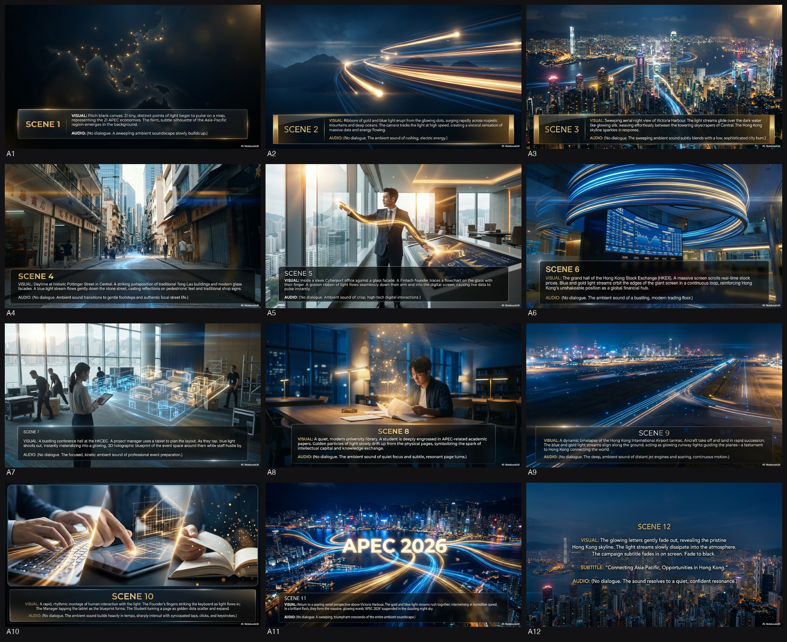
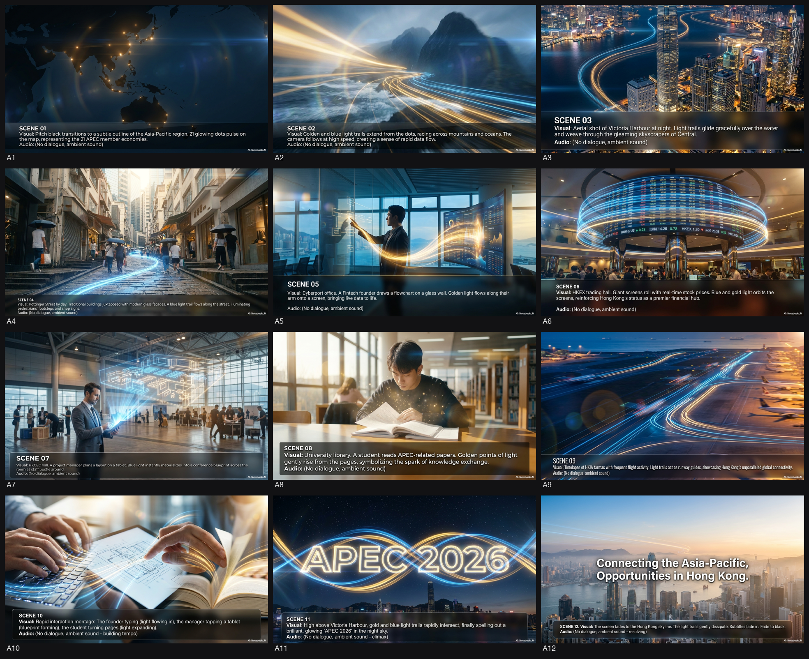
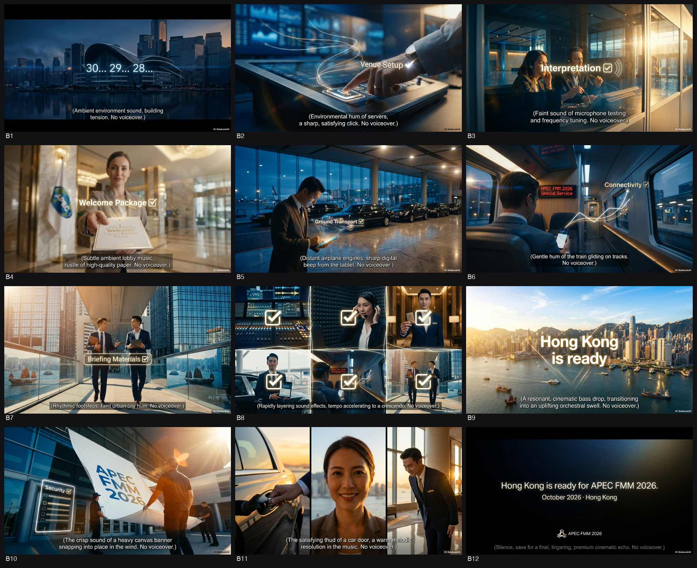
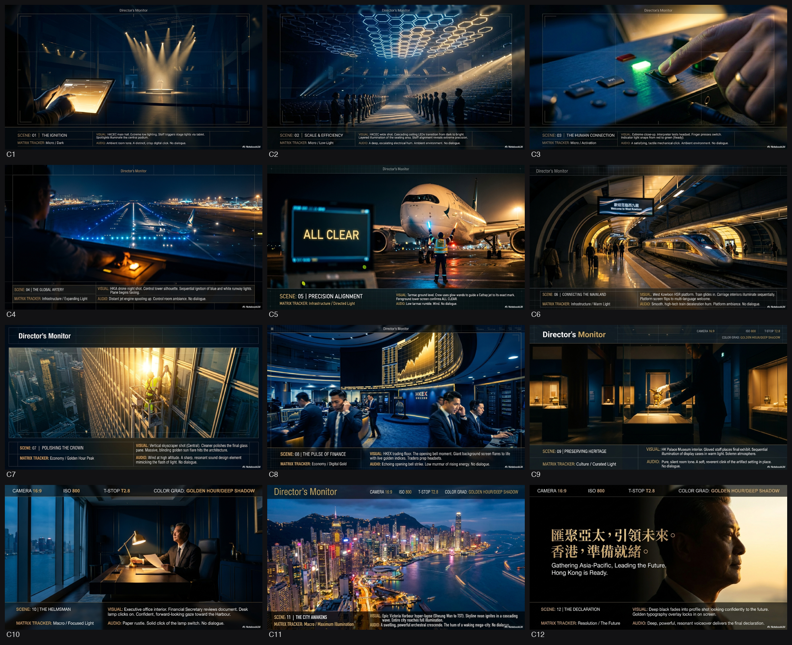

三甲 = 評審團按官方 marking scheme 總分頭三。你可揀三甲以外(見「🗂️ 候選池」每個都有「轉 brd」掣)。
評審團 Top 3 確認及分析
1. [委員會 101433] Concept 2:〔香港這一格 · The Value Point〕 — 85.8/100
最強在於把「香港」直接轉化為一個可被量度的價值坐標，既貼中 brief「匯聚」與「增值」，又能同時服務官員與商界。創意力與阻嚇力兼備，記憶點清晰（「這一格」即是香港）。落客成功率最高。
Polish 方向：把「Value Point」再轉化為可視化的實體裝置或 AR 體驗，讓「這一格」成為可拍照、可互動的打卡點。
2. [Agency kimi-k2.6] Concept 2:同頻 (Resonance) — 85.6/100
以「頻率共振」作為核心隱喻，同時照顧 APEC 21 經濟體的多元聲音與香港的獨特頻道。概念既國際又本地，阻嚇力強（其他城市難複製），記憶點突出。
Polish 方向：把「同頻」延伸為全城聲音地圖，讓市民與訪客可即時「聽見」香港與世界的共振時刻。
3. [Agency claude-opus-4-8] Concept 1:〔香港準備好〕 — 85.4/100
最直接回應「Ready」主題，語氣果斷且具主場感。創意力雖不算最高，但執行難度低、阻嚇力足、落客成功率高，適合官方主視覺及主舞台主 KV 使用。
Polish 方向：把「準備好」三字做成可即時更新的動態字體，配合倒數機制，強化「隨時出發」的緊迫感。
---
額外 Flag（被低估項目）
Flag 1: [Agency kimi-k2.6] Concept 3:鑄造 (The Mint) — 84.8/100（第5）
「鑄造」概念把香港比喻為全球價值與信任的鑄幣廠，同時帶有工藝與金融雙重意象，記憶點強且具高端感。現排名稍低，建議 Raymond 留意其在金融論壇或 VIP 晚宴的延伸可能。
Flag 2: [委員會 202004] Concept 1:【驗證就緒 Verified Ready】 — 83.7/100（第13）
「驗證」二字同時回應 APEC 技術標準與香港「超級聯繫人」角色，阻嚇力與專業感兼備。目前被中游概念稀釋，值得再評估其在技術峰會或數碼展區的應用價值。
Objective/Message?
官方硬訊息：2026 APEC FMM 中國年、國家財政部主辦、香港首次承辦、建構亞太命運共同體、超級聯繫人 + 超級增值人。要同時向市民傳達「我哋準備好」嘅集體自豪，而唔係官腔清單。
標誌性 visual element?
「眼珠反光一閃」——三個市民（茶師傅、設計師、地勤）完成動作時，眼珠高光同步閃一次，成為全片唯一可被模仿嘅動作記憶點。
咩人物出場?
三個普通香港人（茶餐廳阿叔、年輕設計師、機場地勤），唔使政府官員；只用環境聲，旁白極少。
造型/職業/身分?
茶餐廳師傅（圍裙）、設計師（白恤衫）、地勤（制服），全部日常專業人士。
場景/tone?
三個微距實拍場景：茶記光線、辦公室冷光、機場實用光；tone 走乾淨高級商業，16:9，避開電影感 Anamorphic。
本片 deliverable?
只係 30 秒 TV API，無 KV poster；主 slogan 兩句，全部硬訊息放片尾 2 秒小字。
---
創作概念:用「眼珠反光一閃」做貫穿全片嘅動作記憶點。三個香港人喺各自崗位完成動作嘅瞬間，眼珠高光同步閃一次，視覺化「香港人專注嘅每一刻，都係為世界搭橋」。旁白只講兩句，硬訊息全放片尾小字，解決堆砌問題。
人/景:茶餐廳阿叔沖茶、年輕設計師點擊滑鼠、機場地勤遞登機證，三個場景。
Visual Device:眼珠高光閃一次（Glint Sync），配以輕微心跳音效。
主打口號:橋，我哋搭好咗。
Proposed 明星/名人:不適用。
---
Objective/Message?
官方硬訊息：2026 APEC FMM 中國年、國家財政部主辦、香港首次承辦、建構亞太命運共同體、超級聯繫人 + 超級增值人。要同時向市民傳達「我哋準備好」嘅集體自豪，而唔係官腔清單。
標誌性 visual element?
「眼珠反光一閃」——三個市民（茶師傅、設計師、地勤）完成動作時，眼珠高光同步閃一次，成為全片唯一可被模仿嘅動作記憶點。
咩人物出場?
三個普通香港人（茶餐廳阿叔、年輕設計師、機場地勤），唔使政府官員；只用環境聲，旁白極少。
造型/職業/身分?
茶餐廳師傅（圍裙）、設計師（白恤衫）、地勤（制服），全部日常專業人士。
場景/tone?
三個微距實拍場景：茶記光線、辦公室冷光、機場實用光；tone 走乾淨高級商業，16:9，避開電影感 Anamorphic。
本片 deliverable?
只係 30 秒 TV API，無 KV poster；主 slogan 兩句，全部硬訊息放片尾 2 秒小字。
---
創作概念:三聲道交錯同一句「香港，準備好喇」——茶餐廳廣東話、辦公室普通話、機場英語，象徵香港係亞太語言交匯點。畫面只係三個靜止市民近鏡，零特效，純靠聲音做記憶點，技術風險極低。
人/景:同 Concept 1 三個人物，但畫面保持靜止，焦點喺聲音。
Visual Device:無，純聲音識別。
主打口號:十月，睇我哋啦。
Proposed 明星/名人:不適用。
創作概念: 以城市職人嘅「對位動作」做全片唯一視覺脈絡，由咖啡師杯耳對碟、的士司機倒後鏡校準、酒店房卡插入同一秒「咔」聲，隱喻香港作為國家戰略嘅精密齒輪；旁白只做情緒引導，硬訊息全靠畫面實體（21格鑰匙櫃、玻璃幕牆反射標語）自然帶出，避開一切政治符號與肖像風險。
人/景: 咖啡師、的士司機、酒店禮賓、會議廳名牌陳列、維港天星小輪；全片零面部特寫，只見手部與物件。
Visual Device: 全片同一組「滴答—咔」雙響聲效，每一個微距動作對位一次，形成聽覺記憶鈎。
主打口號: 香港節奏，準備就緒。
Proposed 明星/名人: 不適用
---
創作概念: 用「經緯織造」做視覺主軸，畫面由酒店餐巾摺疊、會議桌布拉直、維港燈光由北京朝陽延伸至香港，象徵「建構亞太命運共同體」嘅傳承與增值；旁白只講「一線相連」，其餘硬訊息（中國年、21經濟體、MICE、超級增值人）由畫面內實體符號（國旗區旗比例正確並置、21個名牌、MICE燈箱）直接承載，零口語化風險。
人/景: 酒店餐巾手部、會議桌布拉直手部、維港兩岸燈光紀實、科學園／港交所中景；全片零肖像。
Visual Device: 「光線穿過」作為轉場：一道陽光由北京地標穿過會議廳百葉簾，再切至香港維港玻璃幕牆，形成視覺「傳承」。
主打口號: 由一杯咖啡，到一個共同體。
Proposed 明星/名人: 不適用
創作概念: 將 APEC 財長會議定位為一次對香港承辦能力嘅「全球壓力測試」。我哋唔係空泛地講「準備好」，而係用一個貫穿全片嘅視覺裝置，展示香港以國際級嘅精密標準，逐一「驗證」所有籌備環節，證明香港已「準備就緒」，有力承辦國家級盛事，說好香港故事。
人/景: 唔拍官員微笑握手，而係拍「執行者」嘅專注神情同動作。例如：機場控制塔人員、會展中心技術總監、網絡安全專家、反恐特勤隊隊員等。場景集中喺大型基建嘅「神經中樞」，如數據中心、交通監控中心、同聲傳譯控制室。
Visual Device: 「水平基準線 (The Horizon Level)」。一條簡潔、具科技感嘅水平線會喺畫面中出現，對準關鍵物件或人物進行「掃描」同「鎖定」。當基準線由黃色虛線變為綠色實線，並顯示「Verified」字樣時，代表該環節已通過驗證，達到國際標準。呢個裝置將「準備」呢個抽象概念，轉化為一個具體、可記憶嘅視覺動作。
主打口號: 香港標準，接軌世界議程。
Proposed 明星/名人: 不適用。重點係呈現真實崗位嘅專業人士，強化真實感同專業性。
創作概念: 將香港「超級聯繫人」嘅角色數據化、人性化。透過視覺化嘅光脈絡，展示亞太區嘅資金流、人才流、數據流如何匯聚於香港；再由唔同崗位嘅香港人現身說法，將宏觀嘅「動能」落實到對佢哋工作同生活嘅實質影響，證明呢場盛事唔止係官員開會，而係一個能惠及各行各業、推動共同繁榮嘅能量聚合點。
人/景: 由宏觀到微觀。宏觀景係香港標誌性夜景，疊加流動嘅數據光脈絡，連接港交所、科學園、機場等。微觀景係幾個真實人物嘅工作場景特寫：金融科技初創創辦人喺白板上推演、會展業前線員工鋪設紅地氈、酒店總廚設計菜單。
Visual Device: 「城市電路板 (Urban Circuit Board)」。用 Motion Graphics 將亞太 21 個經濟體嘅光點，化為流動嘅光纖線條，沿住香港嘅真實街道、橋樑、海底電纜路徑流動，最終匯聚於會議場地，形成一個發光嘅 APEC 標誌。當某個香港人出場時，代表佢行業嘅一條光脈絡會特別亮起，顯示佢係呢個龐大網絡嘅重要節點。
主打口號: 聯通亞太動能，成就共同繁榮。
Proposed 明星/名人: 財經事務及庫務局局長許正宇。由佢作為「總指揮」嘅角色，以權威旁白串連起唔同行業嘅故事，增加官方認可度同宏觀視野。
創作概念:全片貫穿一個「溫暖精密」嘅檢視視野(暖金 UI + 建築藍圖質感)。每一項籌備工作完成 —— 同聲傳譯系統 test 妥、保安動線演練完、會場燈光校準好 —— 界面由「搜尋」瞬間「鎖定」,一聲清脆提示音做 punctuation。一連串「動作完成式」短句節奏,將抽象嘅「準備就緒」變成眼見為實、一個接一個亮綠燈嘅精準儀式。最後全城同步鎖定,扣緊「香港已準備就緒,向世界展示國際金融中心實力」嘅硬訊息。
人/景:會議統籌核對流程、技術總監戴上耳機測試、保安主管巡視會場;實景包括會展中心大堂、同聲傳譯室、港交所交易大堂、機場運作層。少量官員以「行動中總指揮」姿態視察(非讀稿)。
Visual Device:Focus Lock HUD —— 暖金色檢視框,每完成一項即「搜尋黃 → 鎖定綠」,配極簡 UI 反饋同提示音。全片用「Lock」嘅瞬間做剪接節拍。
主打口號:萬事就位,世界蒞臨
Proposed 明星/名人:不適用(以匿名專業崗位香港人 + 官員視察為主,符合「總指揮」品牌角色,避免明星搶焦)。
---
創作概念:放棄傳統地圖拉線。用實景長曝光 + 動態光軌,21 條代表不同 APEC 經濟體色溫嘅光流,由維港四面八方嘅基礎設施 —— 機場跑道、貨櫃碼頭、光纖機房、會展玻璃幕牆 —— 有重量、有速度噉流動,最終匯聚並點亮香港一點。光軌「接」住嗰一刻,就係「超級聯繫人」承托力嘅視覺化。再由宏觀匯流無縫接落本地金融、會展、酒店、物流嘅實況,證明一場會議激活香港百業,扣緊「背靠祖國、聯通世界」。
人/景:維港天際線長曝光、機場跑道燈軌、貨櫃碼頭光流、會展玻璃幕牆;匯聚後切入交易大堂、酒店宴會廳就位、會展前線員工準備中嘅真實場景。
Visual Device:Luminous Convergence —— 21 條有質感、有速度嘅實景光軌,由基建匯聚點亮香港主體;強調「匯聚點」嘅承托力而非飄渺 CG 線。
主打口號:21 個經濟體,1 個香港接得住
Proposed 明星/名人:不適用(視覺主導,城市本身做主角;可選財庫局局長一個視察鏡頭作官方認可,casting 待定)。
---
⚠️ 以上只係 Round 1 概念篩選。揀中後先 develop full storyboard、KV、英文稿、Radio。
創作概念:以「精準透鏡」為視覺脊骨,溝返「匯流」嘅地理尺度。香港係一個精密光學系統——全球財金能量(21 個經濟體)嘅光束由四方匯入,穿過香港呢個「透鏡」被校準、聚焦、放大,再射向未來。核心唔係「會議幾大」,而係 show「香港有能力將世界能量匯聚、處理、增值」——直接把抽象嘅「超級聯繫人 / 超級增值人」變成一個睇得到嘅物理過程,扣硬訊息「已準備就緒,展示國際金融中心實力」。
人/景:唔用市民做主角(避紅線「人物錯配」)。景為主——維港天際線、港交所交易大堂屏幕矩陣、機場塔台玻璃反光、會展中心、科學園實驗室。如需人,只在概念化段落出現商界領袖 / 專業人士剪影,唔做面部主角。開頭一兩鏡可用真實場景 establishing(跟 mandatory)。
Visual Device:一道穿越香港地標、被「光學透鏡」校準聚焦嘅金色光束。四方雜亂冷藍光束 → 入香港 → 過透鏡 → 收成一道乾淨、穩定、有重量嘅暖金光束 → 射向 2026。每經過一個地標,光束就「增值」一次(更亮、更聚焦)。片尾光束收束成 APEC FMM 2026 標誌。
主打口號:匯聚亞太,成就未來。(Where Asia-Pacific Converges, the Future Begins.)
Proposed 明星/名人:不適用。(用權威旁白 + 城市本身做主角,最對應政府「穩妥到位」同避免人物降格 / 錯配紅線。)
---
創作概念:反差線。唔講「會議」,先講「主場」——將成個香港當成一個正進入「盛事模式」嘅東道主,鏡頭跟住城市由幕後準備到鎂光燈亮起嘅一刻。張力在於:全球目光(21 個經濟體)正轉向香港,而香港用一種「沉穩、搞得掂、信得過」嘅姿態接住。把「準備就緒」由口號變成可見嘅集體動作,觸發市民「呢件世界級大事喺我哋屋企發生」嘅主人翁自豪感,同時對外宣告 capability。
人/景:景為主——會展中心搭建 time-lapse、機場塔台指揮、金融區夜景燈光節奏、高鐵西九龍站、城市由日到夜「亮燈」過程。人物只用對應級數嘅剪影 / 遠景(專業人士、接待團隊),唔用後生女揸平板做主角(避紅線)。
Visual Device:「全城轉場」——一個由暗轉亮嘅城市開關。全片以「香港逐區亮起」做動線:由清晨幕後準備(冷藍)→ 各地標逐一亮燈(暖金)→ 最後維港全亮,21 道來自世界嘅光同時打向香港,香港穩穩接住唔閃。亮燈=準備就緒嘅可視化。
主打口號:聯通世界,香港主場。(Connecting the World, Hosting in Hong Kong.)
Proposed 明星/名人:不適用。(主場敘事靠城市集體姿態,唔靠單一名人;用名人反而削弱「全城」感,亦避職銜 / 級別風險。)
---
CD note 畀 Raymond:Concept 1 係框內最高質嘅 safe pick——透鏡 device 夠 unique 唔似翻炒盛事 list,又夠莊重收貨,風險最低。Concept 2 edge 多啲、市民共鳴強啲(主人翁感),但「亮燈」概念執行要小心唔好做到似旅遊宣傳片。兩個都避晒紅線(無元首、無人物降格、無市井場景)。揀中邊個我即刻 develop 12 格 full board + KV main idea。
創作概念:香港本身就係嗰個「超級裝置」——唔使口講實力,成個城市嘅運作就係答案。由維港超廣角開始,當 21 個亞太經濟體嘅信號匯聚到香港,成座城市嘅燈光網格如心跳般同步脈動一次,由靜態天際線「啟動」成動態樞紐。呢一下脈動唔係煙花,係「系統就緒、東道主蓄勢待發」嘅儀式感。最後脈動凝聚成 APEC FMM 2026 標誌,扣實「香港準備好、為亞太區共同繁榮作出貢獻」嘅硬訊息。
人/景:維港天際線(超廣角 establishing)、中環金融區夜景、港交所交易大堂、機場/高鐵站運作、會展中心。如需人物只作點綴——商界領袖、專業人士剪影,級數對應,絕不用後生女揸平板做主角。
Visual Device:「城市心跳脈動」(The City Pulse)——維港天際線覆蓋一層會呼吸嘅動態光網格,21 個節點信號匯聚瞬間,全城燈光同步脈動一次,像一個沉穩有力嘅心跳。一個記得住嘅 visual hook:成個香港「activate」嗰一下。
主打口號:全城脈動,迎接世界(One city, one pulse, ready for the world.)
Proposed 明星/名人:不適用。本片以權威旁白主導 + 城市做主角,符合「東道主從容、唔自吹」嘅定位;貿然加明星反而削弱財長級莊重感。
---
創作概念:21 個亞太經濟體之間,總要有個「夾得埋」嘅交匯點——香港就係嗰一格。資金、人才、意念經過香港唔係淨係過境,而係被「提純、增值」再流向世界。借光學稜鏡嘅折射邏輯,將「超級聯繫人 × 超級增值人」視覺化做「經過 → 提純 → 變大」,但落地用維港實景同真實金融場景承托,理性 show 實力而唔離地。
人/景:港交所、科學園/數碼港、貨櫃碼頭、離岸人民幣結算等真實場景;以維港做匯聚核心;真實數字 super 疊加(如全球最大離岸人民幣樞紐相關數據)。
Visual Device:「香港這一格」(The Value Point)——畫面化成亞太區地圖網格,21 道來自各經濟體嘅流(資金/人才/意念)匯入中央「香港這一格」,經過時被折射、提純、放大,射出更闊更亮嘅「增值流」再分流向世界。記憶點:中間嗰格一着,全局通。
主打口號:世界匯聚之處,機遇增值之地(Where the world converges, opportunity multiplies.)
Proposed 明星/名人:不適用。概念主打「流動與樞紐」嘅抽象增值,加明星會分散視覺焦點;以實景 + 數據 + 權威旁白建立 confidence 更貼客戶「事實說服」方向。
---
CD 註:兩個 concept 共用同一套 style_anchor,可無縫並排畀 Raymond 比。Concept 1 主打感性主場榮光(emotion-led),Concept 2 主打理性樞紐增值(rational-led)。我個人 lean Concept 1 做主打——維港脈動視覺最易記、最大氣、最唔似翻炒舊「盛事之都」list-menu 做法,但 Concept 2 嘅「香港這一格」增值邏輯係 brief 核心「超級聯繫人 × 超級增值人」嘅最佳答案,值得 Raymond 一併考慮。揀中邊個我先 develop full 12 格 storyboard。
| 格 | 畫面 |
|---|---|
| 1 | 漆黑畫面，只有一格發光嘅亞太區地圖網格，21 條細流由四方八面緩緩匯向中央，維港夜景隱約閃過。 |
| 2 | 鏡頭拉近，21 條流（資金、人才、意念）化成光束，同時湧入維港中央嗰格，格內開始微微折射。 |
| 3 | 港交所大堂實景，屏幕閃過即時交易數據；光束穿過交易大堂，數字開始變得更清晰、更大。 |
| 4 | 科學園實驗室，科研人員操作儀器；光束經過實驗室，數據條變成更亮嘅曲線向上彈升。 |
| 5 | 數碼港辦公室，初創團隊圍住大屏討論；光束折射後，屏幕上嘅 app icon 變得立體發光。 |
| 6 | 貨櫃碼頭航拍，貨船進出；光束穿過貨櫃，貨運數字變成金色箭頭向外擴散。 |
| 7 | 維港全景，21 條光束同時抵達中央「香港這一格」，格內瞬間爆出強光。 |
| 8 | 特寫「香港這一格」，稜鏡效果閃過，流動數據被折射、重組、放大，變成更闊、更亮嘅三條主幹。 |
| 9 | 三條增值流射向世界地圖，分別標示「離岸人民幣結算量全球第一」「人才計劃流入人數」「跨境理財通交易額」等數據。 |
| 10 | 鏡頭快速剪接：中環、數碼港、機場三地，增值後嘅光束同時亮起，連成網絡。 |
| 11 | 維港日出，陽光與增值流融合，畫面由冷藍轉暖金，旁白響起：「世界匯聚之處，機遇增值之地」。 |
| 12 | 最後一格定格：亞太地圖上只剩中央「香港這一格」持續發光，slogan 淡入，畫面 fade to black。 |
- 議題真實背景:2026年中國係 APEC 東道主(「中國年」),香港首次承辦「2026年亞太區經濟合作組織財政部長會議」(APEC FMM 2026),2026年10月喺香港舉行。財長會議係 APEC 框架下最高層級嘅財金部長級會議,各經濟體財金主管討論宏觀經濟、金融合作。香港主辦方代表必然係財政司司長主持/出席(財金事務範疇),由財經事務及庫務局(FSTB)統籌、ISD 監製。香港角色:東道主、國際金融中心、「超級聯繫人」+「超級增值人」。
- Objective / Message:宣佈 FMM 2026 首次喺香港舉行;展示香港國際金融中心 + MICE 實力;傳遞「中國聲音」、推中華文化;香港準備就緒;齊心建構亞太命運共同體,推動繁榮發展。
- Visual element:維港天際線(IFC/ICC 金融地標)、香港會議展覽中心(MICE 場地)、21 個經濟體旗幟/代表、金融數據光流、中華文化符號(書法、紅金配色)、「Hong Kong, China」主辦銜牌。
- 人物出場:政府層面點到即止——可用財政司司長主持會議嘅 b-roll 感覺鏡頭(背影/遠景,唔正面扮真人);市民/受眾:金融從業員、會展工作人員、酒店業、的士司機、青年、國際代表團。
- 造型 / 職業 / 身分:中環西裝金融人、會展中心 setup 嘅技術員/接待、酒店禮賓、的士大佬、揸住平板嘅後生仔女、整緊點心嘅師傅——全部「準備緊」做東道主嘅普通香港人。
- 場景 / Tone:維港晨曦、會展中心、中環金融區、機場迎賓、街市/茶餐廳。Tone:專業、自豪、大氣、暖——唔浮誇,but 有國際盛事 grandeur。
- deliverable:30秒 TV API(廣東話+英語)、30秒 Radio API、雙語海報 KV、柱身貼紙、(optional)港鐵。有 KV → 必須諗定主 slogan + KV main idea。
- KV main idea:維港天際線倒影喺一塊金色「準備就緒」嘅銜牌上,21 道光匯聚香港,銜牌寫「2026 APEC FMM・香港主場」。
---
創作概念:全城各行各業嘅香港人,各自喺崗位上做緊「最後準備」——會展中心 setup、酒店摺好毛巾、的士抹得閃令令、點心師傅出籠、金融人 check 數據。每個人做完一個動作,鏡頭一 cut,串成「成個香港都準備緊迎接世界」嘅集體動能。最後維港晨曦航拍,銜牌亮起「2026 APEC FMM 首次喺香港舉行」。直接扣硬訊息「香港準備就緒,確保財長會議順利進行」+「亞洲國際都會 / MICE 首選地」。
人/景:會展中心、酒店、中環金融區、機場、街市/茶餐廳;真香港打工仔——會展技術員、酒店禮賓、的士司機、金融分析員、點心師傅、迎賓後生仔女。
Visual Device:「準備動作接力」——每個人完成一個利落動作(扯直旗幟、㩒亮 LED、推開玻璃門、出籠),動作之間用 match-cut 串連,愈嚟愈快,匯聚到維港全景同會議銜牌亮起。
主打口號:香港準備好,世界請進嚟 / Hong Kong is Ready, the World is Welcome
Proposed 明星/名人:不適用(用真實各行各業香港人,代入感同自豪感更強,符合政府專業 tone)。
---
| 格 | 畫面 |
|---|---|
| 1 | 清晨維港航拍，陽光穿過雲層灑落，鏡頭拉近會展中心玻璃幕牆，技術員正拉直一面旗幟，動作乾淨利落。 |
| 2 | Match-cut 至酒店套房，禮賓員雙手將雪白毛巾摺成天鵝形，放在床尾，窗外就是維港景色。 |
| 3 | 的士車廂內，司機用乾淨白毛巾抹過擋風玻璃，陽光反射閃過，玻璃上一塵不染。 |
| 4 | 中環金融大廈，分析員手指在雙屏上快速敲擊，數據圖表即時更新，鏡頭推近屏幕反光。 |
| 5 | 傳統茶餐廳廚房，點心師傅熟練地揭開蒸籠，熱騰騰燒賣冒出白霧，蒸汽瞬間填滿畫面。 |
| 6 | 機場入境大堂，迎賓後生男女同時推開兩扇玻璃門，動作一致，門後是整齊排列的接待人員。 |
| 7 | 會展中心主舞台，技術員按下控制台，LED 幕牆瞬間亮起藍色光點，鏡頭快速橫移。 |
| 8 | 連串 match-cut：旗幟拉直、毛巾放妥、玻璃抹淨、數據更新、蒸籠出籠、玻璃門推開、LED 點亮，動作愈嚟愈快，節奏加速。 |
| 9 | 航拍鏡頭急速上升，維港全景展開，會展中心、銀行大廈、船隻同時入鏡，城市像甦醒般運轉。 |
| 10 | 維港晨曦，陽光灑在水面，航拍鏡頭緩緩推進會展中心頂部，一塊大型電子銜牌開始亮起。 |
| 11 | 特寫電子銜牌：藍底白字閃現「2026 APEC FMM 首次喺香港舉行」，字跡逐格亮起。 |
| 12 | 全景定格維港日出，畫面下方淡入主標語「香港準備好，世界請進嚟」，旁邊小字「Hong Kong is Ready, the World is Welcome」。 |
- 議題真實背景:2026年中國係 APEC 東道主(「中國年」),香港首次承辦「2026年亞太區經濟合作組織財政部長會議」(APEC FMM 2026),2026年10月喺香港舉行。財長會議係 APEC 框架下最高層級嘅財金部長級會議,各經濟體財金主管討論宏觀經濟、金融合作。香港主辦方代表必然係財政司司長主持/出席(財金事務範疇),由財經事務及庫務局(FSTB)統籌、ISD 監製。香港角色:東道主、國際金融中心、「超級聯繫人」+「超級增值人」。
- Objective / Message:宣佈 FMM 2026 首次喺香港舉行;展示香港國際金融中心 + MICE 實力;傳遞「中國聲音」、推中華文化;香港準備就緒;齊心建構亞太命運共同體,推動繁榮發展。
- Visual element:維港天際線(IFC/ICC 金融地標)、香港會議展覽中心(MICE 場地)、21 個經濟體旗幟/代表、金融數據光流、中華文化符號(書法、紅金配色)、「Hong Kong, China」主辦銜牌。
- 人物出場:政府層面點到即止——可用財政司司長主持會議嘅 b-roll 感覺鏡頭(背影/遠景,唔正面扮真人);市民/受眾:金融從業員、會展工作人員、酒店業、的士司機、青年、國際代表團。
- 造型 / 職業 / 身分:中環西裝金融人、會展中心 setup 嘅技術員/接待、酒店禮賓、的士大佬、揸住平板嘅後生仔女、整緊點心嘅師傅——全部「準備緊」做東道主嘅普通香港人。
- 場景 / Tone:維港晨曦、會展中心、中環金融區、機場迎賓、街市/茶餐廳。Tone:專業、自豪、大氣、暖——唔浮誇,but 有國際盛事 grandeur。
- deliverable:30秒 TV API(廣東話+英語)、30秒 Radio API、雙語海報 KV、柱身貼紙、(optional)港鐵。有 KV → 必須諗定主 slogan + KV main idea。
- KV main idea:維港天際線倒影喺一塊金色「準備就緒」嘅銜牌上,21 道光匯聚香港,銜牌寫「2026 APEC FMM・香港主場」。
---
創作概念:21 道光線從亞太地圖各方向射向香港,化成維港上空一道金光,落地成「香港主場」嘅會議銜牌——象徵 21 個經濟體代表團首次匯聚香江。光流之間穿插香港金融、會展、文化嘅標誌畫面(IFC 數據、會展中心、書法/紅金)。big idea:香港作為「超級聯繫人」,把亞太繁榮匯聚成同一束光,呼應「建構亞太命運共同體」。大氣、國際、有「中國聲音」嘅文化底蘊。
人/景:維港天際線航拍、香港會議展覽中心、中環金融區夜景燈火、亞太抽象地圖光效;穿插國際代表團、香港金融人、會展工作者剪影。
Visual Device:「21 道光匯聚成一」——21 條金線由亞太四方流向香港,織成維港上空一道光帶,最後凝成會議銜牌同主題「建構亞太命運共同體,推動繁榮發展」。
主打口號:金融匯聚,亞太同心 / Where Finance Meets, Asia-Pacific United
Proposed 明星/名人:不適用(走大氣象徵 + 城市英雄路線,明星反而搶走盛事主體性)。
---
⚠️ Round 1 只出概念,揀中先 develop 12 格 storyboard + KV 完稿 + 完整 script。兩個概念都可孖埋同一 KV main idea 發展,Raymond 揀方向先。
創作概念: 以一條流動、發光的「金線」作為核心視覺裝置 (Visual Device)，象徵資金、機遇與智慧的流動。金線由維港中心點延伸，穿梭於香港各大金融地標、創科樞紐及文化盛事，將香港的「硬件」與「軟件」實力串連起來。最終，金線從香港射向世界地圖上的亞太各經濟體，具體化香港作為「超級聯繫人」的角色，視覺上呈現「香港已準備好，將亞太地區連接起來」的宏大訊息。
人/景:
* 景: 維港晨曦航拍、國際金融中心(ifc)外觀、港交所交易大堂(模擬)、科學園實驗室、西九文化區(M+ / 故宮)、香港國際機場貨運站、會議展覽中心。所有場景都乾淨、現代、充滿活力。
* 人: 金融才俊在交易室分析數據、科研人員在實驗室專注工作、會展業員工佈置大型場地。人物均以專業、自信的形象出現，非特寫，作為城市實力的構成部分。
Visual Device: 一條貫穿全片的 CGI「金線」。開場時在維港上空凝聚成 APEC 標誌，然後化作線條在城市中流轉，最後在片尾射向代表21個經濟體的發光點。金線的流動速度與配樂節奏同步，營造動感。
主打口號: 香港主場，聯通亞太新格局。
Proposed 明星/名人: 不適用。此概念以宏觀視覺為主，展示香港整體實力，不宜聚焦個別名人。
創作概念: 將香港描繪成一個為頂級國際盛會做最後準備的「世界舞台」。影片透過一系列「準備就緒」的畫面，展現香港各行各業高效、專業、有條不紊的一面。由會議場地的燈光逐一亮起，到交通網絡的順暢運作，再到財金官員的最後演練，層層遞進，營造出一種「萬事俱備，只待開幕」的期待感與自信。這不僅是宣傳會議，更是展示香港強大的執行力與世界級的城市管理水平。
人/景:
* 景: 會議展覽中心主會議廳(由空無一人到燈光全亮)、機場控制塔內部、高鐵西九龍站列車進站、中環商業區的玻璃幕牆被抹得發亮、香港故宮文化博物館展品被精心佈置。
* 人: 會議口譯員在測試設備、機場地勤人員指揮飛機停泊、財政司司長(或財庫局局長)在辦公室審視文件並望向窗外維港。人物動作精準、專業，展現「準備好」的狀態。
Visual Device: 「亮燈」的儀式感。全片以一系列「開啟」或「點亮」的動作串連：會議廳的射燈、港交所的開市屏幕、機場跑道的指示燈、城市天際線的霓虹燈。每個「亮燈」都代表一個環節已準備就緒，最後全城燈火通明，象徵香港這個大舞台已全面啟動。
主打口號: 匯聚亞太，引領未來。香港，準備就緒。
Proposed 明星/名人: 財政司司長 陳茂波先生 或 財經事務及庫務局局長 許正宇先生。在片尾以一個自信、望向未來的鏡頭作結(無需對白)，能極大增強官方權威性與「準備就緒」的可信度，直接回應國際社會的疑慮。
| 格 | 畫面 |
|---|---|
| 1 | 黑屏淡入，香港會議展覽中心主會議廳一片漆黑，鏡頭由高處緩緩推進。 |
| 2 | 會議廳射燈逐一亮起，暖白光柱掃過空蕩講台，空氣中浮動微塵，呈現專業整潔的場地。 |
| 3 | 切至機場控制塔內，地勤人員戴耳機，雙手精準按下燈號，跑道指示燈同步亮起綠光。 |
| 4 | 航拍高鐵西九龍站月台，列車緩緩進站，車廂燈光與月台燈帶同時亮起，映照乾淨地面。 |
| 5 | 中環玻璃幕牆特寫，清潔員用長杆抹窗，陽光反射下幕牆瞬間閃現金光。 |
| 6 | 香港故宮文化博物館內，工作人員輕放展品於玻璃櫃，射燈由暗轉亮，照亮青花瓷細節。 |
| 7 | 口譯員測試耳機，快速切換中英頻道，控制室螢幕上文字同步滾動，顯示設備就緒。 |
| 8 | 港交所交易大廳，巨型屏幕由黑轉亮，實時指數跳動，交易員戴耳機專注盯盤。 |
| 9 | 財政司司長陳茂波坐在辦公室，翻閱最後一份文件，抬頭望向維港，窗外天際線霓虹漸亮。 |
| 10 | 快速剪接：會議廳、機場、高鐵、中環、故宮多個燈光同時點亮，城市脈動加速。 |
| 11 | 全港夜景航拍，天際線燈火通明，維港兩岸燈海連成一片，猶如巨型舞台燈光全開。 |
| 12 | 陳茂波自信望向鏡頭，維港燈光在背景閃爍，畫面淡出打出金色字幕：「匯聚亞太，引領未來。香港，準備就緒。」 |
創作概念:用「水/光匯流」做核心比喻去演繹「超級聯繫人」同「融通」——但唔係畫一條線串城,而係由維港水面、人潮、車流、貨櫃碼頭吊機、交易所大屏數據,呢啲香港本身嘅真實「流動」畫面,一層層匯聚收束到香港中心,最後浮現會議正名同就緒訊息。Big idea:香港本身就係亞太財金嘅匯流點,唔使靠口號講,用全城真實嘅動勢去 show。扣硬訊息「首次在香港舉行」+「超級聯繫人」+「準備就緒」。
人/景:維港晨曦至日落航拍、中環金融區、交易所交易大堂、貨櫃碼頭運作、香港國際機場接機大堂(國際代表抵港感)、會展中心室內準備中嘅 establishing shot。人物只見專業人士/商界領袖剪影同遠景,唔做個人主角。
Visual Device:「匯流」——畫面中各種真實流動(水紋、車軌光、人潮、數據流)以同一方向收束、層層疊向香港心臟,最後凝聚成一點光,化為 APEC FMM 2026 字樣。係動勢比喻,唔係字面畫線。
主打口號:世界匯聚香港 香港準備就緒
Proposed 明星/名人:不適用(用權威旁白 + 城市本身做主角,符合 debrief 唔用人物做會議代言、避免份量錯配)。
---
創作概念:用「主場準備就緒」嘅 anticipation 做骨——全城各個世界級場景由「準備中」遞進到「就緒」一刻。Big idea:香港唔係第一次接待世界,但呢次係首次主辦財長會議,而我哋一向都 ready。借香港過往成功舉辦國際盛事嘅底氣(信心 + 能力),用 time-lapse 同 establishing shot 砌出「全城準備、世界級主場」嘅氣勢,落到「首次主辦、香港準備就緒」。比起 Concept 1 偏 metaphor,呢條偏 confidence/showcase,直接啲、官方場合更穩陣。
人/景:會展中心布置 time-lapse、機場與高鐵西九龍站迎賓動線、金融區夜景亮燈、科學園/交易所等實力場景、城市天際線航拍。可用過往香港成功舉辦大型國際會議嘅 B-roll(只做底氣鋪墊,唔做新聞報導感)。人物見專業人士/商界領袖遠景或剪影。
Visual Device:「就緒一刻」——每個場景由暗/未亮/未布置,push-in 到燈光亮起、布置完成嗰一下「啟動」,連環遞進,最後全城同時亮起,定格會議正名。用「亮燈/啟動」嘅統一動作做記憶鈎。
主打口號:香港，世界財金的交匯點(備選:一城匯天下財 香港迎盛會)
Proposed 明星/名人:不適用(維持權威旁白 + 城市主場,避免人物份量錯配紅線)。
---
⚠️ 以上只出概念,未落 12 格 storyboard。揀中邊條,我哋即刻 develop full board + 30 秒分鏡 + 旁白稿(廣東話口語、繁中書面語字幕)+ KV poster 主視覺。
* 議題真實背景：APEC FMM 2026 係亞太區 21 個經濟體嘅財政部長（或同級官員）喺香港舉行嘅高級別官方會議。呢個會議係 2026 APEC「中國年」系列會議嘅一部分，由中國主辦，香港歷史性首次承辦。香港特區政府嘅財政司司長將會代表香港主持/參與會議，財經事務及庫務局負責具體籌備同執行。香港嘅角色係東道主、會議場地提供者，並藉此平台展示其金融實力同國際化優勢。
* Objective / Message：主要目的係向國際（尤其係與會代表）同本地公眾公告呢個盛事嘅舉行，提升香港作為國際金融中心、亞洲盛事之都嘅形象，並傳遞香港已準備就緒、歡迎世界嘅訊息。核心硬訊息必須包括：首次喺香港舉行、2026年10月、展示金融發展與MICE實力、香港作為超級聯繫人同超級增值人。
* Visual element：必須包含 APEC標誌 及 「APEC FMM 2026 Hong Kong」 官方活動標誌（待公佈）。其他扣題視覺包括：維港天際線（尤其係國際金融中心IFC、中環摩天大廈群）、會議展覽中心（MICE場地）、金融交易大堂/數據屏幕、象徵連結嘅線條/光軌/網絡、代表亞太區嘅多元面孔。
* 人物出場：政府方面，最可能係財政司司長（如陳茂波司長或其繼任人）以東道主身份作簡短歡迎發言。其他人物包括：與會嘅國際財金官員代表（西裝畢挺）、本地金融才俊（如投資銀行家、資產管理經理）、會展業從業員（如活動統籌）、普羅市民（表現迎接盛事嘅期待感）。
* 造型 / 職業 / 身分：國際官員著正式西裝；本地金融人士著商務正裝或商務休閒裝，似中環返工嘅專業人士；會展從業員可能著 smart casual 並帶耳機、對講機，似真實搞活動嘅人；市民造型多元，如年輕夫婦、一家大細、遊客，喺維港旁或市區中。
* 場景 / Tone：真實場景包括：香港會議展覽中心/其他主要場館內部、中環商業區街道、維港海濱、機場入境大堂、金融機構辦公室。調性必須專業、自信、國際化、有活力、帶歡迎嘅溫暖感，切忌浮誇或過度娛樂化。
* deliverable：有 TV API、Radio API、KV poster、pillar sticker。KV主 slogan 暫定為：「香港準備就緒，連繫亞太 創享繁榮」；KV main idea：一個由維港為起點、金色光軌向外輻射連結亞太區各經濟體地標嘅抽象動態地圖，中心是香港璀璨天際線。
* 其他提問：如何將「超級增值人」呢個較抽象概念視覺化？（例如展示金融科技、綠色金融等「增值」服務。）如何避免「離地」，令公眾覺得與自己有關？（連結到盛事帶動經濟、提升城市國際地位等間接好處。）
創作概念：將「超級聯繫人」概念極致視覺化。香港不只係地理橋樑，更係時機 (Timing) 嘅創造者。概念呈現香港精準、高效嘅金融基建與專業服務，如何為亞太區創造關鍵嘅「合作時機」，促成重大財金決定。由微觀交易瞬間到宏觀部長握手，都體現香港促成「對的時間」嘅核心價值，緊扣金融中心、超級聯繫人與增值角色。
人/景：本地交易員緊盯屏幕完成跨境交易（微觀）；國際財長於香港地標背景前握手、簽署合作備忘錄（宏觀）；會展團隊高效部署會議場地。
Visual Device：「關鍵時機」視覺化。畫面中會出現發光的「脈衝波」或「對接圓環」，在交易完成、部長握手、場地燈光亮起的精準瞬間同步出現並擴散，象徵由香港創造的關鍵合作時刻。
主打口號：創造關鍵時機，聯繫亞太未來 | Creating the Pivotal Moment, Connecting Asia-Pacific's Future.
Proposed 明星/名人：不適用。考慮邀請具國際信譽的本地金融界領袖（如港交所前行政總裁李小加類型人物）作權威旁白。
* 議題真實背景：APEC FMM 2026 係亞太區 21 個經濟體嘅財政部長（或同級官員）喺香港舉行嘅高級別官方會議。呢個會議係 2026 APEC「中國年」系列會議嘅一部分，由中國主辦，香港歷史性首次承辦。香港特區政府嘅財政司司長將會代表香港主持/參與會議，財經事務及庫務局負責具體籌備同執行。香港嘅角色係東道主、會議場地提供者，並藉此平台展示其金融實力同國際化優勢。
* Objective / Message：主要目的係向國際（尤其係與會代表）同本地公眾公告呢個盛事嘅舉行，提升香港作為國際金融中心、亞洲盛事之都嘅形象，並傳遞香港已準備就緒、歡迎世界嘅訊息。核心硬訊息必須包括：首次喺香港舉行、2026年10月、展示金融發展與MICE實力、香港作為超級聯繫人同超級增值人。
* Visual element：必須包含 APEC標誌 及 「APEC FMM 2026 Hong Kong」 官方活動標誌（待公佈）。其他扣題視覺包括：維港天際線（尤其係國際金融中心IFC、中環摩天大廈群）、會議展覽中心（MICE場地）、金融交易大堂/數據屏幕、象徵連結嘅線條/光軌/網絡、代表亞太區嘅多元面孔。
* 人物出場：政府方面，最可能係財政司司長（如陳茂波司長或其繼任人）以東道主身份作簡短歡迎發言。其他人物包括：與會嘅國際財金官員代表（西裝畢挺）、本地金融才俊（如投資銀行家、資產管理經理）、會展業從業員（如活動統籌）、普羅市民（表現迎接盛事嘅期待感）。
* 造型 / 職業 / 身分：國際官員著正式西裝；本地金融人士著商務正裝或商務休閒裝，似中環返工嘅專業人士；會展從業員可能著 smart casual 並帶耳機、對講機，似真實搞活動嘅人；市民造型多元，如年輕夫婦、一家大細、遊客，喺維港旁或市區中。
* 場景 / Tone：真實場景包括：香港會議展覽中心/其他主要場館內部、中環商業區街道、維港海濱、機場入境大堂、金融機構辦公室。調性必須專業、自信、國際化、有活力、帶歡迎嘅溫暖感，切忌浮誇或過度娛樂化。
* deliverable：有 TV API、Radio API、KV poster、pillar sticker。KV主 slogan 暫定為：「香港準備就緒，連繫亞太 創享繁榮」；KV main idea：一個由維港為起點、金色光軌向外輻射連結亞太區各經濟體地標嘅抽象動態地圖，中心是香港璀璨天際線。
* 其他提問：如何將「超級增值人」呢個較抽象概念視覺化？（例如展示金融科技、綠色金融等「增值」服務。）如何避免「離地」，令公眾覺得與自己有關？（連結到盛事帶動經濟、提升城市國際地位等間接好處。）
創作概念：以「城市即網絡，香港即樞紐」為核心。將香港描繪成一個充滿活力與機遇的立體網絡。金融數據流、人才流、物流、資訊流在香港交匯、增值，再流向亞太各地。概念強調香港動態的「脈絡」(Context)，如何讓不同元素在此碰撞出更大價值，具體展示其金融、貿易、MICE及連接角色。
人/景：航拍維港日夜川流不息的船隻與車流；數據中心燈光閃爍；機場入境大堂各國旅客交匯；會展場內不同語言人群交流；中環白領於咖啡店用平板電腦進行跨國視像會議。
Visual Device：「城市數據脈絡圖」。以璀璨的香港夜景地圖為底圖，上面疊加流動的光線，分別代表資本（金色）、人才（藍色）、創意（綠色）、貿易（白色）的流動。鏡頭穿梭於這些光流之中，最終所有線路匯聚於即將舉行APEC FMM的場館，形成一個發光的網絡樞紐。
主打口號：匯聚多元脈絡，增值亞太繁榮 | Where Networks Converge, Value Multiplies for Asia-Pacific.
Proposed 明星/名人：不適用。考慮採用不同族裔面孔的專業人士，體現香港的國際化與包容性。
創作概念：將香港描繪成一個充滿活力、脈動的「金融心臟」。全片以「脈搏」(Pulse) 作為核心視覺隱喻，展示城市由清晨至夜晚的節奏，象徵資金、人才、資訊在此流動不息。最後所有脈動匯聚成 APEC 財長會議的會場，點出「香港已準備就緒，成為亞太財金脈動的匯聚點」的硬訊息。
人/景：清晨跑步的金融才俊(中環海濱)、交易員專注工作的手部特寫(港交所)、文化地標前交談的國際商務人士(M+ / 故宮文化博物館)、機場高效運轉的航拍、黃昏下財政司司長於會議室準備的自信神態、夜幕中維港兩岸璀璨燈光。
Visual Device：一條流動的「金色光流」 貫穿全片。它起初是晨跑者的汗水光澤、交易螢幕上的數據流、文化展品的光暈，最終匯聚成會議桌上投射出的 APEC 2026 標誌輪廓，象徵財金能量在此匯集。
主打口號：脈動香港，匯聚世界財智。 | Hong Kong's Pulse, Where World Finance Connects.
Proposed 明星/名人：不適用 (優先考慮財政司司長或財庫局局長權威出鏡，增強官方認可度)。
創作概念：緊扣香港「超級聯繫人」角色，以各種實體的與象徵性的「橋」作為核心意象。影片展示香港如何連結中國與世界、傳統與創新、金融與民生。每一座「橋」都代表一項香港的實力，最終引向 APEC 財長會議這座「亞太合作之橋」，彰顯香港搭建平台、促進區域共榮的使命。
人/景：港珠澳大橋日出航拍(基建聯繫)、中環行人天橋上匆忙的國際專業人士(人才流動)、茶餐廳內老師傅與外籍青年分享點心(文化交融)、科學園實驗室內的創科展示(創新橋樑)、街市商販透過電子支付收錢(金融普惠)、財政司司長在禮賓府花園與虛擬的國際代表進行線上會議(外交之橋)。
Visual Device：多重「橋樑」的蒙太奇與轉場。利用鏡頭運動與剪接，讓上一場景的線條(如大橋纜索、天橋結構、數據線)自然流暢地過渡成下一個場景的元素，視覺化「聯繫」的概念。最終所有線條交織成會議主視覺的圖案。
主打口號：築橋亞太，香港聯通繁榮。 | Building Bridges Across Asia-Pacific, Hong Kong Connects Prosperity.
Proposed 明星/名人：不適用。可考慮邀請具國際聲譽、形象正面的本地商界領袖（如港交所前行政總裁李小加類型的人物）作簡短權威背書，但需評估預算與檔期，風險較高。首選仍是政府官員。
創作概念: 將香港描繪為一個充滿活力與連通性嘅「金融脈搏」，視覺化呈現資金、資訊、機遇如何喺呢個城市高效流動與匯聚。影片以「脈動」為視覺主軸，呼應香港作為「超級聯繫人」嘅角色，同時展示其穩健嘅金融基建同準備就緒嘅狀態，完美扣連「香港已準備就緒，展示實力」嘅客戶硬訊息。
人/景: 開場為維港晨曦航拍，接駁金融區快節奏人流、港交所交易大堂、跨境高鐵/大橋、數據中心閃爍燈光等宏觀場景。中段穿插國際商務人士（非元首級）於會議室/機場/酒店等場景嘅自信互動。
Visual Device: 一條貫穿全片、不斷流動變幻嘅「光之流線」，象徵資金流、資訊流與機遇流。佢會喺唔同場景中轉化形態——例如喺維港變成激光、喺金融數據屏幕變成流動數據、喺基建變成貫穿嘅光軌，最後匯聚成「APEC FMM 2026」嘅官方標誌。
主打口號: 財匯香江，脈動亞太
Proposed 明星/名人: 不適用。（建議以權威旁白及多元化國際商界人士形象為主）
創作概念: 聚焦香港作為「世界之窗」嘅獨特角色，透過一系列象徵「連接」與「視野」嘅門、窗、屏幕意象，展現香港如何匯聚亞太區21個經濟體嘅視野與力量。概念將抽象嘅「超級增值人」角色，轉化為具體、可視嘅「增值場景」，例如將國際視野本地化、將區域合作實體化，強調香港作為會議東道主提供嘅獨特平台與價值。
人/景: 場景由一系列具「框架」感嘅畫面構成：中環摩天大樓玻璃幕牆反射嘅天空、機場廊橋連接飛機、會展中心巨大玻璃窗俯瞰維港、高鐵車窗飛馳而過嘅景色、金融從業員望向多重數據屏幕等。
Visual Device: 多重「視窗」疊加與轉換。畫面開始於一個小窗口（例如手機屏幕顯示APEC資訊），逐漸擴展至建築玻璃窗、機場廊橋、會議廳全景，最後形成一個由21塊屏幕（代表21個經濟體）組成嘅巨型視覺牆，共同顯示「APEC FMM 2026 Hong Kong」。
主打口號: 亞太視野，匯聚香港
Proposed 明星/名人: 不適用。
創作概念: 將2026年10月嘅APEC財長會議，塑造成一個「未來嘅交匯點」。影片以「倒數」與「準備」為情緒主軸，展示香港全城（從基建到人才）如何為迎接這個國際盛事而密鑼緊鼓。概念強調「前瞻性」與「行動力」，將「舉辦會議」提升至「塑造亞太區共同未來」嘅層次，回應「Building an Asia-Pacific Community to Prosper Together」嘅主題。
人/景: 快節奏剪接各項「準備工作」：機場地勤為迎接代表團做準備、會展中心工作人員測試設備、金融機構準備報告、酒店服務員整理房間、跨境基建（橋樑、鐵路）嘅運作等。場景既有日間嘅繁忙，亦有夜間燈火通明嘅城市景觀。
Visual Device: 一個巨大、不斷跳動倒數嘅「未來時鐘」視覺元素，顯示「2026年10月」及會議標誌。呢個時鐘會以不同形式出現喺各個場景——例如投射喺建築外牆、顯示喺金融數據屏、甚至以光影形式出現喺維港海面，營造全城期待嘅氛圍。
主打口號: 2026，亞太未來，香港交匯
Proposed 明星/名人: 不適用。
---
確認點:
- 所有口號及描述已使用官方正名（如「亞太區經濟合作組織財政部長會議」、「國際金融中心」）。
- 概念方向嚴格遵循 debrief 指引：專業、大氣、穩重、有自信；避免元首畫面、過度市井化場景。
- 視覺手法嘗試回應「如何視覺化超級聯繫人」嘅挑戰，避免字面化畫線。
- 結尾將清晰展示區徽及部門標誌（概念中未細述，但會執行）。
- 旁白主導，配合熒幕蓋字強調關鍵信息（如會議名稱、日期）。
- 以上為初步創意概念，供 Raymond 及團隊篩選。如選中任何方向，將進一步發展完整 storyboard、文案及美術設計。
- 議題真實背景: 呢個係「亞太區經濟合作組織財政部長會議 (APEC FMM) 2026」。2026 年係「APEC 中國年」，而香港係首次承辦財長會議呢個環節，係國家主場外交一部分。實際代表香港主持或發表主題演講嘅，好大機會係 財政司司長 (Financial Secretary)。香港嘅角色係利用「一國兩制」優勢，做東道主、國際金融中心，同埋連接中國與世界嘅「超級聯繫人」。
- Objective / Message: 核心目的係宣布會議，但更重要係借勢做一次大型城市形象工程。要傳遞嘅硬訊息包括：(1) 會議「首次」喺香港搞，係一份榮譽；(2) 香港金融實力強勁、會展旅遊頂級；(3) 香港準備好，有能力辦好呢場國際盛事，體現「超級聯繫人」角色，說好中國同香港故事。
- Visual element: 「交織的光帶」。用流動、發光嘅線條，象徵資金流、數據流、人流。光帶可以係金色（金融）、藍色（科技/未來）、紅色（中國元素）。光帶由 21 個點（代表 APEC 經濟體）匯聚到香港嘅地標（如國金中心、會展），視覺化「超級聯繫人」嘅概念，夠記得住又扣題。
- 人物出場: 政府代表：財政司司長（可以係一個權威、穩重嘅鏡頭，例如喺政府總部望住維港，象徵準備就緒）。市民/受眾：需要多元化，代表香港唔同嘅持份者，例如一個金融科技初創公司嘅年輕 CEO、一位會展中心嘅資深項目經理、一位喺大學讀環球商業嘅學生、一位喺西九文化區表演嘅藝術家。
- 造型 / 職業 / 身分: CEO 著 smart casual（唔係老套西裝），代表創新活力；會展經理著專業套裝，手持平板電腦，表現 MICE 實力；大學生年輕、充滿希望；藝術家造型時尚，展現香港文化軟實力。全部都要似真實香港人，有自信、專業、國際化。
- 場景 / Tone: 場景必須真實而具代表性，例如：數碼港或科學園嘅辦公室、香港會議展覽中心（尤其係臨海長廊）、中環交易廣場天橋、香港交易所展覽館、西九 M+ 博物館。調性要專業、大氣、有自信（professional, confident, global），但唔可以太冰冷，要帶有城市脈搏嘅溫度同活力。
- deliverable: 有 TV、Radio、同埋一系列平面（Poster, Pillar sticker）。所以 KV poster 必須先行。
- KV 主 slogan 初步構想: 匯聚亞太，成就香港新章 (Connecting Asia-Pacific, Chaptering Hong Kong's Future)
- KV main idea: 一個畫面，維港夜景作為背景，前景係由 21 條發光線條交織而成嘅 APEC 標誌形態，光線最終匯聚於發光嘅香港會議展覽中心模型上，象徵香港係焦點所在。
---
創作概念: 以「光」作為核心視覺語言，將抽象嘅金融流動、數據交流、思想碰撞，轉化為肉眼可見、流動交織嘅「光之脈絡」。影片由代表 21 個 APEC 經濟體嘅光點開始，光帶穿越山脈海洋，最終匯聚於香港，穿梭喺城市嘅地標與各行各業嘅奮鬥者之間，視覺化香港作為「超級聯繫人」同「超級增值人」嘅核心角色。
人/景:
- 人：金融科技創辦人喺數碼港寫字樓玻璃上畫 flowchart、會展中心項目經理指揮場地佈置、大學生喺圖書館研究 APEC 相關論文。
- 景：維港夜景航拍、中環石板街（傳統與現代交融）、香港交易所數據滾動嘅大螢幕、飛機喺機場升降嘅延時攝影。
Visual Device: 金色與藍色的光帶 (Gold & Blue Light Ribbons)。金色代表金融資本，藍色代表創新科技。光帶會同人物互動，例如環繞住初創 CEO 嘅手臂流入電腦，或者喺會展經理嘅平板電腦上形成會議藍圖，最後喺維港上空交織成 APEC 2026 字樣。
主打口號: 融通亞太，機遇在港。
Proposed 明星/名人: 不適用。用素人專家更有真實感同說服力。
---
| 格 | 畫面 |
|---|---|
| 1 | 漆黑畫面，21粒細小光點喺地圖上閃動，代表APEC 21個經濟體，背景隱約見到亞太區域輪廓。 |
| 2 | 金藍光帶由各光點延伸而出，快速穿越山脈同海洋，鏡頭跟隨光帶高速移動，營造數據流動感。 |
| 3 | 航拍維港夜景，光帶如絲帶般從海面掠過，穿梭喺中環摩天大樓之間，香港天際線閃爍。 |
| 4 | 中環石板街日景，傳統唐樓與玻璃幕牆並存；一條藍色光帶沿街流動，映照喺行人腳下同店舖招牌。 |
| 5 | 數碼港寫字樓玻璃幕牆，金融科技創辦人用手指喺玻璃上畫flowchart，金色光帶沿佢手臂流進屏幕，數據即時跳動。 |
| 6 | 香港交易所大堂，巨型屏幕滾動實時股價；藍金光帶圍繞屏幕邊緣流轉，強化金融樞紐形象。 |
| 7 | 會展中心會議廳，項目經理喺平板上規劃場地佈置，藍色光帶喺屏幕上瞬間組成會議藍圖，工作人員忙碌穿梭。 |
| 8 | 大學圖書館內，大學生低頭閱讀APEC相關論文；金色光點喺書頁上緩緩浮現，象徵知識交流。 |
| 9 | 香港國際機場停機坪延時攝影，飛機升降頻繁；光帶如跑道燈光般引導飛機，展現香港連接世界。 |
| 10 | 多個人物與光帶互動 montage：創辦人敲擊鍵盤、光帶流入；經理點擊平板、光帶成形；學生翻頁、光點擴散。 |
| 11 | 維港上空視角，金藍光帶急速交織，最終拼出「APEC 2026」四個發光大字，夜空璀璨。 |
| 12 | 畫面淡出至香港天際線，光帶緩緩消散，字幕淡入：「融通亞太，機遇在港。」全黑結束。 |
- 議題真實背景: 呢個係「亞太區經濟合作組織財政部長會議 (APEC FMM) 2026」。2026 年係「APEC 中國年」，而香港係首次承辦財長會議呢個環節，係國家主場外交一部分。實際代表香港主持或發表主題演講嘅，好大機會係 財政司司長 (Financial Secretary)。香港嘅角色係利用「一國兩制」優勢，做東道主、國際金融中心，同埋連接中國與世界嘅「超級聯繫人」。
- Objective / Message: 核心目的係宣布會議，但更重要係借勢做一次大型城市形象工程。要傳遞嘅硬訊息包括：(1) 會議「首次」喺香港搞，係一份榮譽；(2) 香港金融實力強勁、會展旅遊頂級；(3) 香港準備好，有能力辦好呢場國際盛事，體現「超級聯繫人」角色，說好中國同香港故事。
- Visual element: 「交織的光帶」。用流動、發光嘅線條，象徵資金流、數據流、人流。光帶可以係金色（金融）、藍色（科技/未來）、紅色（中國元素）。光帶由 21 個點（代表 APEC 經濟體）匯聚到香港嘅地標（如國金中心、會展），視覺化「超級聯繫人」嘅概念，夠記得住又扣題。
- 人物出場: 政府代表：財政司司長（可以係一個權威、穩重嘅鏡頭，例如喺政府總部望住維港，象徵準備就緒）。市民/受眾：需要多元化，代表香港唔同嘅持份者，例如一個金融科技初創公司嘅年輕 CEO、一位會展中心嘅資深項目經理、一位喺大學讀環球商業嘅學生、一位喺西九文化區表演嘅藝術家。
- 造型 / 職業 / 身分: CEO 著 smart casual（唔係老套西裝），代表創新活力；會展經理著專業套裝，手持平板電腦，表現 MICE 實力；大學生年輕、充滿希望；藝術家造型時尚，展現香港文化軟實力。全部都要似真實香港人，有自信、專業、國際化。
- 場景 / Tone: 場景必須真實而具代表性，例如：數碼港或科學園嘅辦公室、香港會議展覽中心（尤其係臨海長廊）、中環交易廣場天橋、香港交易所展覽館、西九 M+ 博物館。調性要專業、大氣、有自信（professional, confident, global），但唔可以太冰冷，要帶有城市脈搏嘅溫度同活力。
- deliverable: 有 TV、Radio、同埋一系列平面（Poster, Pillar sticker）。所以 KV poster 必須先行。
- KV 主 slogan 初步構想: 匯聚亞太，成就香港新章 (Connecting Asia-Pacific, Chaptering Hong Kong's Future)
- KV main idea: 一個畫面，維港夜景作為背景，前景係由 21 條發光線條交織而成嘅 APEC 標誌形態，光線最終匯聚於發光嘅香港會議展覽中心模型上，象徵香港係焦點所在。
---
創作概念: 聚焦喺「準備 (Preparation)」呢個動作，透過一系列充滿動感同自信嘅蒙太奇鏡頭，展示香港社會各界為迎接 APEC FMM 2026 而一絲不苟嘅籌備工作。由宏觀嘅基建，到微觀嘅個人，每個人都喺自己崗位上做到最好。呢種「準備就緒」嘅狀態，直接回應標書訊息 (f)，同時展現香港嘅專業、效率同團結，有力地說好香港故事。
人/景:
- 人：財政司司長喺辦公室審閱文件後，望向窗外維港嘅堅定眼神；機場地勤人員以純熟手勢引導飛機泊位；酒店總廚精心設計融合中西特色嘅菜單；義工團隊接受活動簡報。
- 景：香港會議覽覽中心內部進行大型搭建、高鐵西九龍站人流暢旺、中環金融區繁忙而有序嘅街景。
Visual Device: 秒錶倒數與分屏 (Split-screen & Countdown Timer)。畫面用分屏手法，同時展示唔同崗位嘅準備工作，營造一種「全城同步、萬眾一心」嘅感覺。畫面角落可以加入一個風格化嘅倒數計時器，由「T-minus...」開始，最後停在會議日期上，節奏緊湊，視覺衝擊力強。
主打口號: 亞太焦點，香港見。
Proposed 明星/名人: 不適用。以財政司司長嘅權威形象作引子，再配搭各行各業嘅專業人士，更能突顯政府同市民齊心協力。
創作概念: 以一條發光嘅「金線」作為視覺鈎，象徵資金流、智慧、機遇同聯繫。金線由維港中心點延伸，穿梭全港各個金融、基建、創科地標，最後匯聚於會議場地，視覺化地呈現香港作為「超級聯繫人」如何將唔同嘅實力「編織」成一幅準備就緒嘅盛事藍圖。
人/景:
* 人: 金融交易員專注工作嘅背影、科學園科研人員討論嘅畫面、機場地勤人員有條不紊指揮嘅遠景、會展中心團隊籌備會議嘅專業身影。(全部都係宏觀、群體、專業嘅畫面，唔聚焦個人特寫)
* 景: 維港晨曦航拍、國際金融中心(IFC)及環球貿易廣場(ICC)外觀、港交所交易大堂(或象徵式畫面)、香港科學園、西九文化區(M+、故宮)、機場貨運站、高鐵西九龍站。
Visual Device: 一條流動嘅金色光線，從維港海面升起，如神經網絡般穿梭於城市建築之間，串連起所有展示香港實力嘅場景。鏡頭跟隨金線流動，最後金線喺空中匯聚，形成「APEC FMM 2026」嘅標誌。
主打口號: 香港主場，匯聚環球財智。
Proposed 明星/名人: 不適用。
創作概念: 將整個城市嘅準備過程，比喻為一場大型舞台劇嘅「序幕」。透過一系列充滿儀式感、由靜到動嘅畫面，展示香港各個領域已進入「Ready」狀態。畫面由微觀嘅準備動作(如熨平西裝)，擴展到宏觀嘅城市運作(如機場跑道亮燈)，營造一種全城屏息以待、靜候世界焦點嘅莊重氛圍。
人/景:
* 人: 會議中心工作人員鋪上紅色地氈、財政司司長陳茂波喺辦公室窗前遠眺維港、機場控制塔人員戴上耳機、酒店門僮整理制服。(所有動作都係準備就緒嘅一刻，充滿象徵意義)
* 景: 黎明時分嘅中環金融區(由暗到明)、港珠澳大橋收費亭綠燈亮起、會展中心玻璃幕牆映照晨光、添馬艦政府總部升起區旗。
Visual Device: 「拉開序幕」嘅動作。例如：窗簾被拉開，展現繁華市景；飛機庫大門打開，展示整裝待發嘅客機；會議廳大門打開，廳內燈光逐一亮起。全片以連串「打開」嘅動作串連，寓意香港向世界敞開大門。
主打口號: 2026，香港準備好，世界睇得到。
Proposed 明星/名人: 建議邀請財政司司長陳茂波出鏡一至兩個非語言、具象徵意義嘅鏡頭(例如喺辦公室戴好APEC襟章，望向窗外維港)，以官方身份鎮場，增加權威性同真實感。
創作概念: 以「光纖」作為核心視覺比喻，象徵資金、意念、人才同機遇。開首由代表 APEC 各經濟體嘅城市地標，延伸出數碼光纖，穿越山脈海洋，最終全部匯流入香港嘅核心金融區，喺中環嘅夜景中交織成一張璀璨嘅網絡，突顯香港作為「超級聯繫人」匯聚亞太力量嘅核心地位。
人/景: 宏觀景為主，無特定主角。畫面包括：中環及維港兩岸嘅日與夜航拍、港交所數據滾動嘅屏幕牆、香港國際機場控制塔、貨櫃碼頭自動化運作。人物以剪影或快鏡形式出現，例如西裝畢挺嘅專業人士喺 IFC 天橋急行。
Visual Device: 「匯流光纖 (Converging Data Streams)」。由 APEC 21 個經濟體嘅地圖上發出具代表性顏色嘅光纖，最終匯聚並點亮香港，並喺片尾形成 APEC FMM 2026 嘅標誌。
主打口號: 融通亞太，增值世界。(Connect Asia-Pacific, Value-add the World.)
Proposed 明星/名人: 不適用。
創作概念: 將香港描繪成一個巨大而精密的「超級節點」。影片透過一系列極具節奏感嘅 match-cut 轉場，將唔同領域嘅「啟動」瞬間串連：由財政司司長喺論壇上按下發言按鈕，無縫切換到港交所開市嘅銅鑼聲、再切換到科學園研究員啟動儀器、機場航班資訊板更新。每一個「節點」嘅啟動，都引發下一個領域嘅連鎖反應，展示香港作為「超級增值人」高效、環環相扣、牽一髮動全身嘅核心功能。
人/景: 以專業人士嘅「動作」為主導。人：財政司司長陳茂波 (可用政府新聞片 stock shot)、金融交易員、機場地勤人員、會展中心工作人員。景：香港故宮文化博物館、M+ 博物館外觀、西九龍高鐵站內部、金融管理局辦公室遠景。
Visual Device: 「連鎖反應式 Match-Cut (Chain-Reaction Match Cut)」。利用聲音同動作上嘅相似性進行快速跳接，例如敲擊銅鑼嘅動作 match-cut 到飛機引擎啟動嘅畫面，營造一種「一觸即發，全城聯動」嘅強烈節奏感同因果關係。
主打口號: 2026，亞太焦點，香港見。
Proposed 明星/名人: 不適用。
- 議題真實背景:「2026年亞太區經濟合作組織財政部長會議 (APEC FMM 2026)」係APEC框架下、由各經濟體財金主管部門出席嘅高層會議，討論區內宏觀經濟、財政、金融合作等議題；2026係「APEC中國年」，香港會喺2026年10月首次承辦。香港方面對外通常由財政司司長代表特區政府出席相關財金高層場合，實務統籌同宣傳由財經事務及庫務局 (FSTB)負責，並由新聞處 (ISD)協助發布及投放。
- Objective / Message:要用30秒清晰「宣佈日期+首次喺香港舉行」同時做到形象任務：提升香港地區/國際形象、展示國際金融中心與Meetings, Incentive Travels, Conventions and Exhibitions (MICE)實力、講好國家同香港故事、讓公眾明白APEC同財長會議「唔離地」— 係關於區域繁榮與合作；最後要落「香港準備就緒」。
- Visual element:需要一個「一睇就係財金+國際會議+香港」嘅硬核符號：會議證件/掛繩、同聲傳譯耳機、會議桌名牌(placard)、維港天際線、金融交易/圖表線、會展場館燈光同旗幟陣；加上「21個經濟體」以抽象方式呈現（旗幟色帶/光點網絡），避免逐一展示旗。
- 人物出場:主角以「香港全城接待」角度：會展場館工作人員/禮賓、酒店前台、同聲傳譯員、司機、咖啡師、年輕創科/金融從業員；政府代表可用「一兩秒背影式」呈現財政司司長或官式車隊到場（唔需講樣，保持莊重），以及FSTB/會議統籌團隊在控制室看run-down。
- 造型 / 職業 / 身分:真實香港：西裝金融人、穿制服嘅會展/酒店同事、配戴耳機嘅同傳、穿smart casual嘅年輕人（可代表「下一代金融」/綠色金融/金融科技），亦有一般市民作「旁觀者→自豪感」轉化（例如的士司機/街坊睇到歡迎橫額）。
- 場景 / Tone:場景要落地：香港會議展覽中心(外觀/會議走廊感)、中環IFC一帶、維港、機場抵港通道(Welcome Column感覺)、港鐵車廂/站內(配合MTR in-train TV)。Tone：國際、克制、有節奏、唔浮誇；用「準備就緒」嘅緊湊感帶出專業。
- deliverable:必做：30秒TV API + 30秒Radio API + 海報 + 柱身貼紙（另有可選MTR）。KV要一眼講清：「APEC FMM 2026首次在香港」+「10月」+「國際金融中心 / 超級聯繫人、超級增值人」。
- KV主slogan方向:「首次在港／香港準備就緒／連結亞太」
- KV main idea:用「一條連結線/光帶」由機場→會展→中環→維港，串成「APEC字樣/香港天際線」，象徵super-connector。
---
創作概念: 用一條「光線/連結線」由香港不同真實場景出發：機場迎賓、會展走廊、中環金融核心、維港夜景——每到一處就「接通」一個亞太光點，最後光線織成「APEC FMM 2026」字樣/會議圖像。概念用最直觀方式講出：財長會議首次在香港，香港以國際金融中心同MICE接待能力，扮演「超級聯繫人、超級增值人」，而且準備就緒。
人/景: 機場抵港通道迎賓（工作人員整理welcome signage）、會展中心內（同傳戴耳機、禮賓對run-down）、中環（金融從業員步出寫字樓）、酒店/會議場地（名牌、會議桌、翻頁資料）、維港收結。
Visual Device: 「一條會發光嘅連結線」沿城市地標走位；線條同時變成財金圖表上升線、網絡節點、最後變成APEC字/會議標題蓋字，強記憶點，亦方便延伸做poster/pillar sticker（一條線包圍全版）。
主打口號: 「首次在港，連結亞太。」
Proposed 明星/名人: 不適用（用真實城市+專業工種更政府、更國際；亦避免搶走「APEC FMM 2026」主角）。
---
- 議題真實背景:「2026年亞太區經濟合作組織財政部長會議 (APEC FMM 2026)」係APEC框架下、由各經濟體財金主管部門出席嘅高層會議，討論區內宏觀經濟、財政、金融合作等議題；2026係「APEC中國年」，香港會喺2026年10月首次承辦。香港方面對外通常由財政司司長代表特區政府出席相關財金高層場合，實務統籌同宣傳由財經事務及庫務局 (FSTB)負責，並由新聞處 (ISD)協助發布及投放。
- Objective / Message:要用30秒清晰「宣佈日期+首次喺香港舉行」同時做到形象任務：提升香港地區/國際形象、展示國際金融中心與Meetings, Incentive Travels, Conventions and Exhibitions (MICE)實力、講好國家同香港故事、讓公眾明白APEC同財長會議「唔離地」— 係關於區域繁榮與合作；最後要落「香港準備就緒」。
- Visual element:需要一個「一睇就係財金+國際會議+香港」嘅硬核符號：會議證件/掛繩、同聲傳譯耳機、會議桌名牌(placard)、維港天際線、金融交易/圖表線、會展場館燈光同旗幟陣；加上「21個經濟體」以抽象方式呈現（旗幟色帶/光點網絡），避免逐一展示旗。
- 人物出場:主角以「香港全城接待」角度：會展場館工作人員/禮賓、酒店前台、同聲傳譯員、司機、咖啡師、年輕創科/金融從業員；政府代表可用「一兩秒背影式」呈現財政司司長或官式車隊到場（唔需講樣，保持莊重），以及FSTB/會議統籌團隊在控制室看run-down。
- 造型 / 職業 / 身分:真實香港：西裝金融人、穿制服嘅會展/酒店同事、配戴耳機嘅同傳、穿smart casual嘅年輕人（可代表「下一代金融」/綠色金融/金融科技），亦有一般市民作「旁觀者→自豪感」轉化（例如的士司機/街坊睇到歡迎橫額）。
- 場景 / Tone:場景要落地：香港會議展覽中心(外觀/會議走廊感)、中環IFC一帶、維港、機場抵港通道(Welcome Column感覺)、港鐵車廂/站內(配合MTR in-train TV)。Tone：國際、克制、有節奏、唔浮誇；用「準備就緒」嘅緊湊感帶出專業。
- deliverable:必做：30秒TV API + 30秒Radio API + 海報 + 柱身貼紙（另有可選MTR）。KV要一眼講清：「APEC FMM 2026首次在香港」+「10月」+「國際金融中心 / 超級聯繫人、超級增值人」。
- KV主slogan方向:「首次在港／香港準備就緒／連結亞太」
- KV main idea:用「一條連結線/光帶」由機場→會展→中環→維港，串成「APEC字樣/香港天際線」，象徵super-connector。
---
創作概念: 用「倒數/Check-list」節奏，呈現香港為國際級財金會議做準備：每個角色完成一項「關鍵一環」——同傳測試頻道、會展控制室對流程、酒店前台準備語言卡、司機熟路線、金融人準備交流資料。最後一句落點：APEC FMM 2026首次在香港舉行（2026年10月），香港以國際金融中心+MICE首選地嘅實力，做好「超級聯繫人/超級增值人」，準備就緒確保順利進行。
人/景: 會展AV控制室（monitor牆+run-down表）、同聲傳譯間、酒店大堂、機場接機點、港鐵站內（可為MTR版本埋位）、中環會面場景（握手/交換名片的瞬間，避免太商業化）。
Visual Device: 「一個個打勾✔嘅準備清單」以極簡motion graphic疊在真實畫面上（例如：Security ✅ / Interpretation ✅ / Venue ✅ / Connectivity ✅ / Welcome ✅），每勾一下節奏推進；最後全清單合併成一句「Hong Kong is ready」。
主打口號: 「香港準備就緒，迎接APEC FMM 2026。」
Proposed 明星/名人: 不適用（用多角色群像更能帶出「全城參與」，亦更貼合政府API調性）。
| 格 | 畫面 |
|---|---|
| 1 | 黑屏閃現白色倒數「10」，隨即切至會展AV控制室，monitor牆滿佈即時畫面，控制員手指輕點run-down表，極簡motion graphic「Venue ✅」打勾彈出。 |
| 2 | 切同聲傳譯間，兩名譯員戴上耳機測試頻道，玻璃窗外可見會展全景，motion graphic「Interpretation ✅」跟住打勾，聲音帶少許頻道雜音。 |
| 3 | 酒店大堂，前台接待員熟練地將多語言welcome card放喺key card套，motion graphic「Welcome ✅」彈出，背景有少少check-in人龍。 |
| 4 | 機場接機區，司機手持平板顯示「APEC FMM」名牌，另一手檢查路線App，motion graphic「Connectivity ✅」打勾，玻璃幕牆映出跑道燈光。 |
| 5 | 港鐵車廂內，乘客手機畫面顯示實時「APEC交通特別安排」，motion graphic「Security ✅」彈出，車廂廣播用粵英雙語提醒下一站。 |
| 6 | 中環行人天橋，兩名金融從業員邊行邊低聲討論資料夾內容，motion graphic「Preparation ✅」打勾，背景係中環天際線。 |
| 7 | 會展側門外，工作人員逐一核對代表名單，平板上綠色剔號不斷彈出，motion graphic「Checklist ✅」連續三下快速打勾。 |
| 8 | 酒店房間內，服務員最後檢查房間設備，桌上放住印有APEC logo嘅礦泉水，motion graphic「Hospitality ✅」彈出。 |
| 9 | 快速剪接 montage：控制室燈號轉綠、譯員微笑舉 thumbs-up、司機關車門、酒店鐘響，motion graphic清單由四散逐格飛入畫面中央。 |
| 10 | 中環天台，陽光照耀下多個角色同時握手、交換名片，motion graphic所有剔號合併成完整 checklist。 |
| 11 | Checklist 瞬間變形組成金色立體字「Hong Kong is ready」，字跡停留兩秒，背景淡出至維港全景。 |
| 12 | 黑屏白字：「香港準備就緒，迎接APEC FMM 2026。」字幕下加細字「2026年10月・香港國際金融中心」，政府API標誌靜態停留三秒。 |
創作概念:
用一條「發光連結線」由香港核心金融地標出發，穿梭機場、高鐵、會展場館、文化地標同城市運作畫面，象徵香港作為「超級聯繫人」同「超級增值人」。旁白以「宣告」語氣帶出：「2026年亞太區經濟合作組織財政部長會議 (APEC FMM 2026) 首次在香港舉行」，並以城市高效運作作證明「香港準備就緒」。KV/柱身可延伸同一條光線串連維港天際線同會議資訊，易做統一 campaign system。
人/景:
- 維港兩岸天際線、國際金融中心二期(IFC)、香港交易所外觀/大堂（避開交易細節）
- 香港國際機場抵港走廊/Welcome column、 高鐵西九龍站（順暢人流、秩序）
- 香港會議展覽中心外觀、商務代表握手/入場安檢（乾淨高級）
- 文化新地標：西九文化區（M+ / 香港故宮文化博物館外觀）作「中國文化 + 香港特色」點到即止
- 少量市民面孔：青年專才、酒店前台、會展工作人員（「盛事經濟」受惠但不落單一行業）
Visual Device:
一條「光纖金線」作主視覺：
- 由地面延伸到空中航拍，變成地圖式弧線、再化成字幕線條（kinetic typography），最後收束成 APEC FMM 2026 大字標題框。
- 轉場：光線掃過鏡頭＝切換場景，表現「高效、連接、準備就緒」。
主打口號:
「連結亞太，增值世界。」
Proposed 明星/名人:
不適用（建議以權威旁白 + 官員出鏡更穩陣；如需「官方認可度」可預留財政司司長/財經事務及庫務局局長作片尾一句鏡頭，但 casting 待定）。
---
創作概念:
以「距離 APEC FMM 2026 仲有 X 日」嘅倒數作骨幹，30 秒內用一連串「準備就緒」畫面堆砌可信度：會展場館測試、接待流程演練、翻譯同傳訊、交通樞紐、人流管理、酒店接待、金融市場日常運作。旁白將倒數升格為城市節奏，最後落點：「2026年亞太區經濟合作組織財政部長會議首次在香港舉行」，香港以國際金融中心 + MICE 能力迎接 21 個經濟體代表團，並自然帶出「說好國家和香港故事」。
人/景:
- 香港會議展覽中心：佈置、燈光音響測試、同傳譯間（只見專業操作、唔見敏感文件）
- 機場/高鐵：禮賓接待、指示牌、行李系統、人流順暢
- 酒店大堂：前台迎賓、會議室準備（國際感）
- 金融場景：中環商廈內會議、Fintech/科學園辦公（「金融最新發展」以現代辦公/數據牆意象呈現）
- 文化場景作點綴：舞台/展館燈光亮起、展品特寫（中華文化 + 香港特色）
Visual Device:
「倒數大字」做節奏引擎：
- 每個場景都以同一套大字蓋字（例如「交通」「會展」「金融」「文化」）配合倒數跳字，形成政府審批友好嘅清晰訊息。
- 倒數最後 3 秒變成「NOW / READY」式大字，直接落「香港準備就緒」。
主打口號:
「首次在港舉行，我哋準備就緒。」
Proposed 明星/名人:
不適用（可選：片尾出現 財政司司長 以英文/廣東話各一句「Welcome」式官方邀請更國際化；但不靠明星，避免變「代言」風險）。
---
創作概念:
用「匯流」做視覺比喻：21 個 APEC 成員經濟體嘅光點/光束由四方八面匯聚，最後落到維港天際線同香港會展中心，宣告 「2026年亞太區經濟合作組織財政部長會議」首次在香港舉行。中段用香港金融基建、會展旅遊配套嘅實景＋數據疊字，建立「信心與能力」；尾段落「香港準備就緒」，扣「建構亞太命運共同體，推動繁榮發展」嘅前瞻感。
人/景:
開頭 1–2 鏡可用「會議級」真實感：例如 香港會議展覽中心外景、會議佈置準備（避免似新聞報導、唔拍元首級畫面）。其後以 中環金融區、香港交易所外觀/大堂（可視乎拍攝許可）、數碼港/科學園、機場、高鐵西九龍站、酒店會議廳、維港夜景等宏觀場景。
Visual Device:
全片一條「非字面」但高級嘅 光纖/流光粒子：由世界地圖光點化成數據流，穿梭香港地標，過場時流光短暫變成抽象 data-sculpture（金融穩定/綠色金融/創科等概念），最後流光組成 APEC FMM 2026（字樣/標誌位置）再落區徽與 FSTB 標誌。
主打口號:
「光匯亞太，盛會在香港。」
Proposed 明星/名人:
不適用（用權威旁白＋宏觀場面已夠「財長級」份量，亦更穩妥）。
---
創作概念:
用「大型國際盛事嘅倒數準備」做主線：以幾個「一秒即明」嘅 ready-check 片段（場地、交通、接待、翻譯同聲傳譯、保安、會議科技等）快速建立專業同效率，將「香港準備就緒」由口號變成可見嘅事實。畫面一邊係實景 time-lapse/細節 close-up（但唔市井），一邊以動態大字清晰交代：2026 年 10 月、首次在香港舉行、主辦方：中華人民共和國財政部、承辦方：香港特別行政區政府；最後升格到「超級聯繫人／超級增值人」——香港把資金、人才、規則、平台「接通」亞太合作。
人/景:
會展中心內外（佈場、燈光、指示牌、同聲傳譯耳機、會議桌牌）、機場迎賓動線、酒店會議層、中環甲級寫字樓大堂、金融數據屏幕、城市交通樞紐。人物只作「專業工作剪影」：會議統籌、同傳人員、禮賓/接待、金融專業人士（西裝、識別到係專業但唔搶戲），避免用單一後生KOL式主角。
Visual Device:
一個「READY CHECK」嘅視覺系統（不是遊戲化，而係國際會議級 UI）：每去到一個關鍵環節，畫面角落彈出極簡圖標＋打勾動畫（Venue/Connectivity/Security/Service/Finance），配合大字 supers 做資訊清晰度；結尾所有 check 合成「APEC Finance Ministers' Meeting 2026」字樣，營造「一切就位」。
主打口號:
「香港準備就緒，APEC 財長會見。」
Proposed 明星/名人:
不適用（政府宣佈型 API，用權威旁白更穩；亦避免明星帶來級別/形象風險）。
- 議題真實背景:2026年中國擔任APEC東道主，香港首次承辦「亞太區經濟合作組織財政部長會議(APEC FMM 2026)」，財經事務及庫務局(FSTB)主辦，財政司司長將以香港特區政府代表身份主持或出席會議，展示香港作為國際金融中心的角色。
- Objective / Message:宣佈APEC FMM 2026在香港首次舉行，傳達香港準備就緒、作為「超級聯繫人」及「超級增值人」的優勢，並深化市民對會議的認知以及提升國際形象。
- Visual element:香港會展中心外牆懸掛APEC旗幟；財政司司長步出會議廳與21個經濟體財長握手；維港夜景與會展中心燈光秀，燈光投射出「APEC 2026」字樣。
- 人物出場:財政司司長（真實身份）在會議廳內主持開幕；一名本地銀行分析員喺交易大堂觀看直播；外籍商務旅客喺機場見到柱身貼紙。
- 造型 / 職業 / 身分:財政司司長身穿深色西裝配襟章；銀行分析員著白恤衫打領呔、坐喺交易屏幕前；旅客拖住行李、背住背囊。
- 場景 / Tone:香港會議展覽中心主會議廳內，專業、穩重；交易大堂玻璃幕牆外可見維港，專業而不誇張。
- deliverable:TV API 30秒 + Radio API 30秒 + KV poster(A1/A2) + Pillar sticker；KV主視覺畫面為香港會展中心全景＋燈光秀，slogan「亞太財長會議 香港首次主辦」。
- 盡量多問，但答案一定要具體真實，唔好抽象。
創作概念:以「第一次」作為敘事鈎：從財政司司長步入會議室，到全城市民在不同場景接收會議信息的畫面，帶出「香港首次主辦、已經準備就緒」核心訊息。
人/景:財政司司長喺會展中心主持會議；銀行分析員喺中環交易大堂觀看直播；旅客喺機場柱身貼紙前拍照。
Visual Device:會議廳燈光從暗轉亮，同步切到全港維港燈光同步亮起，形成「一點帶動全城」視覺連結。
主打口號:香港準備就緒 迎接亞太財長。
Proposed 明星/名人:不適用。
- 議題真實背景:2026年中國擔任APEC東道主，香港首次承辦「亞太區經濟合作組織財政部長會議(APEC FMM 2026)」，財經事務及庫務局(FSTB)主辦，財政司司長將以香港特區政府代表身份主持或出席會議，展示香港作為國際金融中心的角色。
- Objective / Message:宣佈APEC FMM 2026在香港首次舉行，傳達香港準備就緒、作為「超級聯繫人」及「超級增值人」的優勢，並深化市民對會議的認知以及提升國際形象。
- Visual element:香港會展中心外牆懸掛APEC旗幟；財政司司長步出會議廳與21個經濟體財長握手；維港夜景與會展中心燈光秀，燈光投射出「APEC 2026」字樣。
- 人物出場:財政司司長（真實身份）在會議廳內主持開幕；一名本地銀行分析員喺交易大堂觀看直播；外籍商務旅客喺機場見到柱身貼紙。
- 造型 / 職業 / 身分:財政司司長身穿深色西裝配襟章；銀行分析員著白恤衫打領呔、坐喺交易屏幕前；旅客拖住行李、背住背囊。
- 場景 / Tone:香港會議展覽中心主會議廳內，專業、穩重；交易大堂玻璃幕牆外可見維港，專業而不誇張。
- deliverable:TV API 30秒 + Radio API 30秒 + KV poster(A1/A2) + Pillar sticker；KV主視覺畫面為香港會展中心全景＋燈光秀，slogan「亞太財長會議 香港首次主辦」。
- 盡量多問，但答案一定要具體真實，唔好抽象。
創作概念:用「連接」作為視覺語言：一條光帶由會展中心出發，穿過維港、中環、金融大廈，最後串連到21個經濟體代表團座位，象徵香港「超級聯繫人」角色。
人/景:會議桌上有21個經濟體名牌；中環玻璃幕牆倒影出維港與會展中心；旅客拖住行李行過機場燈箱。
Visual Device:光帶由近至遠，從實景延伸至動畫地圖，最後匯聚成香港地標剪影。
主打口號:超級聯繫人 匯聚亞太財經。
Proposed 明星/名人:不適用。
創作概念:用一扇扇標誌性大門（機場、高鐵站、會展中心、港交所）依次打開，象徵香港誠意迎接 21 個經濟體財長與國際嘉賓，同時以蒙太奇展示金融基建、文化新地標，宣示「準備就緒、首次主辦」官方硬訊息。
人/景:財政司司長或財庫局局長由會展大門步出；航拍維港天際線、港珠澳大橋、高鐵西九、M+博物館夜景；金融從業員於交易大堂特寫。
Visual Device:每扇門打開瞬間，天際線與燈光同步亮起，轉場如多米諾骨牌，營造「一門開、全城迎」視覺記憶點。
主打口號:香港準備就緒，財長會議圓滿開鑼
Proposed 明星/名人:不適用
創作概念:以一條金屬光線由維港出發，穿過各金融地標、會展場地、文化新地標，最終與 APEC 會旗匯合，視覺化香港「超級聯繫人/超級增值人」角色，同時背後映照國家發展藍圖，強調「背靠祖國、聯通世界」。
人/景:航拍維港金線流動；科學園研發人員、交易所交易員、機場禮賓員特寫；財庫局局長於維港背景前短講。
Visual Device:金線像金融走勢圖般流動，遇地標自動延伸，遇官員/業界人士即形成光環，創造「一線牽全球」強視覺鈎。
主打口號:背靠祖國，聯通世界——香港迎接 APEC 財長會議
Proposed 明星/名人:不適用
創作概念: 利用「光纖線」作為視覺主軸，由21個APEC經濟體地圖出發，匯聚至維港形成數據流，最終凝聚成APEC FMM 2026標誌，扣緊「超級聯繫人」與「準備就緒」。
人/景: 財政司司長短暫出鏡（開首1-2鏡建立真實感），其餘為金融區夜景、高鐵西九龍站、會展中心 time-lapse，以及交易所大堂、貨櫃碼頭的宏觀 establishing shot。
Visual Device: 由亞太地圖延伸出一條發光「光纖線」，穿梭全城，最後在維港上空匯聚成會議標誌。
主打口號: 金融聚亞太 香港展實力
Proposed 明星/名人: 不適用
---
創作概念: 以「流動數據雕塑」作概念過渡，將「全球48%貿易量」「最大離岸人民幣中心」等數據轉化為立體流動金屬雕塑，穿梭維港與金融區，象徵香港作為「超級增值人」的角色。
人/景: 財政司司長開首建立官方感；其餘為交易所大堂、科學園實驗室、維港天際線夜景等標誌性金融及基建實景。
Visual Device: AI生成數據雕塑在場景之間流動變形，作為創意轉場，留住觀眾視覺記憶。
主打口號: 超級聯繫人 匯聚亞太財金
Proposed 明星/名人: 不適用
⚠️ 用真實知識回答，具體落地
- 議題真實背景: 2026年係「APEC中國年」，主題「建構亞太命運共同體，推動繁榮發展」。APEC FMM 2026係首次喺香港舉行，時間係2026年10月。財政司司長會代表香港主持會議，副司長輔助，財經事務及庫務局(FSTB)局長許正宇統籌執行。香港喺度扮東道主(super-connector)角色，要展示國際金融中心實力同MICE優勢。
- Objective / Message: 硬訊息要包晒 — (a)首次喺香港開 (b)香港金融業最新發展 (c) MICE實力 (d) 中國聲音 + 中華文化/香港特色 (e) 會議背景目的議題重要性 (f) 香港準備就緒 (g) 其他FSTB指定資訊。最緊要係「超級聯繫人」同「超級增值人」兩個角色要落到畫面。
- Visual element: 唔可以齋砌靚維港。要諗啲夠iconic、同財政/金融/會議真實相關嘅視覺：政府總部會議廳、金管局/ IFC一帶天際線、機場抵港流程、會展新翼、港幣/人民幣雙幣符號、APEC 21個經濟體嘅連結意象。柱身貼紙要諗點cover 4870mm x 2160mm 唔似 wallpaper。
- 人物出場: 政府派邊個？宣传片入面唔會出到財政司司長真人（通常API唔出現任高官樣貌），但可以用背影/聲音/手/腳局部暗示。市民方面要搵真實香港人：外資行trader、會展統籌、機場地勤、金融科技startup founder、退休阿伯（普通市民視角）、內地商務客、國際delegation成員。
- 造型 / 職業 / 身分: 賣菜師奶太離題。要貼「金融+會議+國際」：西裝筆挺嘅財金官員（唔見樣）、穿vest嘅交易所floor trader（其實而家都電子化，所以要小心）、戴耳機嘅同傳譯員、拉喼嘅商務旅客、著smart casual嘅fintech青年、會展入面著黑色衫嘅event staff。要有啲人係「唔識APEC係咩」嘅普通市民，先做到public interest。
- 場景 / Tone: 場景要真實可以拍到：機場禁區arrival hall（唔可以，要諗public area）、中環交易廣場行人天橋（public）、灣仔會展外圍/金紫荊廣場、西九龍高鐵站、港鐵機場快線、IFC商場連接通道（public private交界）、某啲政府大樓lobby（要申請）。Tone: 專業、從容、有信心，唔浮誇，唔似大陸宣傳片咁紅彤彤。ISD慣性係「盛事傳城」節奏感，我哋要新啲但唔可太跳脫。
- deliverable: 必有TV API 30秒(廣東話+英語)、Radio API 30秒(廣東話+英語+普通話)、雙語Poster(A1/A2 + 多種banner尺寸)、Pillar Sticker(4870x2160mm)。Optional有MTR in-train TV適配同MTR Ibanner。KV要諗定主slogan + main idea，因為poster要統一視覺。
---
創作概念: 以「門」同「橋」做核心視覺鈎——香港嘅建築門廊、會展入口、機場閘口、中行人天橋，一扇扇門打開、一道道橋接通，象徵香港作為「超級聯繫人」物理上同金融上都係樞紐。最後revealed係2026年10月APEC FMM首次喺香港舉行，所有門通向同一個會議廳。扣硬訊息：香港準備就緒、首次舉辦、連結21經濟體、MICE實力。
人/景: 開場——凌晨機場抵港大堂，商務客拖喼過閘（局部，唔見樣）；中環交易廣場行人天橋，晨跑外籍banker過境；灣仔會展旋轉門打開，event crew推車入場；政府總部東翼入口，晨光斜照。中段——會議廳內，21張座位牌逐一亮起（代表21經濟體），財政司司長座椅背對鏡頭。結尾——維港黃昏，各「門」畫面疊化為會展外牆巨型screen倒數2026.10。
Visual Device: 「門」嘅rhythm editing——每個場景都有一個門/閘/橋嘅框架構圖，攝影機穿過門檻，觀眾跟住「入場」。最後一個shot係會議廳大門向鏡頭打開，光湧出，slogan浮現。Poster就用呢道「打開的門」做KV，門後係維港同會展。
主打口號: 香港接軌，亞太共榮 / Hong Kong Connects, Asia-Pacific Prosper
Proposed 明星/名人: 不適用（API慣性唔用明星，避免政治風險同搶focus；用真實素人/專業人士更有可信度）
---
⚠️ 用真實知識回答，具體落地
- 議題真實背景: 2026年係「APEC中國年」，主題「建構亞太命運共同體，推動繁榮發展」。APEC FMM 2026係首次喺香港舉行，時間係2026年10月。財政司司長會代表香港主持會議，副司長輔助，財經事務及庫務局(FSTB)局長許正宇統籌執行。香港喺度扮東道主(super-connector)角色，要展示國際金融中心實力同MICE優勢。
- Objective / Message: 硬訊息要包晒 — (a)首次喺香港開 (b)香港金融業最新發展 (c) MICE實力 (d) 中國聲音 + 中華文化/香港特色 (e) 會議背景目的議題重要性 (f) 香港準備就緒 (g) 其他FSTB指定資訊。最緊要係「超級聯繫人」同「超級增值人」兩個角色要落到畫面。
- Visual element: 唔可以齋砌靚維港。要諗啲夠iconic、同財政/金融/會議真實相關嘅視覺：政府總部會議廳、金管局/ IFC一帶天際線、機場抵港流程、會展新翼、港幣/人民幣雙幣符號、APEC 21個經濟體嘅連結意象。柱身貼紙要諗點cover 4870mm x 2160mm 唔似 wallpaper。
- 人物出場: 政府派邊個？宣传片入面唔會出到財政司司長真人（通常API唔出現任高官樣貌），但可以用背影/聲音/手/腳局部暗示。市民方面要搵真實香港人：外資行trader、會展統籌、機場地勤、金融科技startup founder、退休阿伯（普通市民視角）、內地商務客、國際delegation成員。
- 造型 / 職業 / 身分: 賣菜師奶太離題。要貼「金融+會議+國際」：西裝筆挺嘅財金官員（唔見樣）、穿vest嘅交易所floor trader（其實而家都電子化，所以要小心）、戴耳機嘅同傳譯員、拉喼嘅商務旅客、著smart casual嘅fintech青年、會展入面著黑色衫嘅event staff。要有啲人係「唔識APEC係咩」嘅普通市民，先做到public interest。
- 場景 / Tone: 場景要真實可以拍到：機場禁區arrival hall（唔可以，要諗public area）、中環交易廣場行人天橋（public）、灣仔會展外圍/金紫荊廣場、西九龍高鐵站、港鐵機場快線、IFC商場連接通道（public private交界）、某啲政府大樓lobby（要申請）。Tone: 專業、從容、有信心，唔浮誇，唔似大陸宣傳片咁紅彤彤。ISD慣性係「盛事傳城」節奏感，我哋要新啲但唔可太跳脫。
- deliverable: 必有TV API 30秒(廣東話+英語)、Radio API 30秒(廣東話+英語+普通話)、雙語Poster(A1/A2 + 多種banner尺寸)、Pillar Sticker(4870x2160mm)。Optional有MTR in-train TV適配同MTR Ibanner。KV要諗定主slogan + main idea，因為poster要統一視覺。
---
創作概念: 用「數字」同「準備」做切入——香港處理緊嘅金融數字（每日港幣結算額、機場客運量、會展場地面積）同會議準備嘅細節（同傳譯頻道數、酒店房數、餐飲份量）交錯cut，證明「香港準備就緒」唔係口號係事實。最後revealed呢啲數字都係為APEC FMM 2026服務。扣硬訊息：香港金融實力、MICE首選地、準備就緒、首次舉辦、推廣中華文化同香港特色（數字背後係人）。
人/景: 開場——IFC某外資行trader睇住六個monitors跳動數字（局部，手同screen）；機場航班資訊board更新；會展後台，工人數椅、擺位、試mic；金管局大樓lobby，職員推車運文件。中段——茶餐廳老闆娘數定21圍檯布（暗示21經濟體），fintech青年用app check會議日程，的士司機車廂貼住「廣東話/英文/普通話」服務牌。結尾——所有數字匯聚成「2026.10 香港」一個畫面，會展航拍。
Visual Device: 「數字浮游」——現實場景中，相關數字以半透明graphic浮出畫面（e.g. 茶餐廳老闆娘頭頂浮出「21圍」、trader monitor旁浮出「每日港幣結算」），最後所有數字飛聚成APEC FMM 2026 logo。Poster就用「數字雲匯聚」做KV，中心係會展。
主打口號: 準備就緒，香港等你 / Hong Kong Ready, the World Welcome
Proposed 明星/名人: 不適用
---
⚠️ 用真實知識回答，具體落地
- 議題真實背景: 2026年係「APEC中國年」，主題「建構亞太命運共同體，推動繁榮發展」。APEC FMM 2026係首次喺香港舉行，時間係2026年10月。財政司司長會代表香港主持會議，副司長輔助，財經事務及庫務局(FSTB)局長許正宇統籌執行。香港喺度扮東道主(super-connector)角色，要展示國際金融中心實力同MICE優勢。
- Objective / Message: 硬訊息要包晒 — (a)首次喺香港開 (b)香港金融業最新發展 (c) MICE實力 (d) 中國聲音 + 中華文化/香港特色 (e) 會議背景目的議題重要性 (f) 香港準備就緒 (g) 其他FSTB指定資訊。最緊要係「超級聯繫人」同「超級增值人」兩個角色要落到畫面。
- Visual element: 唔可以齋砌靚維港。要諗啲夠iconic、同財政/金融/會議真實相關嘅視覺：政府總部會議廳、金管局/ IFC一帶天際線、機場抵港流程、會展新翼、港幣/人民幣雙幣符號、APEC 21個經濟體嘅連結意象。柱身貼紙要諗點cover 4870mm x 2160mm 唔似 wallpaper。
- 人物出場: 政府派邊個？宣传片入面唔會出到財政司司長真人（通常API唔出現任高官樣貌），但可以用背影/聲音/手/腳局部暗示。市民方面要搵真實香港人：外資行trader、會展統籌、機場地勤、金融科技startup founder、退休阿伯（普通市民視角）、內地商務客、國際delegation成員。
- 造型 / 職業 / 身分: 賣菜師奶太離題。要貼「金融+會議+國際」：西裝筆挺嘅財金官員（唔見樣）、穿vest嘅交易所floor trader（其實而家都電子化，所以要小心）、戴耳機嘅同傳譯員、拉喼嘅商務旅客、著smart casual嘅fintech青年、會展入面著黑色衫嘅event staff。要有啲人係「唔識APEC係咩」嘅普通市民，先做到public interest。
- 場景 / Tone: 場景要真實可以拍到：機場禁區arrival hall（唔可以，要諗public area）、中環交易廣場行人天橋（public）、灣仔會展外圍/金紫荊廣場、西九龍高鐵站、港鐵機場快線、IFC商場連接通道（public private交界）、某啲政府大樓lobby（要申請）。Tone: 專業、從容、有信心，唔浮誇，唔似大陸宣傳片咁紅彤彤。ISD慣性係「盛事傳城」節奏感，我哋要新啲但唔可太跳脫。
- deliverable: 必有TV API 30秒(廣東話+英語)、Radio API 30秒(廣東話+英語+普通話)、雙語Poster(A1/A2 + 多種banner尺寸)、Pillar Sticker(4870x2160mm)。Optional有MTR in-train TV適配同MTR Ibanner。KV要諗定主slogan + main idea，因為poster要統一視覺。
---
創作概念: 用「線」做超級符號——一條實體嘅光纖/金線/航跡，物理上穿梭香港地標，連結21個APEC經濟體嘅代表性元素（唔出地圖，出iconic物件：日本富士山剪影、美國自由神像剪影、新加坡魚尾獅剪影等，以剪影/反射/倒影形式出現），最後線頭匯聚香港會展。象徵「超級聯繫人」同「超級增值人」——香港係條線嘅樞紐結。扣晒所有硬訊息。
人/景: 開場——青馬大橋車軌長曝光成一條光線；海底光纖cable landing station（可以用動畫/示意）；中環街市活化空間，外國遊客同本地設計師交談（反射玻璃上有光線流過）。中段——21個經濟體icon逐一以「反射」形式出現喺香港建築玻璃幕牆：IFC反映東京鐵塔、會展反映悉尼歌劇院、天星小輪反映金門大橋。結尾——所有光線匯聚會議廳，21張座位牌亮起，香港牌子最光。
Visual Device: 「一條金線」——由頭到尾有條重点中学光线引導視線穿梭，TV入面係動態光軌，Poster入面係靜態金色弧線由會展向外發散連結21點。Pillar sticker可以將條線wrap around柱身做連續圖案。
主打口號: 連結二十一，增值每一程 / Connecting 21, Adding Value for All
Proposed 明星/名人: 不適用
---
⚠️ 用真實知識回答，具體落地
- 議題真實背景: 2026年係「APEC中國年」，主題「建構亞太命運共同體，推動繁榮發展」。APEC FMM 2026係首次喺香港舉行，時間係2026年10月。財政司司長會代表香港主持會議，副司長輔助，財經事務及庫務局(FSTB)局長許正宇統籌執行。香港喺度扮東道主(super-connector)角色，要展示國際金融中心實力同MICE優勢。
- Objective / Message: 硬訊息要包晒 — (a)首次喺香港開 (b)香港金融業最新發展 (c) MICE實力 (d) 中國聲音 + 中華文化/香港特色 (e) 會議背景目的議題重要性 (f) 香港準備就緒 (g) 其他FSTB指定資訊。最緊要係「超級聯繫人」同「超級增值人」兩個角色要落到畫面。
- Visual element: 唔可以齋砌靚維港。要諗啲夠iconic、同財政/金融/會議真實相關嘅視覺：政府總部會議廳、金管局/ IFC一帶天際線、機場抵港流程、會展新翼、港幣/人民幣雙幣符號、APEC 21個經濟體嘅連結意象。柱身貼紙要諗點cover 4870mm x 2160mm 唔似 wallpaper。
- 人物出場: 政府派邊個？宣传片入面唔會出到財政司司長真人（通常API唔出現任高官樣貌），但可以用背影/聲音/手/腳局部暗示。市民方面要搵真實香港人：外資行trader、會展統籌、機場地勤、金融科技startup founder、退休阿伯（普通市民視角）、內地商務客、國際delegation成員。
- 造型 / 職業 / 身分: 賣菜師奶太離題。要貼「金融+會議+國際」：西裝筆挺嘅財金官員（唔見樣）、穿vest嘅交易所floor trader（其實而家都電子化，所以要小心）、戴耳機嘅同傳譯員、拉喼嘅商務旅客、著smart casual嘅fintech青年、會展入面著黑色衫嘅event staff。要有啲人係「唔識APEC係咩」嘅普通市民，先做到public interest。
- 場景 / Tone: 場景要真實可以拍到：機場禁區arrival hall（唔可以，要諗public area）、中環交易廣場行人天橋（public）、灣仔會展外圍/金紫荊廣場、西九龍高鐵站、港鐵機場快線、IFC商場連接通道（public private交界）、某啲政府大樓lobby（要申請）。Tone: 專業、從容、有信心，唔浮誇，唔似大陸宣傳片咁紅彤彤。ISD慣性係「盛事傳城」節奏感，我哋要新啲但唔可太跳脫。
- deliverable: 必有TV API 30秒(廣東話+英語)、Radio API 30秒(廣東話+英語+普通話)、雙語Poster(A1/A2 + 多種banner尺寸)、Pillar Sticker(4870x2160mm)。Optional有MTR in-train TV適配同MTR Ibanner。KV要諗定主slogan + main idea，因為poster要統一視覺。
---
創作概念: 以「聲音」做全片核心——香港作為「中國聲音」嘅出口，用聲音montage建構：機場廣播三語輪播、中環交易廣場電子鐘聲、會展同傳譯耳機嘅channel switch聲、茶餐廳落單聲、維港渡輪氣笛、最後所有聲音混成一句「APEC Finance Ministers' Meeting 2026, Hong Kong」。Radio API可以直接用呢條聲音線，TV就配畫面。扣硬訊息：中國聲音、中華文化同香港特色、首次舉辦、香港準備就緒。
人/景: 開場——黑畫面，機場廣播「前往APEC會議的旅客...」三語輪流；中環街市鐘樓機械鐘聲；交易廣場電子鐘聲（唔同音高）。中段——會展後台，同傳譯員調校21個channel，每個channel傳出一個經濟體嘅「你好/Hello」；茶餐廳，伙記用廣東話覆述英文order；西九龍高鐵站，廣播普通話。結尾——會議廳，財政司司長（背影）行上講台，mic test一聲「喂，香港」，所有聲音歸零，revealed。
Visual Device: 「聲波可視化」——聲音出現時畫面有對應聲波graphic，但唔係科幻膠，係優雅minimal嘅線條波動。最後所有聲波結合成一個香港天際線silhouette。Poster就用聲波+天際線結合，slogan喺正波峰位。
主打口號: 財聚香江，相輝全球 / Finance Flows Here, the World Meets
Proposed 明星/名人: 不適用
---
⚠️ 用真實知識回答，具體落地
- 議題真實背景: 2026年係「APEC中國年」，主題「建構亞太命運共同體，推動繁榮發展」。APEC FMM 2026係首次喺香港舉行，時間係2026年10月。財政司司長會代表香港主持會議，副司長輔助，財經事務及庫務局(FSTB)局長許正宇統籌執行。香港喺度扮東道主(super-connector)角色，要展示國際金融中心實力同MICE優勢。
- Objective / Message: 硬訊息要包晒 — (a)首次喺香港開 (b)香港金融業最新發展 (c) MICE實力 (d) 中國聲音 + 中華文化/香港特色 (e) 會議背景目的議題重要性 (f) 香港準備就緒 (g) 其他FSTB指定資訊。最緊要係「超級聯繫人」同「超級增值人」兩個角色要落到畫面。
- Visual element: 唔可以齋砌靚維港。要諗啲夠iconic、同財政/金融/會議真實相關嘅視覺：政府總部會議廳、金管局/ IFC一帶天際線、機場抵港流程、會展新翼、港幣/人民幣雙幣符號、APEC 21個經濟體嘅連結意象。柱身貼紙要諗點cover 4870mm x 2160mm 唔似 wallpaper。
- 人物出場: 政府派邊個？宣传片入面唔會出到財政司司長真人（通常API唔出現任高官樣貌），但可以用背影/聲音/手/腳局部暗示。市民方面要搵真實香港人：外資行trader、會展統籌、機場地勤、金融科技startup founder、退休阿伯（普通市民視角）、內地商務客、國際delegation成員。
- 造型 / 職業 / 身分: 賣菜師奶太離題。要貼「金融+會議+國際」：西裝筆挺嘅財金官員（唔見樣）、穿vest嘅交易所floor trader（其實而家都電子化，所以要小心）、戴耳機嘅同傳譯員、拉喼嘅商務旅客、著smart casual嘅fintech青年、會展入面著黑色衫嘅event staff。要有啲人係「唔識APEC係咩」嘅普通市民，先做到public interest。
- 場景 / Tone: 場景要真實可以拍到：機場禁區arrival hall（唔可以，要諗public area）、中環交易廣場行人天橋（public）、灣仔會展外圍/金紫荊廣場、西九龍高鐵站、港鐵機場快線、IFC商場連接通道（public private交界）、某啲政府大樓lobby（要申請）。Tone: 專業、從容、有信心，唔浮誇，唔似大陸宣傳片咁紅彤彤。ISD慣性係「盛事傳城」節奏感，我哋要新啲但唔可太跳脫。
- deliverable: 必有TV API 30秒(廣東話+英語)、Radio API 30秒(廣東話+英語+普通話)、雙語Poster(A1/A2 + 多種banner尺寸)、Pillar Sticker(4870x2160mm)。Optional有MTR in-train TV適配同MTR Ibanner。KV要諗定主slogan + main idea，因為poster要統一視覺。
---
創作概念: 用「時間」做切割——香港時間（HKT）係亞太時區嘅樞紐，倫敦收市、紐約未開，香港接棒。2026年10月，香港時間屬於APEC。全片係一個「倒數」結構，但唔係數字跳，係香港人喺唔同崗位「準備緊」嘅montage：凌晨四點機場地勤、清晨六點茶餐廳開檔、早上八點中環返工、下午三點會展set場、黃昏七點維港最後光。所有時間最終指向「2026年10月」。扣硬訊息：香港準備就緒、首次舉辦、國際金融中心（時區優勢）、MICE實力。
人/景: 開場——手錶/電話screen顯示04:00 HKT，機場地勤推行李車（實拍可以單登機橋拍）；06:00，茶餐廳老闆開閘，爐具聲；08:00，中環行人過路燈位，西裝人群過馬路（高角度，唔見樣）；15:00，會展後台，工人掛banner「APEC FMM 2026」；19:00，維港，攝影最後magic hour。結尾——所有clock face合成一個大鐘，指針指向「OCT 2026」，會展外牆screen同步。
Visual Device: 「時間疊化」——每個場景都有個時鐘/時間顯示喺角落，但唔似subtitle咁硬，係自然嵌入環境（電話screen、電子鐘、手錶、電腦toolbar）。最後所有時間畫面overlay，合成一個巨型HKT時鐘。Poster就用「時鐘+維港」結合，指針係中環天際線silhouette。
主打口號: 2026，香港首次迎財長 / APEC FMM 2026 — Hong Kong Hosts
Proposed 明星/名人: 不適用
創作概念：以「門」作為貫穿視覺母題 — 香港嘅建築之門、機場閘口、港交所大門、M+ 入口，最終匯聚為 APEC 會議廳嘅大門。每扇門打開，揭示香港嘅一重實力（金融、基建、文化、聯通）。最後一組航拍鏡頭，21 個經濟體嘅旗幟沿會展排開，虛擬大門向維港敞開，象徵香港向世界發出邀請。旁白結構：「呢度係香港……呢度準備就緒……歡迎蒞臨。」
人/景：港交所交易大堂門檻（清晨無人時）、機場航天城閘口日出、西九 M+ 大門開啟、會展新翼正門、維港航拍旗陣。無明星，純建築同城市力量。
Visual Device：實體門扉开幕的動態連接 — 每道門嘅金屬把手/自動門開啟聲音作為剪接點，最後以無形「空間大門」（航拍維港兩岸形成的天然門廊）作結，扣「開放」同「邀請」雙重含義。
主打口號：打開門，見香港 — 2026 APEC 財長會議 · 香港
Proposed 明星/名人：不適用（概念以建築同空間為主角，官員出鏡 optional 放片尾致辭片段）
---
創作概念：香港身處亞太時區中心，呢個地理事實轉化為視覺隱喻。畫面呈現同一時刻香港嘅三個場景：凌晨五點嘅國際機場貨運樞紐（對應美洲收市）、正午嘅中環交易廣場（亞洲活躍時段）、傍晚嘅遠東金融圈視像會議（歐洲開市）。透過光線顏色變化（藍調夜曉 / 白晝日光 / 暖金暮色）同鐘面/時區顯示，建立「香港 = 全球金融不眠不休嘅交匯點」。最後三條時間線喺會展屏幕重叠為一，顯示「APEC FMM 2026 HONG KONG」。
人/景：機場貨運凌晨运作（工衣人員剪影）、中環遮打道人潮正午（快門凝結）、會議室 video wall 跨境視像（面光暖黃）、會展主禮廳空間（三種色溫光束交匯）。
Visual Device：實體嘅「光之時鐘」裝置 — 會展外牆或室內大堂以 LED 或自然光投影，將全球主要金融中心時間以光環呈現，香港處於環心，光線流動象徵資金與數據 24 小時穿城而過。KV 以此光環裝置為核心視覺元素。
主打口號：時區中心，聯通全球 — 2026 APEC 財長會議 · 香港
Proposed 明星/名人：不適用（建議邀請財政司司長陳茂波喺片尾 3 秒出鏡，以「東道主」身份一句「香港歡迎各位」作權威收結）
---
創作概念：香港金融市場嘅「連線」功能具象化為一條流動嘅金色光帶，穿梭全城並連繫不同場景。由獅子山晨曦出發，沿山徑落維港，穿過中環天橋網絡，潛入海底光纖電纜，躍上海底隧道車流，最終匯入會展會議廳嘅 LED 背景板，形成 APEC 標誌。金線所經之處， mundane 城市空間被賦予金融聯通嘅意義。本地觀眾見到日常場景會心微笑，國際觀眾感受到動態、高效、無縫連接。
人/景：晨運者山頂遠望、中環上班族 crosswalk、的士車廂內望街景、機場快線車窗倒影、會展大堂玻璃地面反射。人物都係遠景/剪影，金線係絕對主角。
Visual Device：CG 結合實拍嘅「流動金線」—— 質感介乎光纖同金屬液體之間，流動速度會隨場景變化（山林緩慢、中環急速、海底平穩），最後喺會展空間「降落」凝結為實體 APEC 標誌。KV 以金線穿越維港水面、兩岸建築倒影被微微「牽動」為核心畫面。
主打口號：一脈相連，共創繁榮 — 2026 APEC 財長會議 · 香港
Proposed 明星/名人：不適用
創作概念：以「心跳」作為貫穿 visual metaphor——香港金融市場嘅交易脈搏、維港兩岸嘅城市燈光流動、國際航班 24 小時不斷航，三種「脈動」疊加，最終匯聚成 APEC FMM 2026 嘅標誌性時刻。開頭用極微距拍交易所電子屏幕嘅數據閃動，似心跳 monitor；中段切維港夜景 time-lapse，高樓燈光如 blood flow；結尾航拍會展中心外牆 LED 逐粒亮起會議標誌，成座建築物似心臟收縮發光。旁白用權威男聲，但節奏像詩，唔似讀稿。
人/景：零主角人物，純靠場景呼吸。香港交易及結算所有限公司交易大堂（早市開幕鐘聲）、中環國際金融中心二期電梯大堂人流（slow motion）、維港兩岸航拍（magic hour 至 blue hour）、香港國際機場中場客運廊航班起降（night shot）、香港會議展覽中心新翼外牆（timelapse 準備階段）。
Visual Device：「光之脈衝」——一條由暗紅漸變金黃嘅光帶，由交易屏幕躍出，沿街道流竄，跨過海港，最後纏繞會展中心形成 APEC FMM 2026 標誌。光帶嘅流動速度 mimics ECG waveform。
主打口號：財金脈動，香港心跳
Proposed 明星/名人：不適用。本 concept 走純場景史詩感，人物出現反而縮細格局。如客戶堅持要人，建議用財政司司長陳茂波喺開頭敲鐘一鏡（官方活動 footage），但唔做主角。
---
創作概念：21 個 APEC 經濟體嘅「頻率」透過香港呢個「調諧器」同步。開頭平排 21 個快速 cut——東京交易大堂、新加坡港口、悉尼歌劇院前商務會談、上海陸家嘴、雅加達街頭創科辦公室...每個 scene 用 local 環境聲一閃而過；突然全部聲音被「調諧」成一個和音，畫面切到香港，各國代表步出香港國際機場（真實 APEC 過往 footage 風格化處理），背景係維港。核心橋：香港唔係「連接」咁老土，而係令唔同頻率「同頻共振」嘅 unique hardware。強調「中國年」嘅 host 身份，但用「邀請世界嚟我屋企」嘅語氣，唔係「我話事」。
人/景：多國商務人士（casting 要真係似各國代表，唔係亞洲人戴假髮），香港國際機場「天際走廊」、機場快線車廂（窗外風景飛逝）、香港會議展覽中心演講廳（空鏡，燈光慢慢亮起如音樂廳）、太平山頂凌霄閣夜景（作為「睇實全城」嘅收尾）。
Visual Device：「調諧刻度」——畫面角落有一個抽象嘅 radio dial / frequency scanner graphic，隨住鏡頭跳國家而轉動，最後所有指針歸零對準「HKG 2026」。呢個 device 可以變成 KV 海報嘅核心視覺：一個極簡調諧器，刻度係 21 個經濟體代碼，中心係香港區徽。
主打口號：21個經濟體，同一個香港節拍 / 21 Economies, One Hong Kong Beat
Proposed 明星/名人：不適用。但如客戶要求「聲音標誌性」，建議考慮邀請已故黃霑風格嘅聲音設計（低沈磁性男聲），或直接用現任財政司司長原聲（限開頭一句「香港準備就緒」）。
---
| 格 | 畫面 |
|---|---|
| 1 | 黑畫面閃過 21 格快速剪接：東京證交所交易大堂、悉尼歌劇院前商務會談、上海陸家嘴天際線、新加坡港口貨櫃吊機、雅加達創科辦公室，每格只停半秒，各自環境聲重疊成一片噪音。 |
| 2 | 畫面右上角出現抽象 radio dial 刻度，指針快速掃過 21 個經濟體代碼，噪音逐漸被「調諧」成一個低頻和音。 |
| 3 | 和音穩定，畫面切到香港國際機場天際走廊，21 國代表提行李步出閘口，背景是維港全景。 |
| 4 | 機場快線車廂內，窗外高樓與海景飛逝，指針在 dial 上逐一停在各經濟體代碼，代表人物在車廂內低聲交談。 |
| 5 | 快線抵達香港站，代表們步出月台，dial 指針全部歸中指向「HKG」。 |
| 6 | 切到香港會議展覽中心演講廳，空鏡，燈光如音樂廳般由暗至亮，代表們魚貫入座。 |
| 7 | 財政司司長原聲：「香港準備就緒。」dial 指針瞬間鎖定「HKG 2026」。 |
| 8 | 演講廳全景，21 國代表與香港官員握手，背景 LED 顯示「21 Economies, One Hong Kong Beat」。 |
| 9 | 切至維港日落，代表們登上太平山頂凌霄閣，dial 刻度背景與維港夜景重疊。 |
| 10 | 凌霄閣露台夜景，21 國代表並肩而立，香港燈海如節拍器般閃爍。 |
| 11 | dial 特寫，指針與香港區徽重疊，刻度上 21 個代碼同時發光。 |
| 12 | 黑畫面淡出，只留極簡 dial 圖像及主標：「21個經濟體，同一個香港節拍」及 APEC 2026 香港主辦標誌。 |
創作概念：將「主辦 APEC FMM」比喻為「鑄造一枚金幣」——由原料（國家支持 + 香港底蘊）、熔煉（會議籌備過程）、壓印（21 個經濟體共識成形），到成品（會議圓滿舉行）。全程用 macro cinematography 拍真實鑄幣工序，但疊上香港金融場景嘅 double exposure。最尾 reveal 枚金幣正面係 APEC FMM 2026 標誌，反面係維港天際線。最硬淨嘅概念：將抽象「盛事」變成可以 touch 嘅實體，觀眾「記得住件嘢」。對市民嚟講，「香港鑄造」= 香港製造嘅驕傲；對國際代表嚟講，「一枚通行幣」= 香港嘅金融信用。
人/景：香港金融管理局金管局資訊中心（真實金條展示）、香港造幣廠（如有權拍攝）或精密鑄造工場、中環街景（玻璃幕牆反射天光，抽象化處理）、香港會議展覽中心（空間感 constrution 感，如大型機器內部）。
Visual Device：「熔金流動」——液態黃金/銅水嘅 macro shot，流動形態 mimics 維港地形，最後凝固成會議標誌。呢個 visual 可以獨立抽出做海報：一灘凝固金屬，表面浮雕係維港 + APEC FMM 2026 字樣，極高質感靜物攝影。
主打口號：香港鑄造，亞太通行 / Minted in Hong Kong, Recognised Across Asia-Pacific
Proposed 明星/名人：不適用。但如需要「信任背書」聲音，建議用資深財經新聞主播（如 TVB 伍家謙風格——年輕專業但權威）讀旁白，打破「老聲老氣」政府片印象。
---
內部備註畀 Raymond：
- Concept 1 最穩陣，的骰易過 FSTB，但可能似高配版 ISD 舊作
- Concept 2 最國際化，「同頻」個 metaphor 夠抽象唔 literal，海報 KV 最突出
- Concept 3 最大膽，「鑄幣」個 visual 最記得住，但要說服客戶「金幣唔係真金派，係比喻」——紅線風險低，但要預佢哋驚「奢侈」聯想
揀中邊個，我哋 develop 12 格 storyboard + full KV treatment。
- 議題真實背景:2026年係「APEC中國年」,香港首次主辦亞太區經濟合作組織財政部長會議 (APEC FMM 2026),由財經事務及庫務局 (FSTB) 牽頭。呢個唔係普通展覽,而係21個經濟體財長級別嘅閉門/高層會議,決定亞太區財政政策走向。香港角色係東道主,同時要藉機展現「超級聯繫人」(連繫資金與市場)及「超級增值人」(為國家與亞太區創造額外價值)嘅實質功能,而唔止係禮儀接待。
- Objective / Message:核心任務係「宣佈」+「形象」。硬訊息必須清楚交代「首次在香港舉行」及日期;軟訊息要將「財長會議」呢個嚴肅題目,轉化為市民可感知嘅「香港金融實力」與「MICE旅遊優勢」,並帶出國家主場外交下嘅中國聲音與香港特色,避免流於空洞官腔。
- Visual element:避開傳統「握手/地球儀/會議室」等悶蛋畫面。建議用「動態連結」(Dynamic Linkage) 作為視覺鈎:例如一條代表資本與數據嘅「光流線」或「絲帶」,穿梭於中環金融區天際線、啟德郵輪碼頭/機場(入境)、西九文化區(中華文化)及會展中心(會議現場),將抽象嘅「超級聯繫人」概念具象化。
- 人物出場:不應出現演員扮官員。建議採用「真實職人 + 國際面孔」混合剪輯:包括機場/郵輪碼頭嘅前線接待人員、金融區嘅專業人士(分析師/交易員)、西九博物館嘅策展人,以及真實嘅APEC代表團成員(或類似裝束嘅國際商務旅客)。展現「全城準備就緒」嘅實感。
- 造型 / 職業 / 身分:造型需精準反映行業特質。金融人員係Smart Casual或正式西裝(唔好太老土,要顯活力);MICE旅遊從業員著制服或專業便服;文化工作者具藝術氣質。國際代表團成員應呈現多元種族面孔(亞太區特色),衣著商務但不死板。所有人物眼神需自信、專注、友善。
- 場景 / Tone:場景必須「真」且「新」。除經典維港外,必須納入啟德郵輪碼頭(MICE新地標)、西九文化區/故宮館(中華文化載體)、金融區內部辦公空間(非單純外觀)。Tone調係「專業自信、開放包容、动感有序」,節奏明快但不急促,配樂需訂製(Tailor-made),結合現代電子節拍與中式樂器元素,呼應「中國聲音+國際都會」。
- deliverable:有 TV API + Radio API + KV Poster + Pillar Sticker。KV必須先行:主Slogan需雙語對仗,畫面要能同時承載「金融硬實力」與「文化軟實力」,並預留位置放「APEC FMM 2026」官方Logo及日期。Poster設計需考慮極端尺寸適配(如Harbour Building 6m x 24m直幅),故主視覺必須係「垂直延展性強」嘅構圖,避免橫向被裁切後失去重點。
創作概念:以一條具象化嘅「金 teal 色光流」作為貫穿全片嘅 Visual Device,象徵香港作為「超級聯繫人」嘅資本、數據與人流。光流從機場/郵輪碼頭(迎接APEC代表團)出發,穿過金融區交易大堂(超級增值人嘅實時運作),再流入西九文化區(中華文化底蘊),最終匯聚於會展中心(會議現場)。30秒內用「一條線」講晒「首次舉辦+金融優勢+MICE+文化+準備就緒」五大Key Message,將抽象角色轉化為可視化嘅城市脈動。
人/景:開場係啟德郵輪碼頭或機場,真實APEC代表團(或神似演員)步出,光流隨行;中段切入中環金融機構內部,交易員/分析員專注工作,光流在屏幕與指尖間流動;後段轉至西九故宮館或戲曲中心,策展人/藝術家與光流互動;結尾匯聚HKCEC外牆或大堂,各國代表互動交流。全城實景,零純擺拍感。
Visual Device:「動態光流線」(Dynamic Light Stream)。非後期硬加嘅特效線,而是透過實拍燈光軌跡(Long exposure light painting)、數據可視化投影映射(Projection Mapping)及精準調色分級(Color Grading)結合而成,令條線「長」喺環境入面,而非浮喺表面。此線同時作為Poster/Pillar Sticker嘅主視覺骨架,確保跨媒介一致性。
主打口號:APEC財長會議首登香港 凝聚亞太 增值未來
Proposed 明星/名人:不適用。此概念強調「系統性實力」與「全城參與」,明星反而會分散對「制度優勢」與「真實場景」嘅注意力。用真實職人與國際面孔更具說服力。
- 議題真實背景:2026年係「APEC中國年」,香港首次主辦亞太區經濟合作組織財政部長會議 (APEC FMM 2026),由財經事務及庫務局 (FSTB) 牽頭。呢個唔係普通展覽,而係21個經濟體財長級別嘅閉門/高層會議,決定亞太區財政政策走向。香港角色係東道主,同時要藉機展現「超級聯繫人」(連繫資金與市場)及「超級增值人」(為國家與亞太區創造額外價值)嘅實質功能,而唔止係禮儀接待。
- Objective / Message:核心任務係「宣佈」+「形象」。硬訊息必須清楚交代「首次在香港舉行」及日期;軟訊息要將「財長會議」呢個嚴肅題目,轉化為市民可感知嘅「香港金融實力」與「MICE旅遊優勢」,並帶出國家主場外交下嘅中國聲音與香港特色,避免流於空洞官腔。
- Visual element:避開傳統「握手/地球儀/會議室」等悶蛋畫面。建議用「動態連結」(Dynamic Linkage) 作為視覺鈎:例如一條代表資本與數據嘅「光流線」或「絲帶」,穿梭於中環金融區天際線、啟德郵輪碼頭/機場(入境)、西九文化區(中華文化)及會展中心(會議現場),將抽象嘅「超級聯繫人」概念具象化。
- 人物出場:不應出現演員扮官員。建議採用「真實職人 + 國際面孔」混合剪輯:包括機場/郵輪碼頭嘅前線接待人員、金融區嘅專業人士(分析師/交易員)、西九博物館嘅策展人,以及真實嘅APEC代表團成員(或類似裝束嘅國際商務旅客)。展現「全城準備就緒」嘅實感。
- 造型 / 職業 / 身分:造型需精準反映行業特質。金融人員係Smart Casual或正式西裝(唔好太老土,要顯活力);MICE旅遊從業員著制服或專業便服;文化工作者具藝術氣質。國際代表團成員應呈現多元種族面孔(亞太區特色),衣著商務但不死板。所有人物眼神需自信、專注、友善。
- 場景 / Tone:場景必須「真」且「新」。除經典維港外,必須納入啟德郵輪碼頭(MICE新地標)、西九文化區/故宮館(中華文化載體)、金融區內部辦公空間(非單純外觀)。Tone調係「專業自信、開放包容、动感有序」,節奏明快但不急促,配樂需訂製(Tailor-made),結合現代電子節拍與中式樂器元素,呼應「中國聲音+國際都會」。
- deliverable:有 TV API + Radio API + KV Poster + Pillar Sticker。KV必須先行:主Slogan需雙語對仗,畫面要能同時承載「金融硬實力」與「文化軟實力」,並預留位置放「APEC FMM 2026」官方Logo及日期。Poster設計需考慮極端尺寸適配(如Harbour Building 6m x 24m直幅),故主視覺必須係「垂直延展性強」嘅構圖,避免橫向被裁切後失去重點。
創作概念:採用「平行剪輯 + 聲音橋接」手法,將「金融硬實力」與「文化軟實力」以對仗方式呈現,呼應「中國聲音+香港特色」。畫面左/右或上/下分割(或快速交叉剪輯):一邊係金融區數碼跳動、交易員決策、MICE場地搭建;另一邊係傳統工藝、粵劇身段、博物館文物修復。両邊節奏同步,聲音上將「鍵盤敲擊聲/數據提示音」與「粵劇鑼鼓/古箏撥弦」混音成訂製配樂,直觀傳遞「傳統與現代共振、國家與世界連結」嘅核心訊息,扣緊「首次在港舉行」嘅歷史性交匯點意義。
人/景:金融線:中環寫字樓、數碼港、會展中心佈展現場,人物為年輕專業團隊、國際參展商。文化線:西九文化區、大館、非遺工作室,人物為策展人、匠人、表演者。兩條線嘅人物造型、動作幅度、甚至視線方向都刻意設計成「鏡像對應」,強化「共振」感。場景全部實地取景,避免廠景。
Visual Device:「節奏同步剪輯」(Rhythmic Parallel Editing)。唔係簡單A/B Cut,而是基於同一個Beat點切換,令觀眾生理上感受到「兩件事係一體」。配合訂製「Sino-electronic Fusion」配樂,聲音成為第二條視覺線。Poster則可將兩組畫面以「莫比烏斯環」或「太極雙魚」現代化構圖融合,適配直幅Banner時自然形成上下呼應結構。
主打口號:金融實力 文化魅力 香港迎向APEC新里程
Proposed 明星/名人:不適用。概念核心係「系統與文化嘅對話」,明星個人光環會破壞「集體協作」與「歷史交匯」嘅莊重感。真實人物嘅專業神態比明星演技更有感染力。
創作概念：將「APEC FMM」視覺化為一道「匯聚嘅光」。唔講抽象嘅經濟理論，用「光」作為 Visual Metaphor，象徵資金流、資訊流、人才流同國家支持，全部喺香港呢個節點匯聚。回應「超級聯繫人」同「準備就緒」，將宏觀財金會議轉化為市民睇得明、感受得到嘅城市能量。核心訊息：香港唔止係開會場地，更係亞太區機遇嘅「聚光點」。
人/景：
* 人：財政司司長或財庫局局長(自信迎賓/工作實況)、國際商務人士(機場/高鐵到達)、本地金融專才(中環/West Kowloon辦公)、MICE從業員(會展中心佈置)、青年創業家(科學園)。人物狀態必須係「專注、微笑、高效互動」。
* 景：維港天際線(Golden Hour)、機場/高鐵站(流暢通關)、中環IFC/交易大堂(數據流動)、西九文化區/會展中心(現代化場館)、科學園(創新活力)。
Visual Device：「一道流光 (The Guiding Beam)」。一條具質感、唔刺眼嘅金色/琥珀色光帶，貫穿全片。佢可以係機場跑道燈、高鐵軌道光暈、交易屏幕數據線、維港夜景車軌、甚至係官員手中文件夾嘅反光。呢道光喺 KV 上係連接 Logo 同城市嘅主視覺線條；喺影片入面係轉場同引導視線嘅鉤子。象徵「聯繫」與「增值」具象化。
主打口號：APEC財長會議首登香港，超級聯繫人接通世界機遇
Proposed 明星/名人：不適用。此 Concept 強調「系統性實力」與「集體專業」，明星會削弱國家級會議嘅莊重感與真實感。建議用真實官員 + 專業素人(Talent Model 需具備真實職場氣質)。
創作概念：用「節奏」同「精準度」去證明「準備就緒」。APEC FMM 需要極高嘅組織力同效率，我哋將香港嘅城市運作比喻為一場「完美排練嘅交響樂」。透過剪接節奏(Montage) 同聲音設計(Sound Design)，將金融交易、交通樞紐、會議服務、城市生活嘅畫面同步化。回應「展示實力」同「建立自豪」：香港嘅日常高效，就係承辦頂級盛事嘅最佳底氣。核心訊息：香港嘅脉搏，已經同亞太區發展同頻共振。
人/景：
* 人：港鐵車長/機場地勤(精準操作)、會議服務團隊(整齊劃一)、金融從業員(專注節奏)、藝術家/運動員(西九/啟德體育園活力)、普通市民(有序生活)。強調「各司其職、渾然天成」。
* 景：港鐵控制中心/機場塔台(系統樞紐)、會展中心內部(空間感)、中環扶手電梯/行人天橋(流動秩序)、啟德體育園/西九海濱(現代基建)、街頭咖啡店/公園(宜居一面)。
Visual Device：「同步切分 (Sync-Cut Split)」。畫面運用精準嘅 Match Cut 或 Split Screen(但要優雅，唔好變綜藝感)。例如：左邊係交易員敲鍵盤，右邊係會議代表簽文件；上一鏡係高鐵入站，下一鏡係會展大門打開。KV 設計則用「多重曝光」或「動態模糊線條」表現速度與同步感，Pillar Sticker 可做垂直分割對應柱身結構。視覺上傳遞「一切如常、精準到位」嘅安心感。
主打口號：首次主場，全城榮光：APEC財長會議展現香港新章
Proposed 明星/名人：不適用。此 Concept 依賴「群像節奏」，任何單一明星都會破壞「系統性協作」嘅訊息。若要增加親切感，可考慮邀請具代表性嘅「香港面孔」(如奧運獎牌得主、傑出青年企業家)作為群像一員，而非代言人。
---
* Concept 1 (光芒匯聚) 係「安全中求突破」，Visual Device 強，KV/Poster 容易出效果，官員接受度高，適合做主打。
* Concept 2 (脈搏同步) 係「技術流展示」，剪接同 Sound Design 要求高，風險稍大但若執行到位，「準備就緒」嘅說服力最強，且較貼近 ISD 慣用 Montage 格式但升級版。
* 兩個 Concept 都刻意避開「會議內容解說」，因為 30 秒講唔清 APEC 議題，硬塞只會變教育片。我哋賣嘅係「State of Mind」同「City Capability」。
* 官員出鏡建議：無論揀邊個 Concept，建議預留 2-3 秒給財政司司長或財庫局局長嘅「工作實況/迎賓鏡頭」(非對鏡說話)，既滿足客戶期望，又保持影片質感。具體 casting 待客戶確認。
* 下一步：若揀定方向，我哋會先出 KV Main Visual 確認 Tone & Manner，再 develop 12-grid storyboard，確保視覺系統統一。
創作概念:將「超級聯繫人」與「超級增值人」具象化為一條貫穿全片、流動嘅「光纖脈搏」。呢條光線唔係後製特效，而係由維港兩岸燈光、交易所數據流、機場跑道燈號等真實光影提煉而成，象徵資金、資訊與機遇喺香港匯聚並轉化為實質價值。概念直接回應「首次舉辦」與「準備就緒」，用視覺語言代替口號，展現香港作為 APEC 財長會議東道主嘅動態能量。
人/景:無特定主角人物。場景包括：維港夜景(Time-lapse)、中環金融區玻璃幕牆反光、科學園實驗室精密儀器運作、會展中心內部空間結構光影、機場抵境大堂人流。所有畫面均以「光」作為視覺引導線串連。
Visual Device:一條由 APEC 21 個經濟體地圖輪廓提煉、匯集至香港維港嘅「動態光纖線」。此光線隨音樂節奏脈動，經過不同場景時會觸發該場景嘅關鍵數據(如「全球約 48% 世界貿易」、「離岸人民幣樞紐」)以 Kinetic Typography 彈出，最終在片尾凝聚成 APEC FMM 2026 官方標誌。
主打口號:匯聚財智 增值未來
Proposed 明星/名人:不適用(避免人物級別錯配風險，純粹以城市與基建作為主角，更符合財長級會議嘅宏觀調性)
創作概念:借鏡「交響樂團演出前嘅靜默與張力」，將香港呈現為一個已調校至完美狀態、隨時可以啟動嘅精密系統。用「聲音設計」驅動畫面：每一組城市運轉嘅聲音(碼頭吊機、高鐵入閘、交易大堂鍵盤聲)都對應一個準備就緒嘅細節，最後所有聲音匯合成一句「We are ready」嘅潛台詞。此概念避開「熱鬧慶典」嘅俗套，以「專業、穩重、精準」嘅氛圍回應客戶對「大國氣度」與「國際信心」嘅要求，同時用 ASMR 級別嘅視聽體驗 hook 住習慣 scroll 嘅受眾。
人/景:聚焦「準備中」嘅專業瞬間而非結果。例如：會展中心工作人員校準燈光嘅特寫、金融基建伺服器機房嘅指示燈閃爍、西九高鐵站閘機同步開啟嘅幾何構圖、交易員專注眼神(無對白)。人物僅作為「系統一部分」出現，強調協作與秩序。
Visual Device:「Split-Screen 精準對位」。畫面不時分割為 2-4 格，展示不同場景但動作/節奏完全同步嘅畫面(如左邊碼頭貨櫃升降 vs 右邊數據中心伺服器燈號閃爍)，中間以動態字幕帶出「2026年10月」、「首次香港舉行」等硬性資訊。視覺上傳遞「萬事俱備、環環相扣」嘅訊息，無需旁白解釋已能感受「準備就緒」。
主打口號:首次主場 實力登場
Proposed 明星/名人:不適用(此概念強調「系統性專業」，明星或單一人物反而會削弱「全城準備」嘅整體感，且易觸及級別紅線)
{"t": "繁榮脈搏 / The Golden Pulse", "big": "以金色絲綢脈搏貫穿全城，象徵香港作為亞太經濟心臟的超級聯繫人角色。", "slo": "亞太盛會 匯聚香港", "kv": "一道融合現代數據與東方絲綢質感的金色光軌，流線環繞維港、中環及香港故宮。"}
{"t": "城市準備就緒 / City Ready", "big": "鏡頭捕捉全港各行各業的自信笑容，展現香港準備好迎接世界財金領袖。", "slo": "我哋已經準備就緒", "kv": "年輕金融專才與酒店從業員在金色光軌旁展露驕傲微笑，背景為維港天際線。"}
{"t": "絲路新章 / Silk Road Chapter", "big": "將傳統絲綢意象與現代金融光軌結合，呈現香港傳遞中國聲音的獨特定位。", "slo": "中國盛年 香港篇章", "kv": "金色絲帶光軌從香港故宮延伸至會展中心，融合中西文化地標。"}
{"t": "全城脈動 / City in Sync", "big": "把抽象財經會議轉化為全城共同心跳，讓市民感受到盛事帶來的經濟活力。", "slo": "連通亞太 共創繁榮", "kv": "金色脈搏光軌穿梭中環玻璃幕牆，映照出跳動的金融數據與人群。"}
{"t": "WebAR 互動體驗 / WebAR Pulse", "big": "實體海報與柱貼結合 WebAR，讓市民掃描即可見金色脈搏躍出紙面，親身感受香港智慧城市實力。", "slo": "掃一掃 脈搏飛出", "kv": "海報上金色光軌從維港立體彈出，環繞灣仔政府大樓，QR Code 置於畫面下方。"}
已消化 Client Debrief 及 5W1H Provocation。客戶核心痛點係「級別要夠高(財長級)」但「感覺要落地(市民有共鳴)」，同時嚴禁出現國家元首畫面。以下兩個概念均避開傳統「官員握手/開幕禮」套路，改以「視覺隱喻」同「節奏感」去承載「超級聯繫人」與「準備就緒」嘅硬訊息。Concept 1 側重「匯流與動能」(回應 Provocation Q3/Q4)，Concept 2 側重「精準與底氣」(回應 Provocation Q8/Q9)。兩者皆已預設 KV Poster 主視覺，確保跨媒介一致性。所有官方正名(如「2026年亞太區經濟合作組織財政部長會議」)已鎖定，絕不簡寫。
宏觀城市紀錄片質感結合現代數據動態設計。採用 Anamorphic Lens 拍攝維港天際線與金融地標，強調橫向闊度與電影感；色調以「深邃藍金」為主(代表穩健與繁榮)，避免過度高飽和度。剪接節奏參考 Vox/Bloomberg 短片，明快但唔碎，配合管弦樂與電子合成器混合配樂(Orchestral Hybrid)，營造「大國氣度」同時具「未來動感」。資訊圖表不以扁平 2D 呈現，而以 3D 光效或實景合成(CGI Integration)融入真實場景，確保無聲環境下依然清晰傳達關鍵數字與日期。
style_anchor: "Cinematic Documentary, Anamorphic Lens, Deep Blue & Gold Grade, Kinetic Data Visualization, Orchestral Hybrid Score, 16:9 cinematic"
1. 財長會議首辦 香港聯繫亞太
2. 匯聚財智 增值未來
3. 首次主場 實力登場
4. 超級聯繫人 迎接財長會
5. 準備就緒 共建繁榮
創作概念:將「超級聯繫人」與「超級增值人」具象化為一條貫穿全片、流動嘅「光纖脈搏」。呢條光線唔係後製特效，而係由維港兩岸燈光、交易所數據流、機場跑道燈號等真實光影提煉而成，象徵資金、資訊與機遇喺香港匯聚並轉化為實質價值。概念直接回應「首次舉辦」與「準備就緒」，用視覺語言代替口號，展現香港作為 APEC 財長會議東道主嘅動態能量。
人/景:無特定主角人物。場景包括：維港夜景(Time-lapse)、中環金融區玻璃幕牆反光、科學園實驗室精密儀器運作、會展中心內部空間結構光影、機場抵境大堂人流。所有畫面均以「光」作為視覺引導線串連。
Visual Device:一條由 APEC 21 個經濟體地圖輪廓提煉、匯集至香港維港嘅「動態光纖線」。此光線隨音樂節奏脈動，經過不同場景時會觸發該場景嘅關鍵數據(如「全球約 48% 世界貿易」、「離岸人民幣樞紐」)以 Kinetic Typography 彈出，最終在片尾凝聚成 APEC FMM 2026 官方標誌。
主打口號:匯聚財智 增值未來
Proposed 明星/名人:不適用(避免人物級別錯配風險，純粹以城市與基建作為主角，更符合財長級會議嘅宏觀調性)
創作概念:借鏡「交響樂團演出前嘅靜默與張力」，將香港呈現為一個已調校至完美狀態、隨時可以啟動嘅精密系統。用「聲音設計」驅動畫面：每一組城市運轉嘅聲音(碼頭吊機、高鐵入閘、交易大堂鍵盤聲)都對應一個準備就緒嘅細節，最後所有聲音匯合成一句「We are ready」嘅潛台詞。此概念避開「熱鬧慶典」嘅俗套，以「專業、穩重、精準」嘅氛圍回應客戶對「大國氣度」與「國際信心」嘅要求，同時用 ASMR 級別嘅視聽體驗 hook 住習慣 scroll 嘅受眾。
人/景:聚焦「準備中」嘅專業瞬間而非結果。例如：會展中心工作人員校準燈光嘅特寫、金融基建伺服器機房嘅指示燈閃爍、西九高鐵站閘機同步開啟嘅幾何構圖、交易員專注眼神(無對白)。人物僅作為「系統一部分」出現，強調協作與秩序。
Visual Device:「Split-Screen 精準對位」。畫面不時分割為 2-4 格，展示不同場景但動作/節奏完全同步嘅畫面(如左邊碼頭貨櫃升降 vs 右邊數據中心伺服器燈號閃爍)，中間以動態字幕帶出「2026年10月」、「首次香港舉行」等硬性資訊。視覺上傳遞「萬事俱備、環環相扣」嘅訊息，無需旁白解釋已能感受「準備就緒」。
主打口號:首次主場 實力登場
Proposed 明星/名人:不適用(此概念強調「系統性專業」，明星或單一人物反而會削弱「全城準備」嘅整體感，且易觸及級別紅線)
已消化 Internal Debrief 及標書規格。策略總監已釐清核心任務：這不是一條「會議通知片」，而是一條「國家級信心宣告片」。
* 核心張力處理：Debrief 指出要平衡「國際實力」與「本地自豪」。純拍官員開會太悶且離地；純拍街市煙火又撐唔起 APEC FMM 嘅規格。
* 創意切入點：必須將「財政部長會議」轉譯為視覺語言。財金 = 流動、連接、精準、繁榮。我哋唔拍「開會」，我哋拍「會議帶來嘅能量與結果」。
* 紅線預判：避免任何示威舊影、殘舊舊區、政治敏感符號。所有「人」必須係專業、自信、有序嘅狀態。官員出鏡建議以「工作實況/迎賓姿態」為主，避免生硬企定讀稿。
* KV 先行思維：因為要出 Poster + Pillar Sticker + TV API，Visual Device 必須係一個可以 Static (海報) 同 Dynamic (影片) 通用嘅超級符號，唔好諗只有影片先做到嘅複雜敘事。
* 用語警示：旁白/字幕嚴格使用「繁體中文書面語」及「官方正名」；但以下 Slogan 及 Concept 描述按指示使用廣東話口語以利內部溝通及展現語感。
一套 LOOK：國家級商務美學 (State-level Business Aesthetic)。
* 媒介/流派：High-end Corporate Documentary + Architectural Visualization 混合。參考頂級金融中心宣傳片(如倫敦城、新加坡 EDB)而非傳統政府 API。
* 燈光/色調：Natural Light 為主，輔以暖調 Artificial Light 營造「繁榮溫度」。避免過度冷藍(太科技/冷漠)或過度金黃(太老土)。追求「通透、明亮、穩重」的 Gold-Hour Blue 調性。
* 鏡頭/運鏡：Steadicam / Gimbal 平滑移動為主，象徵「穩健與流動」。航拍要穩(展現格局)，地面鏡頭要有焦點(展現細節)。嚴禁 Handheld 晃動感。
* 比例：16:9 Cinematic，但構圖要預留 Safe Zone 給 MTR I-banner (L-shape/Vertical) 及海報裁切。
* 情緒：Confident, Welcoming, Precise, Vibrant yet Ordered.
style_anchor: "High-end corporate documentary, architectural visualization, natural golden-blue lighting, smooth steadicam movement, transparent and steady tone, confident and welcoming emotion, 16:9 cinematic"
1. APEC財長會議首登香港，超級聯繫人接通世界機遇
2. 國家主場，香港擔當：APEC財長會議見證實力
3. 立足香港，聯通亞太：APEC財長會議共創繁榮
4. 首次主場，全城榮光：APEC財長會議展現香港新章
5. 匯聚亞太財金智慧，香港準備就緒迎盛事
創作概念：將「APEC FMM」視覺化為一道「匯聚嘅光」。唔講抽象嘅經濟理論，用「光」作為 Visual Metaphor，象徵資金流、資訊流、人才流同國家支持，全部喺香港呢個節點匯聚。回應「超級聯繫人」同「準備就緒」，將宏觀財金會議轉化為市民睇得明、感受得到嘅城市能量。核心訊息：香港唔止係開會場地，更係亞太區機遇嘅「聚光點」。
人/景：
* 人：財政司司長或財庫局局長(自信迎賓/工作實況)、國際商務人士(機場/高鐵到達)、本地金融專才(中環/West Kowloon辦公)、MICE從業員(會展中心佈置)、青年創業家(科學園)。人物狀態必須係「專注、微笑、高效互動」。
* 景：維港天際線(Golden Hour)、機場/高鐵站(流暢通關)、中環IFC/交易大堂(數據流動)、西九文化區/會展中心(現代化場館)、科學園(創新活力)。
Visual Device：「一道流光 (The Guiding Beam)」。一條具質感、唔刺眼嘅金色/琥珀色光帶，貫穿全片。佢可以係機場跑道燈、高鐵軌道光暈、交易屏幕數據線、維港夜景車軌、甚至係官員手中文件夾嘅反光。呢道光喺 KV 上係連接 Logo 同城市嘅主視覺線條；喺影片入面係轉場同引導視線嘅鉤子。象徵「聯繫」與「增值」具象化。
主打口號：APEC財長會議首登香港，超級聯繫人接通世界機遇
Proposed 明星/名人：不適用。此 Concept 強調「系統性實力」與「集體專業」，明星會削弱國家級會議嘅莊重感與真實感。建議用真實官員 + 專業素人(Talent Model 需具備真實職場氣質)。
創作概念：用「節奏」同「精準度」去證明「準備就緒」。APEC FMM 需要極高嘅組織力同效率，我哋將香港嘅城市運作比喻為一場「完美排練嘅交響樂」。透過剪接節奏(Montage) 同聲音設計(Sound Design)，將金融交易、交通樞紐、會議服務、城市生活嘅畫面同步化。回應「展示實力」同「建立自豪」：香港嘅日常高效，就係承辦頂級盛事嘅最佳底氣。核心訊息：香港嘅脉搏，已經同亞太區發展同頻共振。
人/景：
* 人：港鐵車長/機場地勤(精準操作)、會議服務團隊(整齊劃一)、金融從業員(專注節奏)、藝術家/運動員(西九/啟德體育園活力)、普通市民(有序生活)。強調「各司其職、渾然天成」。
* 景：港鐵控制中心/機場塔台(系統樞紐)、會展中心內部(空間感)、中環扶手電梯/行人天橋(流動秩序)、啟德體育園/西九海濱(現代基建)、街頭咖啡店/公園(宜居一面)。
Visual Device：「同步切分 (Sync-Cut Split)」。畫面運用精準嘅 Match Cut 或 Split Screen(但要優雅，唔好變綜藝感)。例如：左邊係交易員敲鍵盤，右邊係會議代表簽文件；上一鏡係高鐵入站，下一鏡係會展大門打開。KV 設計則用「多重曝光」或「動態模糊線條」表現速度與同步感，Pillar Sticker 可做垂直分割對應柱身結構。視覺上傳遞「一切如常、精準到位」嘅安心感。
主打口號：首次主場，全城榮光：APEC財長會議展現香港新章
Proposed 明星/名人：不適用。此 Concept 依賴「群像節奏」，任何單一明星都會破壞「系統性協作」嘅訊息。若要增加親切感，可考慮邀請具代表性嘅「香港面孔」(如奧運獎牌得主、傑出青年企業家)作為群像一員，而非代言人。
---
* Concept 1 (光芒匯聚) 係「安全中求突破」，Visual Device 強，KV/Poster 容易出效果，官員接受度高，適合做主打。
* Concept 2 (脈搏同步) 係「技術流展示」，剪接同 Sound Design 要求高，風險稍大但若執行到位，「準備就緒」嘅說服力最強，且較貼近 ISD 慣用 Montage 格式但升級版。
* 兩個 Concept 都刻意避開「會議內容解說」，因為 30 秒講唔清 APEC 議題，硬塞只會變教育片。我哋賣嘅係「State of Mind」同「City Capability」。
* 官員出鏡建議：無論揀邊個 Concept，建議預留 2-3 秒給財政司司長或財庫局局長嘅「工作實況/迎賓鏡頭」(非對鏡說話)，既滿足客戶期望，又保持影片質感。具體 casting 待客戶確認。
* 下一步：若揀定方向，我哋會先出 KV Main Visual 確認 Tone & Manner，再 develop 12-grid storyboard，確保視覺系統統一。
- 議題真實背景:2026年係「APEC中國年」,香港首次主辦亞太區經濟合作組織財政部長會議 (APEC FMM 2026),由財經事務及庫務局 (FSTB) 牽頭。呢個唔係普通展覽,而係21個經濟體財長級別嘅閉門/高層會議,決定亞太區財政政策走向。香港角色係東道主,同時要藉機展現「超級聯繫人」(連繫資金與市場)及「超級增值人」(為國家與亞太區創造額外價值)嘅實質功能,而唔止係禮儀接待。
- Objective / Message:核心任務係「宣佈」+「形象」。硬訊息必須清楚交代「首次在香港舉行」及日期;軟訊息要將「財長會議」呢個嚴肅題目,轉化為市民可感知嘅「香港金融實力」與「MICE旅遊優勢」,並帶出國家主場外交下嘅中國聲音與香港特色,避免流於空洞官腔。
- Visual element:避開傳統「握手/地球儀/會議室」等悶蛋畫面。建議用「動態連結」(Dynamic Linkage) 作為視覺鈎:例如一條代表資本與數據嘅「光流線」或「絲帶」,穿梭於中環金融區天際線、啟德郵輪碼頭/機場(入境)、西九文化區(中華文化)及會展中心(會議現場),將抽象嘅「超級聯繫人」概念具象化。
- 人物出場:不應出現演員扮官員。建議採用「真實職人 + 國際面孔」混合剪輯:包括機場/郵輪碼頭嘅前線接待人員、金融區嘅專業人士(分析師/交易員)、西九博物館嘅策展人,以及真實嘅APEC代表團成員(或類似裝束嘅國際商務旅客)。展現「全城準備就緒」嘅實感。
- 造型 / 職業 / 身分:造型需精準反映行業特質。金融人員係Smart Casual或正式西裝(唔好太老土,要顯活力);MICE旅遊從業員著制服或專業便服;文化工作者具藝術氣質。國際代表團成員應呈現多元種族面孔(亞太區特色),衣著商務但不死板。所有人物眼神需自信、專注、友善。
- 場景 / Tone:場景必須「真」且「新」。除經典維港外,必須納入啟德郵輪碼頭(MICE新地標)、西九文化區/故宮館(中華文化載體)、金融區內部辦公空間(非單純外觀)。Tone調係「專業自信、開放包容、动感有序」,節奏明快但不急促,配樂需訂製(Tailor-made),結合現代電子節拍與中式樂器元素,呼應「中國聲音+國際都會」。
- deliverable:有 TV API + Radio API + KV Poster + Pillar Sticker。KV必須先行:主Slogan需雙語對仗,畫面要能同時承載「金融硬實力」與「文化軟實力」,並預留位置放「APEC FMM 2026」官方Logo及日期。Poster設計需考慮極端尺寸適配(如Harbour Building 6m x 24m直幅),故主視覺必須係「垂直延展性強」嘅構圖,避免橫向被裁切後失去重點。
一套統一嘅 「Neo-HK Civic Premium」 美學。媒介為 RED ONE 或同級攝錄機拍攝,保證4K超採樣至HD輸出,確保細節銳利。流派介乎「高端城市宣傳片」與「金融機構品牌形象片」之間,摒棄過度飽和嘅旅遊片濾鏡。燈光以自然光為主,輔以精確嘅人工補光營造立體感,避免扁平。色調採「Teal & Gold」變體:Teal代表維港海水與現代科技,Gold(非土豪金,係溫潤香槟金)代表金融底蘊與中華文化質感。鏡頭語言強調「流動感」:大量使用穩定器長焦跟隨(Follow shot)與無人機穿梭鏡頭,模擬「聯繫人」嘅動態視角。剪接節奏貼合訂製音樂beat位,快慢有致。情緒穩重而不沉悶,自豪而不張揚。比例嚴格 16:9 cinematic。
style_anchor: "Neo-HK Civic Premium, RED ONE 4K, Teal & Champagne Gold, Stabilizer Long-lens Follow Shots, Drone Weaving, Tailor-made Sino-electronic Score, Confident & Dynamic Tone, 16:9 cinematic"
1. APEC財長會議首登香港 凝聚亞太 增值未來
2. 連結亞太財金脈搏 香港準備就緒
3. 主場香港 匯聚亞太 共建繁榮共同體
4. 超級聯繫人 超級增值力 APEC FMM 香港登場
5. 金融實力 文化魅力 香港迎向APEC新里程
創作概念:以一條具象化嘅「金 teal 色光流」作為貫穿全片嘅 Visual Device,象徵香港作為「超級聯繫人」嘅資本、數據與人流。光流從機場/郵輪碼頭(迎接APEC代表團)出發,穿過金融區交易大堂(超級增值人嘅實時運作),再流入西九文化區(中華文化底蘊),最終匯聚於會展中心(會議現場)。30秒內用「一條線」講晒「首次舉辦+金融優勢+MICE+文化+準備就緒」五大Key Message,將抽象角色轉化為可視化嘅城市脈動。
人/景:開場係啟德郵輪碼頭或機場,真實APEC代表團(或神似演員)步出,光流隨行;中段切入中環金融機構內部,交易員/分析員專注工作,光流在屏幕與指尖間流動;後段轉至西九故宮館或戲曲中心,策展人/藝術家與光流互動;結尾匯聚HKCEC外牆或大堂,各國代表互動交流。全城實景,零純擺拍感。
Visual Device:「動態光流線」(Dynamic Light Stream)。非後期硬加嘅特效線,而是透過實拍燈光軌跡(Long exposure light painting)、數據可視化投影映射(Projection Mapping)及精準調色分級(Color Grading)結合而成,令條線「長」喺環境入面,而非浮喺表面。此線同時作為Poster/Pillar Sticker嘅主視覺骨架,確保跨媒介一致性。
主打口號:APEC財長會議首登香港 凝聚亞太 增值未來
Proposed 明星/名人:不適用。此概念強調「系統性實力」與「全城參與」,明星反而會分散對「制度優勢」與「真實場景」嘅注意力。用真實職人與國際面孔更具說服力。
創作概念:採用「平行剪輯 + 聲音橋接」手法,將「金融硬實力」與「文化軟實力」以對仗方式呈現,呼應「中國聲音+香港特色」。畫面左/右或上/下分割(或快速交叉剪輯):一邊係金融區數碼跳動、交易員決策、MICE場地搭建;另一邊係傳統工藝、粵劇身段、博物館文物修復。両邊節奏同步,聲音上將「鍵盤敲擊聲/數據提示音」與「粵劇鑼鼓/古箏撥弦」混音成訂製配樂,直觀傳遞「傳統與現代共振、國家與世界連結」嘅核心訊息,扣緊「首次在港舉行」嘅歷史性交匯點意義。
人/景:金融線:中環寫字樓、數碼港、會展中心佈展現場,人物為年輕專業團隊、國際參展商。文化線:西九文化區、大館、非遺工作室,人物為策展人、匠人、表演者。兩條線嘅人物造型、動作幅度、甚至視線方向都刻意設計成「鏡像對應」,強化「共振」感。場景全部實地取景,避免廠景。
Visual Device:「節奏同步剪輯」(Rhythmic Parallel Editing)。唔係簡單A/B Cut,而是基於同一個Beat點切換,令觀眾生理上感受到「兩件事係一體」。配合訂製「Sino-electronic Fusion」配樂,聲音成為第二條視覺線。Poster則可將兩組畫面以「莫比烏斯環」或「太極雙魚」現代化構圖融合,適配直幅Banner時自然形成上下呼應結構。
主打口號:金融實力 文化魅力 香港迎向APEC新里程
Proposed 明星/名人:不適用。概念核心係「系統與文化嘅對話」,明星個人光環會破壞「集體協作」與「歷史交匯」嘅莊重感。真實人物嘅專業神態比明星演技更有感染力。
收到。內部消化完畢，以下是 Round 1 初步創意概念，畀 Raymond 揀。
---
Debrief 核心方向已鎖死：
- 雙軌受眾：國際代表團要睇到實力同信心；本地市民要由「唔關我事」變「香港掂」
- 級數對應：財長級會議，人物/場景要夠份量，唔可以後生女揸 iPad 做主角
- 紅線：絕對唔出國家元首、唔好過度市井化、唔好字面化「超級聯繫人」畫條線
- 風格升級：由 ISD 慣性 fast-cut 盛事片，推上 cinematic documentary + visual metaphor，做到「框內最高質」
- KV 先行：海報要獨立睇都得，slogan 要 punchy 到可以 standalone
---
Cinematic documentary 混合高端 corporate motion aesthetics。Anamorphic 變形闊銀幕鏡頭營造國際格局感，低飽和高對比色彩分級（teal-shadow + amber-highlight）參照《Air》/《Succession》財金題材質感。節奏用 orchestral electronica hybrid 推高情緒，但留呼吸位當重要 statement。航拍、macro、timelapse 三軌交錯，避免純 fast-cut 疲勞。所有場景用真實香港地標/基建，唔用 stock footage 假紐約。
style_anchor: "anamorphic lens flare, teal-amber grade, orchestral electronica, Hong Kong financial district dawn, macro trading screens, 16:9 cinematic"
---
1. 香港，迎接亞太財金新時代 / Hong Kong, Ready for a New Era of Asia-Pacific Finance
2. 世界資金匯聚之處，香港 / Where Global Capital Converges — Hong Kong
3. 2026，香港第一次主場 / 2026, Hong Kong's Home Game
4. 聯通亞太，增值未來 / Connecting Asia-Pacific, Adding Value to Tomorrow
5. 國家主場，香港舞台 / The Nation's Stage, Hong Kong's Moment
6. 財金脈動，香港心跳 / Financial Pulse, Hong Kong Heartbeat
7. 準備就緒，世界睇實 / All Set, The World Is Watching
---
創作概念：以「心跳」作為貫穿 visual metaphor——香港金融市場嘅交易脈搏、維港兩岸嘅城市燈光流動、國際航班 24 小時不斷航，三種「脈動」疊加，最終匯聚成 APEC FMM 2026 嘅標誌性時刻。開頭用極微距拍交易所電子屏幕嘅數據閃動，似心跳 monitor；中段切維港夜景 time-lapse，高樓燈光如 blood flow；結尾航拍會展中心外牆 LED 逐粒亮起會議標誌，成座建築物似心臟收縮發光。旁白用權威男聲，但節奏像詩，唔似讀稿。
人/景：零主角人物，純靠場景呼吸。香港交易及結算所有限公司交易大堂（早市開幕鐘聲）、中環國際金融中心二期電梯大堂人流（slow motion）、維港兩岸航拍（magic hour 至 blue hour）、香港國際機場中場客運廊航班起降（night shot）、香港會議展覽中心新翼外牆（timelapse 準備階段）。
Visual Device：「光之脈衝」——一條由暗紅漸變金黃嘅光帶，由交易屏幕躍出，沿街道流竄，跨過海港，最後纏繞會展中心形成 APEC FMM 2026 標誌。光帶嘅流動速度 mimics ECG waveform。
主打口號：財金脈動，香港心跳
Proposed 明星/名人：不適用。本 concept 走純場景史詩感，人物出現反而縮細格局。如客戶堅持要人，建議用財政司司長陳茂波喺開頭敲鐘一鏡（官方活動 footage），但唔做主角。
---
創作概念：21 個 APEC 經濟體嘅「頻率」透過香港呢個「調諧器」同步。開頭平排 21 個快速 cut——東京交易大堂、新加坡港口、悉尼歌劇院前商務會談、上海陸家嘴、雅加達街頭創科辦公室...每個 scene 用 local 環境聲一閃而過；突然全部聲音被「調諧」成一個和音，畫面切到香港，各國代表步出香港國際機場（真實 APEC 過往 footage 風格化處理），背景係維港。核心橋：香港唔係「連接」咁老土，而係令唔同頻率「同頻共振」嘅 unique hardware。強調「中國年」嘅 host 身份，但用「邀請世界嚟我屋企」嘅語氣，唔係「我話事」。
人/景：多國商務人士（casting 要真係似各國代表，唔係亞洲人戴假髮），香港國際機場「天際走廊」、機場快線車廂（窗外風景飛逝）、香港會議展覽中心演講廳（空鏡，燈光慢慢亮起如音樂廳）、太平山頂凌霄閣夜景（作為「睇實全城」嘅收尾）。
Visual Device：「調諧刻度」——畫面角落有一個抽象嘅 radio dial / frequency scanner graphic，隨住鏡頭跳國家而轉動，最後所有指針歸零對準「HKG 2026」。呢個 device 可以變成 KV 海報嘅核心視覺：一個極簡調諧器，刻度係 21 個經濟體代碼，中心係香港區徽。
主打口號：21個經濟體，同一個香港節拍 / 21 Economies, One Hong Kong Beat
Proposed 明星/名人：不適用。但如客戶要求「聲音標誌性」，建議考慮邀請已故黃霑風格嘅聲音設計（低沈磁性男聲），或直接用現任財政司司長原聲（限開頭一句「香港準備就緒」）。
---
創作概念：將「主辦 APEC FMM」比喻為「鑄造一枚金幣」——由原料（國家支持 + 香港底蘊）、熔煉（會議籌備過程）、壓印（21 個經濟體共識成形），到成品（會議圓滿舉行）。全程用 macro cinematography 拍真實鑄幣工序，但疊上香港金融場景嘅 double exposure。最尾 reveal 枚金幣正面係 APEC FMM 2026 標誌，反面係維港天際線。最硬淨嘅概念：將抽象「盛事」變成可以 touch 嘅實體，觀眾「記得住件嘢」。對市民嚟講，「香港鑄造」= 香港製造嘅驕傲；對國際代表嚟講，「一枚通行幣」= 香港嘅金融信用。
人/景：香港金融管理局金管局資訊中心（真實金條展示）、香港造幣廠（如有權拍攝）或精密鑄造工場、中環街景（玻璃幕牆反射天光，抽象化處理）、香港會議展覽中心（空間感 constrution 感，如大型機器內部）。
Visual Device：「熔金流動」——液態黃金/銅水嘅 macro shot，流動形態 mimics 維港地形，最後凝固成會議標誌。呢個 visual 可以獨立抽出做海報：一灘凝固金屬，表面浮雕係維港 + APEC FMM 2026 字樣，極高質感靜物攝影。
主打口號：香港鑄造，亞太通行 / Minted in Hong Kong, Recognised Across Asia-Pacific
Proposed 明星/名人：不適用。但如需要「信任背書」聲音，建議用資深財經新聞主播（如 TVB 伍家謙風格——年輕專業但權威）讀旁白，打破「老聲老氣」政府片印象。
---
內部備註畀 Raymond：
- Concept 1 最穩陣，的骰易過 FSTB，但可能似高配版 ISD 舊作
- Concept 2 最國際化，「同頻」個 metaphor 夠抽象唔 literal，海報 KV 最突出
- Concept 3 最大膽，「鑄幣」個 visual 最記得住，但要說服客戶「金幣唔係真金派，係比喻」——紅線風險低，但要預佢哋驚「奢侈」聯想
揀中邊個，我哋 develop 12 格 storyboard + full KV treatment。
消化晒 debrief，方向鎖定：莊重、大氣、自信、國際化。客戶要嘅唔係「解釋 APEC 係乜」，而係「宣告香港準備就緒」嘅信心工程。KV poster 必須先行 — 主 slogan 同視覺概念要綑綁一齊諗。
策略上三個支點扣緊：「首次」嘅榮譽敘事、「準備就緒」嘅事實證據、「超級聯繫人」嘅功能定位。三条橋都要避免淪為純 montage 堆砌，要搵到一個記得住嘅 visual hook。
---
電影感紀實風格，融合政府片慣性 montage 框架但提升質素：大畫幅攝影機 (RED / Alexxa Mini LF) 拍攝，自然光 + 黃金時段 magic hour 為主調，配合精準的建築幾何構圖。色調偏向冷藍晨曦漸變暖金，暗示由東方破曉到國際舞台。鏡頭語言以流動長鏡頭 (oners) 穿插快速剪接，節奏穩重中帶推進感。情緒係「平靜嘅自信」——唔叫囂，用畫面質素同規模感說服。
style_anchor: "cinematic documentary, golden hour to twilight gradient, architectural geometry, fluid camera movement, RED Komodo 6K, anamorphic flares, restrained grandeur, 16:9 cinematic"
---
1. 香港準備就緒，世界拭目以待
2. 首度登場，盡顯實力 — 2026 APEC 財長會議 · 香港
3. 聯通亞太，共創繁榮
4. 金融之巔，香港引領
5. 東方之珠，世界舞台
6. 背靠祖國，聯通世界 — APEC 財長會議首次落戶香港
7. 準備就緒，迎接世界
---
核心視覺：維港天際線以航拍低角度呈現，會展新翼/ICC 等天際線建築形成天然「門廊」構圖，前景留空作會議主視覺植入。調性：晨曦金光灑落玻璃幕牆，水面倒影完整，建築幾何線條清晰。Slogan 置於下方留白區，區徽置於右下角標準位置。
---
創作概念：以「門」作為貫穿視覺母題 — 香港嘅建築之門、機場閘口、港交所大門、M+ 入口，最終匯聚為 APEC 會議廳嘅大門。每扇門打開，揭示香港嘅一重實力（金融、基建、文化、聯通）。最後一組航拍鏡頭，21 個經濟體嘅旗幟沿會展排開，虛擬大門向維港敞開，象徵香港向世界發出邀請。旁白結構：「呢度係香港……呢度準備就緒……歡迎蒞臨。」
人/景：港交所交易大堂門檻（清晨無人時）、機場航天城閘口日出、西九 M+ 大門開啟、會展新翼正門、維港航拍旗陣。無明星，純建築同城市力量。
Visual Device：實體門扉开幕的動態連接 — 每道門嘅金屬把手/自動門開啟聲音作為剪接點，最後以無形「空間大門」（航拍維港兩岸形成的天然門廊）作結，扣「開放」同「邀請」雙重含義。
主打口號：打開門，見香港 — 2026 APEC 財長會議 · 香港
Proposed 明星/名人：不適用（概念以建築同空間為主角，官員出鏡 optional 放片尾致辭片段）
---
創作概念：香港身處亞太時區中心，呢個地理事實轉化為視覺隱喻。畫面呈現同一時刻香港嘅三個場景：凌晨五點嘅國際機場貨運樞紐（對應美洲收市）、正午嘅中環交易廣場（亞洲活躍時段）、傍晚嘅遠東金融圈視像會議（歐洲開市）。透過光線顏色變化（藍調夜曉 / 白晝日光 / 暖金暮色）同鐘面/時區顯示，建立「香港 = 全球金融不眠不休嘅交匯點」。最後三條時間線喺會展屏幕重叠為一，顯示「APEC FMM 2026 HONG KONG」。
人/景：機場貨運凌晨运作（工衣人員剪影）、中環遮打道人潮正午（快門凝結）、會議室 video wall 跨境視像（面光暖黃）、會展主禮廳空間（三種色溫光束交匯）。
Visual Device：實體嘅「光之時鐘」裝置 — 會展外牆或室內大堂以 LED 或自然光投影，將全球主要金融中心時間以光環呈現，香港處於環心，光線流動象徵資金與數據 24 小時穿城而過。KV 以此光環裝置為核心視覺元素。
主打口號：時區中心，聯通全球 — 2026 APEC 財長會議 · 香港
Proposed 明星/名人：不適用（建議邀請財政司司長陳茂波喺片尾 3 秒出鏡，以「東道主」身份一句「香港歡迎各位」作權威收結）
---
創作概念：香港金融市場嘅「連線」功能具象化為一條流動嘅金色光帶，穿梭全城並連繫不同場景。由獅子山晨曦出發，沿山徑落維港，穿過中環天橋網絡，潛入海底光纖電纜，躍上海底隧道車流，最終匯入會展會議廳嘅 LED 背景板，形成 APEC 標誌。金線所經之處， mundane 城市空間被賦予金融聯通嘅意義。本地觀眾見到日常場景會心微笑，國際觀眾感受到動態、高效、無縫連接。
人/景：晨運者山頂遠望、中環上班族 crosswalk、的士車廂內望街景、機場快線車窗倒影、會展大堂玻璃地面反射。人物都係遠景/剪影，金線係絕對主角。
Visual Device：CG 結合實拍嘅「流動金線」—— 質感介乎光纖同金屬液體之間，流動速度會隨場景變化（山林緩慢、中環急速、海底平穩），最後喺會展空間「降落」凝結為實體 APEC 標誌。KV 以金線穿越維港水面、兩岸建築倒影被微微「牽動」為核心畫面。
主打口號：一脈相連，共創繁榮 — 2026 APEC 財長會議 · 香港
Proposed 明星/名人：不適用
⚠️ 用真實知識回答，具體落地
- 議題真實背景: 2026年係「APEC中國年」，主題「建構亞太命運共同體，推動繁榮發展」。APEC FMM 2026係首次喺香港舉行，時間係2026年10月。財政司司長會代表香港主持會議，副司長輔助，財經事務及庫務局(FSTB)局長許正宇統籌執行。香港喺度扮東道主(super-connector)角色，要展示國際金融中心實力同MICE優勢。
- Objective / Message: 硬訊息要包晒 — (a)首次喺香港開 (b)香港金融業最新發展 (c) MICE實力 (d) 中國聲音 + 中華文化/香港特色 (e) 會議背景目的議題重要性 (f) 香港準備就緒 (g) 其他FSTB指定資訊。最緊要係「超級聯繫人」同「超級增值人」兩個角色要落到畫面。
- Visual element: 唔可以齋砌靚維港。要諗啲夠iconic、同財政/金融/會議真實相關嘅視覺：政府總部會議廳、金管局/ IFC一帶天際線、機場抵港流程、會展新翼、港幣/人民幣雙幣符號、APEC 21個經濟體嘅連結意象。柱身貼紙要諗點cover 4870mm x 2160mm 唔似 wallpaper。
- 人物出場: 政府派邊個？宣传片入面唔會出到財政司司長真人（通常API唔出現任高官樣貌），但可以用背影/聲音/手/腳局部暗示。市民方面要搵真實香港人：外資行trader、會展統籌、機場地勤、金融科技startup founder、退休阿伯（普通市民視角）、內地商務客、國際delegation成員。
- 造型 / 職業 / 身分: 賣菜師奶太離題。要貼「金融+會議+國際」：西裝筆挺嘅財金官員（唔見樣）、穿vest嘅交易所floor trader（其實而家都電子化，所以要小心）、戴耳機嘅同傳譯員、拉喼嘅商務旅客、著smart casual嘅fintech青年、會展入面著黑色衫嘅event staff。要有啲人係「唔識APEC係咩」嘅普通市民，先做到public interest。
- 場景 / Tone: 場景要真實可以拍到：機場禁區arrival hall（唔可以，要諗public area）、中環交易廣場行人天橋（public）、灣仔會展外圍/金紫荊廣場、西九龍高鐵站、港鐵機場快線、IFC商場連接通道（public private交界）、某啲政府大樓lobby（要申請）。Tone: 專業、從容、有信心，唔浮誇，唔似大陸宣傳片咁紅彤彤。ISD慣性係「盛事傳城」節奏感，我哋要新啲但唔可太跳脫。
- deliverable: 必有TV API 30秒(廣東話+英語)、Radio API 30秒(廣東話+英語+普通話)、雙語Poster(A1/A2 + 多種banner尺寸)、Pillar Sticker(4870x2160mm)。Optional有MTR in-train TV適配同MTR Ibanner。KV要諗定主slogan + main idea，因為poster要統一視覺。
---
一套統一LOOK貫穿TV同KV：紀實感商業片 (documentary-infused commercial)，非純CGI幻想。自然光為主，黃昏魔幻時刻 (golden hour) 拍中環天際線，室內用柔光營造會議專業感。色調偏冷藍金——藍代表金融穩健、金代表繁榮成果，唔好紅。鏡頭以Steadicam流動跟拍 + 航拍定鏡，節奏有呼吸位，唔係一味快剪。情緒係「從容嘅自信」，香港人做慣大場面嘅淡定。菲林感數碼中間調，保留少許grain令質感高級唔膠。
`style_anchor: "documentary commercial, golden hour cityscape, cool blue and gold palette, natural light with soft interior, steady-cam fluid motion, aerial lock-off, restrained rhythm, Hong Kong financial district, 16:9 cinematic"`
---
1. 香港接軌，亞太共榮 / Hong Kong Connects, Asia-Pacific Prosper
2. 財聚香江，相輝全球 / Finance Flows Here, the World Meets
3. 2026，香港首次迎財長 / APEC FMM 2026 — Hong Kong Hosts
4. 連結二十一，增值每一程 / Connecting 21, Adding Value for All
5. 東方之珠，西方之橋，亞太之約 / Where East Shines, West Bridges, Asia Gathers
6. 準備就緒，香港等你 / Hong Kong Ready, the World Welcome
7. 財通天下，會展香江 / Finance Without Borders, MICE at Its Best
---
創作概念: 以「門」同「橋」做核心視覺鈎——香港嘅建築門廊、會展入口、機場閘口、中行人天橋，一扇扇門打開、一道道橋接通，象徵香港作為「超級聯繫人」物理上同金融上都係樞紐。最後revealed係2026年10月APEC FMM首次喺香港舉行，所有門通向同一個會議廳。扣硬訊息：香港準備就緒、首次舉辦、連結21經濟體、MICE實力。
人/景: 開場——凌晨機場抵港大堂，商務客拖喼過閘（局部，唔見樣）；中環交易廣場行人天橋，晨跑外籍banker過境；灣仔會展旋轉門打開，event crew推車入場；政府總部東翼入口，晨光斜照。中段——會議廳內，21張座位牌逐一亮起（代表21經濟體），財政司司長座椅背對鏡頭。結尾——維港黃昏，各「門」畫面疊化為會展外牆巨型screen倒數2026.10。
Visual Device: 「門」嘅rhythm editing——每個場景都有一個門/閘/橋嘅框架構圖，攝影機穿過門檻，觀眾跟住「入場」。最後一個shot係會議廳大門向鏡頭打開，光湧出，slogan浮現。Poster就用呢道「打開的門」做KV，門後係維港同會展。
主打口號: 香港接軌，亞太共榮 / Hong Kong Connects, Asia-Pacific Prosper
Proposed 明星/名人: 不適用（API慣性唔用明星，避免政治風險同搶focus；用真實素人/專業人士更有可信度）
---
創作概念: 用「數字」同「準備」做切入——香港處理緊嘅金融數字（每日港幣結算額、機場客運量、會展場地面積）同會議準備嘅細節（同傳譯頻道數、酒店房數、餐飲份量）交錯cut，證明「香港準備就緒」唔係口號係事實。最後revealed呢啲數字都係為APEC FMM 2026服務。扣硬訊息：香港金融實力、MICE首選地、準備就緒、首次舉辦、推廣中華文化同香港特色（數字背後係人）。
人/景: 開場——IFC某外資行trader睇住六個monitors跳動數字（局部，手同screen）；機場航班資訊board更新；會展後台，工人數椅、擺位、試mic；金管局大樓lobby，職員推車運文件。中段——茶餐廳老闆娘數定21圍檯布（暗示21經濟體），fintech青年用app check會議日程，的士司機車廂貼住「廣東話/英文/普通話」服務牌。結尾——所有數字匯聚成「2026.10 香港」一個畫面，會展航拍。
Visual Device: 「數字浮游」——現實場景中，相關數字以半透明graphic浮出畫面（e.g. 茶餐廳老闆娘頭頂浮出「21圍」、trader monitor旁浮出「每日港幣結算」），最後所有數字飛聚成APEC FMM 2026 logo。Poster就用「數字雲匯聚」做KV，中心係會展。
主打口號: 準備就緒，香港等你 / Hong Kong Ready, the World Welcome
Proposed 明星/名人: 不適用
---
創作概念: 用「線」做超級符號——一條實體嘅光纖/金線/航跡，物理上穿梭香港地標，連結21個APEC經濟體嘅代表性元素（唔出地圖，出iconic物件：日本富士山剪影、美國自由神像剪影、新加坡魚尾獅剪影等，以剪影/反射/倒影形式出現），最後線頭匯聚香港會展。象徵「超級聯繫人」同「超級增值人」——香港係條線嘅樞紐結。扣晒所有硬訊息。
人/景: 開場——青馬大橋車軌長曝光成一條光線；海底光纖cable landing station（可以用動畫/示意）；中環街市活化空間，外國遊客同本地設計師交談（反射玻璃上有光線流過）。中段——21個經濟體icon逐一以「反射」形式出現喺香港建築玻璃幕牆：IFC反映東京鐵塔、會展反映悉尼歌劇院、天星小輪反映金門大橋。結尾——所有光線匯聚會議廳，21張座位牌亮起，香港牌子最光。
Visual Device: 「一條金線」——由頭到尾有條重点中学光线引導視線穿梭，TV入面係動態光軌，Poster入面係靜態金色弧線由會展向外發散連結21點。Pillar sticker可以將條線wrap around柱身做連續圖案。
主打口號: 連結二十一，增值每一程 / Connecting 21, Adding Value for All
Proposed 明星/名人: 不適用
---
創作概念: 以「聲音」做全片核心——香港作為「中國聲音」嘅出口，用聲音montage建構：機場廣播三語輪播、中環交易廣場電子鐘聲、會展同傳譯耳機嘅channel switch聲、茶餐廳落單聲、維港渡輪氣笛、最後所有聲音混成一句「APEC Finance Ministers' Meeting 2026, Hong Kong」。Radio API可以直接用呢條聲音線，TV就配畫面。扣硬訊息：中國聲音、中華文化同香港特色、首次舉辦、香港準備就緒。
人/景: 開場——黑畫面，機場廣播「前往APEC會議的旅客...」三語輪流；中環街市鐘樓機械鐘聲；交易廣場電子鐘聲（唔同音高）。中段——會展後台，同傳譯員調校21個channel，每個channel傳出一個經濟體嘅「你好/Hello」；茶餐廳，伙記用廣東話覆述英文order；西九龍高鐵站，廣播普通話。結尾——會議廳，財政司司長（背影）行上講台，mic test一聲「喂，香港」，所有聲音歸零，revealed。
Visual Device: 「聲波可視化」——聲音出現時畫面有對應聲波graphic，但唔係科幻膠，係優雅minimal嘅線條波動。最後所有聲波結合成一個香港天際線silhouette。Poster就用聲波+天際線結合，slogan喺正波峰位。
主打口號: 財聚香江，相輝全球 / Finance Flows Here, the World Meets
Proposed 明星/名人: 不適用
---
創作概念: 用「時間」做切割——香港時間（HKT）係亞太時區嘅樞紐，倫敦收市、紐約未開，香港接棒。2026年10月，香港時間屬於APEC。全片係一個「倒數」結構，但唔係數字跳，係香港人喺唔同崗位「準備緊」嘅montage：凌晨四點機場地勤、清晨六點茶餐廳開檔、早上八點中環返工、下午三點會展set場、黃昏七點維港最後光。所有時間最終指向「2026年10月」。扣硬訊息：香港準備就緒、首次舉辦、國際金融中心（時區優勢）、MICE實力。
人/景: 開場——手錶/電話screen顯示04:00 HKT，機場地勤推行李車（實拍可以單登機橋拍）；06:00，茶餐廳老闆開閘，爐具聲；08:00，中環行人過路燈位，西裝人群過馬路（高角度，唔見樣）；15:00，會展後台，工人掛banner「APEC FMM 2026」；19:00，維港，攝影最後magic hour。結尾——所有clock face合成一個大鐘，指針指向「OCT 2026」，會展外牆screen同步。
Visual Device: 「時間疊化」——每個場景都有個時鐘/時間顯示喺角落，但唔似subtitle咁硬，係自然嵌入環境（電話screen、電子鐘、手錶、電腦toolbar）。最後所有時間畫面overlay，合成一個巨型HKT時鐘。Poster就用「時鐘+維港」結合，指針係中環天際線silhouette。
主打口號: 2026，香港首次迎財長 / APEC FMM 2026 — Hong Kong Hosts
Proposed 明星/名人: 不適用
已完整消化 Client Debrief，所有創意方向嚴格跟足：
- 紅線：財長級會議，絕不觸及國家元首；人物必須有份量；不走市井/過度本土化路線。
- 調性：專業、大氣、穩重、有自信。
- 重點：宣佈＋展示香港準備就緒，連結「國際金融中心」＋「超級聯繫人」。
---
電影感紀錄片風格，anamorphic 闊銀幕鏡頭，大氣管弦樂配樂；色調用深海軍藍 + 流動金屬銀，維港天際線與金融區夜景為主，燈光偏冷峻專業；fast-cut montage 快速轉場，data sculpture 作為創意過渡；全片 ratio 16:9 cinematic。
style_anchor: "cinematic documentary, anamorphic lens, deep navy + metallic gold palette, sweeping skyline, data sculpture transitions, orchestral score, 16:9 cinematic"
---
金融聚亞太 香港展實力
香港準備就緒 財長會議亞太聚
超級聯繫人 匯聚亞太財金
2026 財長會議 香港全球首辦
亞太繁榮 香港匯聚 2026
---
創作概念: 利用「光纖線」作為視覺主軸，由21個APEC經濟體地圖出發，匯聚至維港形成數據流，最終凝聚成APEC FMM 2026標誌，扣緊「超級聯繫人」與「準備就緒」。
人/景: 財政司司長短暫出鏡（開首1-2鏡建立真實感），其餘為金融區夜景、高鐵西九龍站、會展中心 time-lapse，以及交易所大堂、貨櫃碼頭的宏觀 establishing shot。
Visual Device: 由亞太地圖延伸出一條發光「光纖線」，穿梭全城，最後在維港上空匯聚成會議標誌。
主打口號: 金融聚亞太 香港展實力
Proposed 明星/名人: 不適用
---
創作概念: 以「流動數據雕塑」作概念過渡，將「全球48%貿易量」「最大離岸人民幣中心」等數據轉化為立體流動金屬雕塑，穿梭維港與金融區，象徵香港作為「超級增值人」的角色。
人/景: 財政司司長開首建立官方感；其餘為交易所大堂、科學園實驗室、維港天際線夜景等標誌性金融及基建實景。
Visual Device: AI生成數據雕塑在場景之間流動變形，作為創意轉場，留住觀眾視覺記憶。
主打口號: 超級聯繫人 匯聚亞太財金
Proposed 明星/名人: 不適用
已嚴格跟隨 internal debrief：官方視角、蒙太奇 + 權威旁白 + 熒幕大字；只展示香港現代、正能量、國際化一面；突出「首次在香港」「準備就緒」「超級聯繫人/增值人」「背靠祖國、聯通世界」等官方硬訊息。未有 KV poster 指示，故概念先聚焦 TV API，slogan 可直接轉用 KV。
16:9 高清蒙太奇，快速流暢轉場，HDR 高光澤現代都市色調（深藍+金屬銀+暖黃重點），晨昏黃金光，專業電影級拍攝，航拍與人像中景交切，節奏明快有力，正能量、自信、大氣。
style_anchor: "Hong Kong modern skyline, HDR cinematic lighting, cool-warm contrast, golden hour, aerial + mid-shot montage, authoritative government promo, 16:9 cinematic"
香港，首次盛事主場
香港準備就緒，財長會議圓滿開鑼
背靠祖國，聯通世界——香港迎接 APEC 財長會議
香港，亞洲超級聯繫人之都
世界財經精英，香港恭候光臨
創作概念:用一扇扇標誌性大門（機場、高鐵站、會展中心、港交所）依次打開，象徵香港誠意迎接 21 個經濟體財長與國際嘉賓，同時以蒙太奇展示金融基建、文化新地標，宣示「準備就緒、首次主辦」官方硬訊息。
人/景:財政司司長或財庫局局長由會展大門步出；航拍維港天際線、港珠澳大橋、高鐵西九、M+博物館夜景；金融從業員於交易大堂特寫。
Visual Device:每扇門打開瞬間，天際線與燈光同步亮起，轉場如多米諾骨牌，營造「一門開、全城迎」視覺記憶點。
主打口號:香港準備就緒，財長會議圓滿開鑼
Proposed 明星/名人:不適用
創作概念:以一條金屬光線由維港出發，穿過各金融地標、會展場地、文化新地標，最終與 APEC 會旗匯合，視覺化香港「超級聯繫人/超級增值人」角色，同時背後映照國家發展藍圖，強調「背靠祖國、聯通世界」。
人/景:航拍維港金線流動；科學園研發人員、交易所交易員、機場禮賓員特寫；財庫局局長於維港背景前短講。
Visual Device:金線像金融走勢圖般流動，遇地標自動延伸，遇官員/業界人士即形成光環，創造「一線牽全球」強視覺鈎。
主打口號:背靠祖國，聯通世界——香港迎接 APEC 財長會議
Proposed 明星/名人:不適用
- 議題真實背景:2026年中國擔任APEC東道主，香港首次承辦「亞太區經濟合作組織財政部長會議(APEC FMM 2026)」，財經事務及庫務局(FSTB)主辦，財政司司長將以香港特區政府代表身份主持或出席會議，展示香港作為國際金融中心的角色。
- Objective / Message:宣佈APEC FMM 2026在香港首次舉行，傳達香港準備就緒、作為「超級聯繫人」及「超級增值人」的優勢，並深化市民對會議的認知以及提升國際形象。
- Visual element:香港會展中心外牆懸掛APEC旗幟；財政司司長步出會議廳與21個經濟體財長握手；維港夜景與會展中心燈光秀，燈光投射出「APEC 2026」字樣。
- 人物出場:財政司司長（真實身份）在會議廳內主持開幕；一名本地銀行分析員喺交易大堂觀看直播；外籍商務旅客喺機場見到柱身貼紙。
- 造型 / 職業 / 身分:財政司司長身穿深色西裝配襟章；銀行分析員著白恤衫打領呔、坐喺交易屏幕前；旅客拖住行李、背住背囊。
- 場景 / Tone:香港會議展覽中心主會議廳內，專業、穩重；交易大堂玻璃幕牆外可見維港，專業而不誇張。
- deliverable:TV API 30秒 + Radio API 30秒 + KV poster(A1/A2) + Pillar sticker；KV主視覺畫面為香港會展中心全景＋燈光秀，slogan「亞太財長會議 香港首次主辦」。
- 盡量多問，但答案一定要具體真實，唔好抽象。
Cinematic corporate documentary, natural daylight mixed with LED conference lighting, muted navy & gold palette, gentle film grain, smooth gimbal tracking shots mixed with locked-off wide establishing shots, calm and confident mood, 16:9 cinematic.
style_anchor: "cinematic corporate documentary, natural daylight + LED conference lighting, muted navy gold palette, gentle film grain, smooth gimbal + locked wide shots, calm confident mood, 16:9 cinematic"
香港準備就緒 迎接亞太財長
亞太財長會議 香港首次主辦
超級聯繫人 匯聚亞太財經
香港 亞太金融樞紐 準備就緒
財金盛事 香港 世界見證
創作概念:以「第一次」作為敘事鈎：從財政司司長步入會議室，到全城市民在不同場景接收會議信息的畫面，帶出「香港首次主辦、已經準備就緒」核心訊息。
人/景:財政司司長喺會展中心主持會議；銀行分析員喺中環交易大堂觀看直播；旅客喺機場柱身貼紙前拍照。
Visual Device:會議廳燈光從暗轉亮，同步切到全港維港燈光同步亮起，形成「一點帶動全城」視覺連結。
主打口號:香港準備就緒 迎接亞太財長。
Proposed 明星/名人:不適用。
創作概念:用「連接」作為視覺語言：一條光帶由會展中心出發，穿過維港、中環、金融大廈，最後串連到21個經濟體代表團座位，象徵香港「超級聯繫人」角色。
人/景:會議桌上有21個經濟體名牌；中環玻璃幕牆倒影出維港與會展中心；旅客拖住行李行過機場燈箱。
Visual Device:光帶由近至遠，從實景延伸至動畫地圖，最後匯聚成香港地標剪影。
主打口號:超級聯繫人 匯聚亞太財經。
Proposed 明星/名人:不適用。
走 「cinematic documentary × 資訊圖像化」 一套 LOOK：以香港國際金融中心/會展旅遊首選地嘅宏觀城市鏡頭做底（IFC、中環天際線、會展中心、機場、高鐵西九龍站、港珠澳大橋/口岸等），加上乾淨俐落嘅 kinetic typography 同 data-visual（唔做卡通、唔玩太潮）。燈光偏自然寫實但有「國際會議級」高級感；色調以深藍＋金／銀作主（穩健、信心），少量中國紅點綴（文化/中國聲音），剪接節奏明快但唔MV化。鏡頭多用穩定器＋長焦壓縮空間，配少量航拍 establishing；情緒係「ready / confident / forward-looking」。全片 16:9。
style_anchor: "cinematic documentary, international finance tone, deep navy & gold color grade, clean kinetic typography, premium data visualization, anamorphic-feel wides, confident orchestral-electronic hybrid, 16:9 cinematic"
---
1. 香港準備就緒，迎接 APEC 財長會。
2. 世界財金對話，香港做東。 (Host the world’s finance dialogue)
3. 連結亞太機遇，增值落地香港。 (Connect & add value)
4. 首次在香港舉行：2026年亞太區經濟合作組織財政部長會議。
5. 一場財長會議，向世界展示香港實力。
6. 做強國際金融中心，香港上場。
7. 亞太同繁榮，香港同你一齊準備。 (Building an Asia-Pacific Community to Prosper Together)
---
創作概念:
用「匯流」做視覺比喻：21 個 APEC 成員經濟體嘅光點/光束由四方八面匯聚，最後落到維港天際線同香港會展中心，宣告 「2026年亞太區經濟合作組織財政部長會議」首次在香港舉行。中段用香港金融基建、會展旅遊配套嘅實景＋數據疊字，建立「信心與能力」；尾段落「香港準備就緒」，扣「建構亞太命運共同體，推動繁榮發展」嘅前瞻感。
人/景:
開頭 1–2 鏡可用「會議級」真實感：例如 香港會議展覽中心外景、會議佈置準備（避免似新聞報導、唔拍元首級畫面）。其後以 中環金融區、香港交易所外觀/大堂（可視乎拍攝許可）、數碼港/科學園、機場、高鐵西九龍站、酒店會議廳、維港夜景等宏觀場景。
Visual Device:
全片一條「非字面」但高級嘅 光纖/流光粒子：由世界地圖光點化成數據流，穿梭香港地標，過場時流光短暫變成抽象 data-sculpture（金融穩定/綠色金融/創科等概念），最後流光組成 APEC FMM 2026（字樣/標誌位置）再落區徽與 FSTB 標誌。
主打口號:
「光匯亞太，盛會在香港。」
Proposed 明星/名人:
不適用（用權威旁白＋宏觀場面已夠「財長級」份量，亦更穩妥）。
---
創作概念:
用「大型國際盛事嘅倒數準備」做主線：以幾個「一秒即明」嘅 ready-check 片段（場地、交通、接待、翻譯同聲傳譯、保安、會議科技等）快速建立專業同效率，將「香港準備就緒」由口號變成可見嘅事實。畫面一邊係實景 time-lapse/細節 close-up（但唔市井），一邊以動態大字清晰交代：2026 年 10 月、首次在香港舉行、主辦方：中華人民共和國財政部、承辦方：香港特別行政區政府；最後升格到「超級聯繫人／超級增值人」——香港把資金、人才、規則、平台「接通」亞太合作。
人/景:
會展中心內外（佈場、燈光、指示牌、同聲傳譯耳機、會議桌牌）、機場迎賓動線、酒店會議層、中環甲級寫字樓大堂、金融數據屏幕、城市交通樞紐。人物只作「專業工作剪影」：會議統籌、同傳人員、禮賓/接待、金融專業人士（西裝、識別到係專業但唔搶戲），避免用單一後生KOL式主角。
Visual Device:
一個「READY CHECK」嘅視覺系統（不是遊戲化，而係國際會議級 UI）：每去到一個關鍵環節，畫面角落彈出極簡圖標＋打勾動畫（Venue/Connectivity/Security/Service/Finance），配合大字 supers 做資訊清晰度；結尾所有 check 合成「APEC Finance Ministers' Meeting 2026」字樣，營造「一切就位」。
主打口號:
「香港準備就緒，APEC 財長會見。」
Proposed 明星/名人:
不適用（政府宣佈型 API，用權威旁白更穩；亦避免明星帶來級別/形象風險）。
（已按 internal debrief 方向同紅線落橋：政府官方視角、莊重大氣、以「首次主辦 + 準備就緒 + 國際金融中心 + MICE + 超級聯繫人/超級增值人 + 說好國家與香港故事」為核心；避免任何敏感/負面/殘舊混亂畫面；訊息清晰直接、可審批、可落地到 TV/Radio/KV/Pillar。）
---
- 媒介/流派：高質感政府 API montage + 權威旁白 + 大字蓋字（雙語）
- 燈光/色調：明亮、乾淨、金屬感高光；藍金主調（金融/信心）配少量中國紅作點綴（「中國年」氛圍但不搶鏡）
- 鏡頭語言：航拍 + 稳定器推進 + 長焦壓縮城市線條；多用「流暢轉場」營造效率與連結
- 情緒：自信、克制、國際化；節奏俐落（30s 仍要有「大事件」重量）
- 比例：16:9，全片以「城市脈搏」聲畫節奏統一
style_anchor: "premium government API montage, clean blue-gold grade, sleek corporate cinematic, aerial skyline, gimbal push-ins, authoritative VO, kinetic typography, 16:9 cinematic"
---
1. 「香港主辦，世界就位。」（Hong Kong Hosts, The World Arrives.）
2. 「首次在港舉行，我哋準備就緒。」
3. 「背靠祖國，聯通世界——香港準備好。」
4. 「連結亞太，增值世界。」（Connect Asia-Pacific. Add Value Worldwide.）
5. 「國際金融中心實力，在香港看見。」
6. 「迎接 2026：香港，盛事之都更進一步。」
7. 「同世界傾未來，香港係會場。」（口語但克制，可作 KV 副句）
---
創作概念:
用一條「發光連結線」由香港核心金融地標出發，穿梭機場、高鐵、會展場館、文化地標同城市運作畫面，象徵香港作為「超級聯繫人」同「超級增值人」。旁白以「宣告」語氣帶出：「2026年亞太區經濟合作組織財政部長會議 (APEC FMM 2026) 首次在香港舉行」，並以城市高效運作作證明「香港準備就緒」。KV/柱身可延伸同一條光線串連維港天際線同會議資訊，易做統一 campaign system。
人/景:
- 維港兩岸天際線、國際金融中心二期(IFC)、香港交易所外觀/大堂（避開交易細節）
- 香港國際機場抵港走廊/Welcome column、 高鐵西九龍站（順暢人流、秩序）
- 香港會議展覽中心外觀、商務代表握手/入場安檢（乾淨高級）
- 文化新地標：西九文化區（M+ / 香港故宮文化博物館外觀）作「中國文化 + 香港特色」點到即止
- 少量市民面孔：青年專才、酒店前台、會展工作人員（「盛事經濟」受惠但不落單一行業）
Visual Device:
一條「光纖金線」作主視覺：
- 由地面延伸到空中航拍，變成地圖式弧線、再化成字幕線條（kinetic typography），最後收束成 APEC FMM 2026 大字標題框。
- 轉場：光線掃過鏡頭＝切換場景，表現「高效、連接、準備就緒」。
主打口號:
「連結亞太，增值世界。」
Proposed 明星/名人:
不適用（建議以權威旁白 + 官員出鏡更穩陣；如需「官方認可度」可預留財政司司長/財經事務及庫務局局長作片尾一句鏡頭，但 casting 待定）。
---
創作概念:
以「距離 APEC FMM 2026 仲有 X 日」嘅倒數作骨幹，30 秒內用一連串「準備就緒」畫面堆砌可信度：會展場館測試、接待流程演練、翻譯同傳訊、交通樞紐、人流管理、酒店接待、金融市場日常運作。旁白將倒數升格為城市節奏，最後落點：「2026年亞太區經濟合作組織財政部長會議首次在香港舉行」，香港以國際金融中心 + MICE 能力迎接 21 個經濟體代表團，並自然帶出「說好國家和香港故事」。
人/景:
- 香港會議展覽中心：佈置、燈光音響測試、同傳譯間（只見專業操作、唔見敏感文件）
- 機場/高鐵：禮賓接待、指示牌、行李系統、人流順暢
- 酒店大堂：前台迎賓、會議室準備（國際感）
- 金融場景：中環商廈內會議、Fintech/科學園辦公（「金融最新發展」以現代辦公/數據牆意象呈現）
- 文化場景作點綴：舞台/展館燈光亮起、展品特寫（中華文化 + 香港特色）
Visual Device:
「倒數大字」做節奏引擎：
- 每個場景都以同一套大字蓋字（例如「交通」「會展」「金融」「文化」）配合倒數跳字，形成政府審批友好嘅清晰訊息。
- 倒數最後 3 秒變成「NOW / READY」式大字，直接落「香港準備就緒」。
主打口號:
「首次在港舉行，我哋準備就緒。」
Proposed 明星/名人:
不適用（可選：片尾出現 財政司司長 以英文/廣東話各一句「Welcome」式官方邀請更國際化；但不靠明星，避免變「代言」風險）。
---
- 議題真實背景:「2026年亞太區經濟合作組織財政部長會議 (APEC FMM 2026)」係APEC框架下、由各經濟體財金主管部門出席嘅高層會議，討論區內宏觀經濟、財政、金融合作等議題；2026係「APEC中國年」，香港會喺2026年10月首次承辦。香港方面對外通常由財政司司長代表特區政府出席相關財金高層場合，實務統籌同宣傳由財經事務及庫務局 (FSTB)負責，並由新聞處 (ISD)協助發布及投放。
- Objective / Message:要用30秒清晰「宣佈日期+首次喺香港舉行」同時做到形象任務：提升香港地區/國際形象、展示國際金融中心與Meetings, Incentive Travels, Conventions and Exhibitions (MICE)實力、講好國家同香港故事、讓公眾明白APEC同財長會議「唔離地」— 係關於區域繁榮與合作；最後要落「香港準備就緒」。
- Visual element:需要一個「一睇就係財金+國際會議+香港」嘅硬核符號：會議證件/掛繩、同聲傳譯耳機、會議桌名牌(placard)、維港天際線、金融交易/圖表線、會展場館燈光同旗幟陣；加上「21個經濟體」以抽象方式呈現（旗幟色帶/光點網絡），避免逐一展示旗。
- 人物出場:主角以「香港全城接待」角度：會展場館工作人員/禮賓、酒店前台、同聲傳譯員、司機、咖啡師、年輕創科/金融從業員；政府代表可用「一兩秒背影式」呈現財政司司長或官式車隊到場（唔需講樣，保持莊重），以及FSTB/會議統籌團隊在控制室看run-down。
- 造型 / 職業 / 身分:真實香港：西裝金融人、穿制服嘅會展/酒店同事、配戴耳機嘅同傳、穿smart casual嘅年輕人（可代表「下一代金融」/綠色金融/金融科技），亦有一般市民作「旁觀者→自豪感」轉化（例如的士司機/街坊睇到歡迎橫額）。
- 場景 / Tone:場景要落地：香港會議展覽中心(外觀/會議走廊感)、中環IFC一帶、維港、機場抵港通道(Welcome Column感覺)、港鐵車廂/站內(配合MTR in-train TV)。Tone：國際、克制、有節奏、唔浮誇；用「準備就緒」嘅緊湊感帶出專業。
- deliverable:必做：30秒TV API + 30秒Radio API + 海報 + 柱身貼紙（另有可選MTR）。KV要一眼講清：「APEC FMM 2026首次在香港」+「10月」+「國際金融中心 / 超級聯繫人、超級增值人」。
- KV主slogan方向:「首次在港／香港準備就緒／連結亞太」
- KV main idea:用「一條連結線/光帶」由機場→會展→中環→維港，串成「APEC字樣/香港天際線」，象徵super-connector。
---
- 媒介/流派: Realistic live-action 為主，配合高質感motion graphics（財金線圖/網絡光點/資訊蓋字），政府API常見「旁白+蓋字」但畫面更cinematic。
- 燈光/色調: 日景清爽藍白（金屬感），夜景用維港金藍對比；會議場內暖白專業燈，營造國際會議氛圍。
- 鏡頭: 由城市大景（航拍/長焦壓縮）切入細節（badge、耳機、名牌、握手）、再回到宏觀維港；節奏快但清晰。
- 情緒: 「有序準備、迎接世界、沉穩自信」。
- 比例: 16:9（兼顧後續MTR in-train TV安全框）。
- style_anchor: "premium government API, Hong Kong skyline aerial, conference corridors, macro details (badge/translation headset), clean motion graphics line-chart + light-trail network, blue-gold grade, crisp subtitles overlays, 16:9 cinematic"
---
1. 首次在港，連結亞太。 (First time in Hong Kong, connecting APEC.)
2. 香港準備就緒，迎接APEC FMM 2026。
3. 做「超級聯繫人」，一齊推動繁榮發展。
4. 國際金融中心實力，今次喺香港上場。
5. 亞太財金聚首香港，機遇由呢度出發。
6. 香港：亞洲國際都會，會展旅遊首選地。
7. 同世界傾生意，同亞太創共贏。
---
創作概念: 用一條「光線/連結線」由香港不同真實場景出發：機場迎賓、會展走廊、中環金融核心、維港夜景——每到一處就「接通」一個亞太光點，最後光線織成「APEC FMM 2026」字樣/會議圖像。概念用最直觀方式講出：財長會議首次在香港，香港以國際金融中心同MICE接待能力，扮演「超級聯繫人、超級增值人」，而且準備就緒。
人/景: 機場抵港通道迎賓（工作人員整理welcome signage）、會展中心內（同傳戴耳機、禮賓對run-down）、中環（金融從業員步出寫字樓）、酒店/會議場地（名牌、會議桌、翻頁資料）、維港收結。
Visual Device: 「一條會發光嘅連結線」沿城市地標走位；線條同時變成財金圖表上升線、網絡節點、最後變成APEC字/會議標題蓋字，強記憶點，亦方便延伸做poster/pillar sticker（一條線包圍全版）。
主打口號: 「首次在港，連結亞太。」
Proposed 明星/名人: 不適用（用真實城市+專業工種更政府、更國際；亦避免搶走「APEC FMM 2026」主角）。
---
創作概念: 用「倒數/Check-list」節奏，呈現香港為國際級財金會議做準備：每個角色完成一項「關鍵一環」——同傳測試頻道、會展控制室對流程、酒店前台準備語言卡、司機熟路線、金融人準備交流資料。最後一句落點：APEC FMM 2026首次在香港舉行（2026年10月），香港以國際金融中心+MICE首選地嘅實力，做好「超級聯繫人/超級增值人」，準備就緒確保順利進行。
人/景: 會展AV控制室（monitor牆+run-down表）、同聲傳譯間、酒店大堂、機場接機點、港鐵站內（可為MTR版本埋位）、中環會面場景（握手/交換名片的瞬間，避免太商業化）。
Visual Device: 「一個個打勾✔嘅準備清單」以極簡motion graphic疊在真實畫面上（例如：Security ✅ / Interpretation ✅ / Venue ✅ / Connectivity ✅ / Welcome ✅），每勾一下節奏推進；最後全清單合併成一句「Hong Kong is ready」。
主打口號: 「香港準備就緒，迎接APEC FMM 2026。」
Proposed 明星/名人: 不適用（用多角色群像更能帶出「全城參與」，亦更貼合政府API調性）。
好的，Team。Raymond 要我哋出 Round 1 concepts for FSTB 個 APEC FMM campaign。我哋已經消化晒份 debrief、標書原文同 ISD 啲舊 reference。重點係要「穩妥」、「大氣」，但又要喺「框內做到最高質」。唔好飛，要落地，但唔可以悶。下面係我哋內部討論後出嘅初步概念，先畀 Raymond 揀，慳返啲力。
---
已消化客戶 debrief，會跟足策略總監釐清嘅方向同紅線落橋。唔會再覆述 5W1H。我哋嘅任務係由 debrief 嘅方向發展出具體、可執行嘅創意概念。
整體採用具電影感嘅紀錄片風格，強調香港作為國際金融中心嘅專業質感同宏大氣魄。燈光以晨曦或黃昏嘅黃金時刻 (golden hour) 為主，營造溫暖、充滿希望而沉穩嘅氛圍。多用廣角鏡頭、慢速推軌 (dolly) 及航拍，捕捉城市建築線條同維港嘅壯麗景觀。色調偏向飽和度略高嘅 Teal and Orange，現代感與專業感並重。
`style_anchor: "cinematic documentary, anamorphic wide-screen, golden hour lighting, architectural focus, slow dolly shots, rich color grading, teal and orange palette, 16:9 cinematic"`
* 2026，亞太焦點，香港見。
* 融通亞太，增值世界。(Connect Asia-Pacific, Value-add the World.)
* 實力，就係香港嘅共通語言。
* 一個會議，成就亞太新格局。
* 香港準備就緒，匯聚亞太機遇。
創作概念: 以「光纖」作為核心視覺比喻，象徵資金、意念、人才同機遇。開首由代表 APEC 各經濟體嘅城市地標，延伸出數碼光纖，穿越山脈海洋，最終全部匯流入香港嘅核心金融區，喺中環嘅夜景中交織成一張璀璨嘅網絡，突顯香港作為「超級聯繫人」匯聚亞太力量嘅核心地位。
人/景: 宏觀景為主，無特定主角。畫面包括：中環及維港兩岸嘅日與夜航拍、港交所數據滾動嘅屏幕牆、香港國際機場控制塔、貨櫃碼頭自動化運作。人物以剪影或快鏡形式出現，例如西裝畢挺嘅專業人士喺 IFC 天橋急行。
Visual Device: 「匯流光纖 (Converging Data Streams)」。由 APEC 21 個經濟體嘅地圖上發出具代表性顏色嘅光纖，最終匯聚並點亮香港，並喺片尾形成 APEC FMM 2026 嘅標誌。
主打口號: 融通亞太，增值世界。(Connect Asia-Pacific, Value-add the World.)
Proposed 明星/名人: 不適用。
創作概念: 將香港描繪成一個巨大而精密的「超級節點」。影片透過一系列極具節奏感嘅 match-cut 轉場，將唔同領域嘅「啟動」瞬間串連：由財政司司長喺論壇上按下發言按鈕，無縫切換到港交所開市嘅銅鑼聲、再切換到科學園研究員啟動儀器、機場航班資訊板更新。每一個「節點」嘅啟動，都引發下一個領域嘅連鎖反應，展示香港作為「超級增值人」高效、環環相扣、牽一髮動全身嘅核心功能。
人/景: 以專業人士嘅「動作」為主導。人：財政司司長陳茂波 (可用政府新聞片 stock shot)、金融交易員、機場地勤人員、會展中心工作人員。景：香港故宮文化博物館、M+ 博物館外觀、西九龍高鐵站內部、金融管理局辦公室遠景。
Visual Device: 「連鎖反應式 Match-Cut (Chain-Reaction Match Cut)」。利用聲音同動作上嘅相似性進行快速跳接，例如敲擊銅鑼嘅動作 match-cut 到飛機引擎啟動嘅畫面，營造一種「一觸即發，全城聯動」嘅強烈節奏感同因果關係。
主打口號: 2026，亞太焦點，香港見。
Proposed 明星/名人: 不適用。
好的，收到 Raymond 指示。已消化晒 FSTB 份 debrief、標書同 ISD 舊片。Creative Team 內部傾完，出 Round 1 初步概念，專攻 big idea，唔搞 detail，等 Raymond 揀。
---
已消化策略總監嘅 internal debrief，完全跟足方向同紅線落橋。唔會再覆述 5W1H。下面直接出創意概念。
宏大敘事、莊重自信。畫面以黎明至日間嘅 Magic Hour 為主，光線柔和而有力，寓意新開始。大量運用穩定嘅航拍、dolly shot 同 wide lens，展示城市嘅廣闊同秩序。色調偏向乾淨、高光嘅現代電影感，輕微藍金調，突顯金融專業同都會氣派。剪接流暢，節奏由平穩逐漸加快，營造「準備就緒、蓄勢待發」嘅氣氛。
`style_anchor: "grand, confident, corporate cinematic, dawn magic hour, high-key lighting, clean blue & gold palette, smooth dolly & drone shots, sophisticated, 16:9 cinematic"`
* 香港主場，匯聚環球財智。(Hong Kong: Where Global Financial Wisdom Converges.)
* 2026，香港準備好，世界睇得到。
* 亞太焦點，香港準備就緒。(Focus of the Asia-Pacific, Hong Kong is Ready.)
* 盛會在此，話好香港故事。(The Grand Event is Here, Telling the Good Hong Kong Story.)
* 一次盛會，一個證明。香港，實力依然。
創作概念: 以一條發光嘅「金線」作為視覺鈎，象徵資金流、智慧、機遇同聯繫。金線由維港中心點延伸，穿梭全港各個金融、基建、創科地標，最後匯聚於會議場地，視覺化地呈現香港作為「超級聯繫人」如何將唔同嘅實力「編織」成一幅準備就緒嘅盛事藍圖。
人/景:
* 人: 金融交易員專注工作嘅背影、科學園科研人員討論嘅畫面、機場地勤人員有條不紊指揮嘅遠景、會展中心團隊籌備會議嘅專業身影。(全部都係宏觀、群體、專業嘅畫面，唔聚焦個人特寫)
* 景: 維港晨曦航拍、國際金融中心(IFC)及環球貿易廣場(ICC)外觀、港交所交易大堂(或象徵式畫面)、香港科學園、西九文化區(M+、故宮)、機場貨運站、高鐵西九龍站。
Visual Device: 一條流動嘅金色光線，從維港海面升起，如神經網絡般穿梭於城市建築之間，串連起所有展示香港實力嘅場景。鏡頭跟隨金線流動，最後金線喺空中匯聚，形成「APEC FMM 2026」嘅標誌。
主打口號: 香港主場，匯聚環球財智。
Proposed 明星/名人: 不適用。
創作概念: 將整個城市嘅準備過程，比喻為一場大型舞台劇嘅「序幕」。透過一系列充滿儀式感、由靜到動嘅畫面，展示香港各個領域已進入「Ready」狀態。畫面由微觀嘅準備動作(如熨平西裝)，擴展到宏觀嘅城市運作(如機場跑道亮燈)，營造一種全城屏息以待、靜候世界焦點嘅莊重氛圍。
人/景:
* 人: 會議中心工作人員鋪上紅色地氈、財政司司長陳茂波喺辦公室窗前遠眺維港、機場控制塔人員戴上耳機、酒店門僮整理制服。(所有動作都係準備就緒嘅一刻，充滿象徵意義)
* 景: 黎明時分嘅中環金融區(由暗到明)、港珠澳大橋收費亭綠燈亮起、會展中心玻璃幕牆映照晨光、添馬艦政府總部升起區旗。
Visual Device: 「拉開序幕」嘅動作。例如：窗簾被拉開，展現繁華市景；飛機庫大門打開，展示整裝待發嘅客機；會議廳大門打開，廳內燈光逐一亮起。全片以連串「打開」嘅動作串連，寓意香港向世界敞開大門。
主打口號: 2026，香港準備好，世界睇得到。
Proposed 明星/名人: 建議邀請財政司司長陳茂波出鏡一至兩個非語言、具象徵意義嘅鏡頭(例如喺辦公室戴好APEC襟章，望向窗外維港)，以官方身份鎮場，增加權威性同真實感。
好的，Raymond。收到 brief，我哋 team（策略、文案、美術）內部 brainstorm 完，出 Round 1 初步概念畀你揀。我哋嚴格跟足你嘅格式同要求，先諗通 5W1H，再出 concept。
---
- 議題真實背景: 呢個係「亞太區經濟合作組織財政部長會議 (APEC FMM) 2026」。2026 年係「APEC 中國年」，而香港係首次承辦財長會議呢個環節，係國家主場外交一部分。實際代表香港主持或發表主題演講嘅，好大機會係 財政司司長 (Financial Secretary)。香港嘅角色係利用「一國兩制」優勢，做東道主、國際金融中心，同埋連接中國與世界嘅「超級聯繫人」。
- Objective / Message: 核心目的係宣布會議，但更重要係借勢做一次大型城市形象工程。要傳遞嘅硬訊息包括：(1) 會議「首次」喺香港搞，係一份榮譽；(2) 香港金融實力強勁、會展旅遊頂級；(3) 香港準備好，有能力辦好呢場國際盛事，體現「超級聯繫人」角色，說好中國同香港故事。
- Visual element: 「交織的光帶」。用流動、發光嘅線條，象徵資金流、數據流、人流。光帶可以係金色（金融）、藍色（科技/未來）、紅色（中國元素）。光帶由 21 個點（代表 APEC 經濟體）匯聚到香港嘅地標（如國金中心、會展），視覺化「超級聯繫人」嘅概念，夠記得住又扣題。
- 人物出場: 政府代表：財政司司長（可以係一個權威、穩重嘅鏡頭，例如喺政府總部望住維港，象徵準備就緒）。市民/受眾：需要多元化，代表香港唔同嘅持份者，例如一個金融科技初創公司嘅年輕 CEO、一位會展中心嘅資深項目經理、一位喺大學讀環球商業嘅學生、一位喺西九文化區表演嘅藝術家。
- 造型 / 職業 / 身分: CEO 著 smart casual（唔係老套西裝），代表創新活力；會展經理著專業套裝，手持平板電腦，表現 MICE 實力；大學生年輕、充滿希望；藝術家造型時尚，展現香港文化軟實力。全部都要似真實香港人，有自信、專業、國際化。
- 場景 / Tone: 場景必須真實而具代表性，例如：數碼港或科學園嘅辦公室、香港會議展覽中心（尤其係臨海長廊）、中環交易廣場天橋、香港交易所展覽館、西九 M+ 博物館。調性要專業、大氣、有自信（professional, confident, global），但唔可以太冰冷，要帶有城市脈搏嘅溫度同活力。
- deliverable: 有 TV、Radio、同埋一系列平面（Poster, Pillar sticker）。所以 KV poster 必須先行。
- KV 主 slogan 初步構想: 匯聚亞太，成就香港新章 (Connecting Asia-Pacific, Chaptering Hong Kong's Future)
- KV main idea: 一個畫面，維港夜景作為背景，前景係由 21 條發光線條交織而成嘅 APEC 標誌形態，光線最終匯聚於發光嘅香港會議展覽中心模型上，象徵香港係焦點所在。
---
Corporate cinematic, 專業而有溫度。採用 anamorphic lens 營造電影感，燈光以 high-key 為主，帶少量柔和嘅 lens flare，營造希望同光明感。色調偏向 professional blue and warm gold，突出金融專業性同城市活力。鏡頭運動流暢，多用 dolly-in、orbital shot，展現宏大格局同動感。
`style_anchor: "corporate cinematic, anamorphic lenses, high-key lighting, soft lens flare, professional blue and warm gold palette, smooth dolly and orbital shots, confident, global, 16:9 cinematic"`
---
- 亞太焦點，香港見。 (APEC in Focus. See you in Hong Kong.)
- 2026，香港主場，聯繫亞太。 (2026. Hong Kong's Stage, Asia-Pacific's Connection.)
- 融通亞太，機遇在港。 (Bridging Asia-Pacific. Opportunity in Hong Kong.)
- 一次盛會，一個香港新里程。 (One Summit. A New Milestone for Hong Kong.)
- 香港準備就緒，迎接亞太財金盛會。 (Hong Kong: Ready for Asia-Pacific's Premier Finance Event.)
---
創作概念: 以「光」作為核心視覺語言，將抽象嘅金融流動、數據交流、思想碰撞，轉化為肉眼可見、流動交織嘅「光之脈絡」。影片由代表 21 個 APEC 經濟體嘅光點開始，光帶穿越山脈海洋，最終匯聚於香港，穿梭喺城市嘅地標與各行各業嘅奮鬥者之間，視覺化香港作為「超級聯繫人」同「超級增值人」嘅核心角色。
人/景:
- 人：金融科技創辦人喺數碼港寫字樓玻璃上畫 flowchart、會展中心項目經理指揮場地佈置、大學生喺圖書館研究 APEC 相關論文。
- 景：維港夜景航拍、中環石板街（傳統與現代交融）、香港交易所數據滾動嘅大螢幕、飛機喺機場升降嘅延時攝影。
Visual Device: 金色與藍色的光帶 (Gold & Blue Light Ribbons)。金色代表金融資本，藍色代表創新科技。光帶會同人物互動，例如環繞住初創 CEO 嘅手臂流入電腦，或者喺會展經理嘅平板電腦上形成會議藍圖，最後喺維港上空交織成 APEC 2026 字樣。
主打口號: 融通亞太，機遇在港。
Proposed 明星/名人: 不適用。用素人專家更有真實感同說服力。
---
創作概念: 聚焦喺「準備 (Preparation)」呢個動作，透過一系列充滿動感同自信嘅蒙太奇鏡頭，展示香港社會各界為迎接 APEC FMM 2026 而一絲不苟嘅籌備工作。由宏觀嘅基建，到微觀嘅個人，每個人都喺自己崗位上做到最好。呢種「準備就緒」嘅狀態，直接回應標書訊息 (f)，同時展現香港嘅專業、效率同團結，有力地說好香港故事。
人/景:
- 人：財政司司長喺辦公室審閱文件後，望向窗外維港嘅堅定眼神；機場地勤人員以純熟手勢引導飛機泊位；酒店總廚精心設計融合中西特色嘅菜單；義工團隊接受活動簡報。
- 景：香港會議覽覽中心內部進行大型搭建、高鐵西九龍站人流暢旺、中環金融區繁忙而有序嘅街景。
Visual Device: 秒錶倒數與分屏 (Split-screen & Countdown Timer)。畫面用分屏手法，同時展示唔同崗位嘅準備工作，營造一種「全城同步、萬眾一心」嘅感覺。畫面角落可以加入一個風格化嘅倒數計時器，由「T-minus...」開始，最後停在會議日期上，節奏緊湊，視覺衝擊力強。
主打口號: 亞太焦點，香港見。
Proposed 明星/名人: 不適用。以財政司司長嘅權威形象作引子，再配搭各行各業嘅專業人士，更能突顯政府同市民齊心協力。
# Internal Creative — APEC FMM 2026 (Round 1)
具現代感嘅國際紀錄片式節奏，以流暢嘅動態圖像、航拍及城市縮時攝影，配搭簡潔有力嘅視覺隱喻。色調以象徵金融專業嘅深藍色與代表香港活力嘅橙色為主，輔以金色點綴，呈現穩重而具前瞻性嘅視覺。旁白採用權威、自信嘅聲線。整體節奏明快，信息集中，畫面構圖強調「連結」與「流動」。
`style_anchor: "modern corporate documentary meets data-driven kinetic typography, vibrant Hong Kong cityscape timelapse, deep blue & golden hour accents, authoritative voice-over, 16:9 cinematic"`
1. 2026 APEC 財長會議，香港準備就緒
2. 財匯香江，共創亞太新篇章
3. 亞太連繫，由香港出發
4. 國際金融中心，迎接 APEC 財長
5. Hong Kong welcomes APEC Finance Ministers' Meeting 2026
創作概念: 將香港描繪為一個充滿活力與連通性嘅「金融脈搏」，視覺化呈現資金、資訊、機遇如何喺呢個城市高效流動與匯聚。影片以「脈動」為視覺主軸，呼應香港作為「超級聯繫人」嘅角色，同時展示其穩健嘅金融基建同準備就緒嘅狀態，完美扣連「香港已準備就緒，展示實力」嘅客戶硬訊息。
人/景: 開場為維港晨曦航拍，接駁金融區快節奏人流、港交所交易大堂、跨境高鐵/大橋、數據中心閃爍燈光等宏觀場景。中段穿插國際商務人士（非元首級）於會議室/機場/酒店等場景嘅自信互動。
Visual Device: 一條貫穿全片、不斷流動變幻嘅「光之流線」，象徵資金流、資訊流與機遇流。佢會喺唔同場景中轉化形態——例如喺維港變成激光、喺金融數據屏幕變成流動數據、喺基建變成貫穿嘅光軌，最後匯聚成「APEC FMM 2026」嘅官方標誌。
主打口號: 財匯香江，脈動亞太
Proposed 明星/名人: 不適用。（建議以權威旁白及多元化國際商界人士形象為主）
創作概念: 聚焦香港作為「世界之窗」嘅獨特角色，透過一系列象徵「連接」與「視野」嘅門、窗、屏幕意象，展現香港如何匯聚亞太區21個經濟體嘅視野與力量。概念將抽象嘅「超級增值人」角色，轉化為具體、可視嘅「增值場景」，例如將國際視野本地化、將區域合作實體化，強調香港作為會議東道主提供嘅獨特平台與價值。
人/景: 場景由一系列具「框架」感嘅畫面構成：中環摩天大樓玻璃幕牆反射嘅天空、機場廊橋連接飛機、會展中心巨大玻璃窗俯瞰維港、高鐵車窗飛馳而過嘅景色、金融從業員望向多重數據屏幕等。
Visual Device: 多重「視窗」疊加與轉換。畫面開始於一個小窗口（例如手機屏幕顯示APEC資訊），逐漸擴展至建築玻璃窗、機場廊橋、會議廳全景，最後形成一個由21塊屏幕（代表21個經濟體）組成嘅巨型視覺牆，共同顯示「APEC FMM 2026 Hong Kong」。
主打口號: 亞太視野，匯聚香港
Proposed 明星/名人: 不適用。
創作概念: 將2026年10月嘅APEC財長會議，塑造成一個「未來嘅交匯點」。影片以「倒數」與「準備」為情緒主軸，展示香港全城（從基建到人才）如何為迎接這個國際盛事而密鑼緊鼓。概念強調「前瞻性」與「行動力」，將「舉辦會議」提升至「塑造亞太區共同未來」嘅層次，回應「Building an Asia-Pacific Community to Prosper Together」嘅主題。
人/景: 快節奏剪接各項「準備工作」：機場地勤為迎接代表團做準備、會展中心工作人員測試設備、金融機構準備報告、酒店服務員整理房間、跨境基建（橋樑、鐵路）嘅運作等。場景既有日間嘅繁忙，亦有夜間燈火通明嘅城市景觀。
Visual Device: 一個巨大、不斷跳動倒數嘅「未來時鐘」視覺元素，顯示「2026年10月」及會議標誌。呢個時鐘會以不同形式出現喺各個場景——例如投射喺建築外牆、顯示喺金融數據屏、甚至以光影形式出現喺維港海面，營造全城期待嘅氛圍。
主打口號: 2026，亞太未來，香港交匯
Proposed 明星/名人: 不適用。
---
確認點:
- 所有口號及描述已使用官方正名（如「亞太區經濟合作組織財政部長會議」、「國際金融中心」）。
- 概念方向嚴格遵循 debrief 指引：專業、大氣、穩重、有自信；避免元首畫面、過度市井化場景。
- 視覺手法嘗試回應「如何視覺化超級聯繫人」嘅挑戰，避免字面化畫線。
- 結尾將清晰展示區徽及部門標誌（概念中未細述，但會執行）。
- 旁白主導，配合熒幕蓋字強調關鍵信息（如會議名稱、日期）。
- 以上為初步創意概念，供 Raymond 及團隊篩選。如選中任何方向，將進一步發展完整 storyboard、文案及美術設計。
# 創意概念提案 (Round 1)
媒介：高質感 16:9 電視/數碼影像。流派：現代紀錄片 (Modern Documentary) 結合動態平面設計 (Kinetic Typography)。燈光：城市場景用晨光/暮光 Golden Hour，室內用冷調、專業感 LED 光。色調：飽和度高，以香港藍天、維港夜景的藍/金色為主調，輔以金融界面的科技藍綠光。菲林/鏡頭：RED 或 ARRI 拍攝，多用穩定器跟拍 (Steadicam) 及宏偉的慢動作/航拍鏡頭。情緒：自信、前瞻性、充滿活力與榮譽感。比例：16:9。
`style_anchor: "modern_documentary, kinetic_typography, golden_hour_urban, vibrant_blue_gold_palette, steadicam_slowmo_aerial, confident_forward-looking, 16:9 cinematic"`
1. 香港主場，財聚未來。 | Hong Kong Hosts, Finance Connects.
2. APEC財長會，香港準備就緒。 | APEC FMM in Hong Kong: We Are Ready.
3. 國際金融中心，主辦世界級盛事。 | The IFC Hosts a World-Class Event.
4. 連結亞太，說好香港故事。 | Connecting Asia-Pacific, Telling the Hong Kong Story.
5. 首度主辦，實力展示。 | First Time Host, Showcasing Our Strength.
創作概念：將香港描繪成一個充滿活力、脈動的「金融心臟」。全片以「脈搏」(Pulse) 作為核心視覺隱喻，展示城市由清晨至夜晚的節奏，象徵資金、人才、資訊在此流動不息。最後所有脈動匯聚成 APEC 財長會議的會場，點出「香港已準備就緒，成為亞太財金脈動的匯聚點」的硬訊息。
人/景：清晨跑步的金融才俊(中環海濱)、交易員專注工作的手部特寫(港交所)、文化地標前交談的國際商務人士(M+ / 故宮文化博物館)、機場高效運轉的航拍、黃昏下財政司司長於會議室準備的自信神態、夜幕中維港兩岸璀璨燈光。
Visual Device：一條流動的「金色光流」 貫穿全片。它起初是晨跑者的汗水光澤、交易螢幕上的數據流、文化展品的光暈，最終匯聚成會議桌上投射出的 APEC 2026 標誌輪廓，象徵財金能量在此匯集。
主打口號：脈動香港，匯聚世界財智。 | Hong Kong's Pulse, Where World Finance Connects.
Proposed 明星/名人：不適用 (優先考慮財政司司長或財庫局局長權威出鏡，增強官方認可度)。
創作概念：緊扣香港「超級聯繫人」角色，以各種實體的與象徵性的「橋」作為核心意象。影片展示香港如何連結中國與世界、傳統與創新、金融與民生。每一座「橋」都代表一項香港的實力，最終引向 APEC 財長會議這座「亞太合作之橋」，彰顯香港搭建平台、促進區域共榮的使命。
人/景：港珠澳大橋日出航拍(基建聯繫)、中環行人天橋上匆忙的國際專業人士(人才流動)、茶餐廳內老師傅與外籍青年分享點心(文化交融)、科學園實驗室內的創科展示(創新橋樑)、街市商販透過電子支付收錢(金融普惠)、財政司司長在禮賓府花園與虛擬的國際代表進行線上會議(外交之橋)。
Visual Device：多重「橋樑」的蒙太奇與轉場。利用鏡頭運動與剪接，讓上一場景的線條(如大橋纜索、天橋結構、數據線)自然流暢地過渡成下一個場景的元素，視覺化「聯繫」的概念。最終所有線條交織成會議主視覺的圖案。
主打口號：築橋亞太，香港聯通繁榮。 | Building Bridges Across Asia-Pacific, Hong Kong Connects Prosperity.
Proposed 明星/名人：不適用。可考慮邀請具國際聲譽、形象正面的本地商界領袖（如港交所前行政總裁李小加類型的人物）作簡短權威背書，但需評估預算與檔期，風險較高。首選仍是政府官員。
* 議題真實背景：APEC FMM 2026 係亞太區 21 個經濟體嘅財政部長（或同級官員）喺香港舉行嘅高級別官方會議。呢個會議係 2026 APEC「中國年」系列會議嘅一部分，由中國主辦，香港歷史性首次承辦。香港特區政府嘅財政司司長將會代表香港主持/參與會議，財經事務及庫務局負責具體籌備同執行。香港嘅角色係東道主、會議場地提供者，並藉此平台展示其金融實力同國際化優勢。
* Objective / Message：主要目的係向國際（尤其係與會代表）同本地公眾公告呢個盛事嘅舉行，提升香港作為國際金融中心、亞洲盛事之都嘅形象，並傳遞香港已準備就緒、歡迎世界嘅訊息。核心硬訊息必須包括：首次喺香港舉行、2026年10月、展示金融發展與MICE實力、香港作為超級聯繫人同超級增值人。
* Visual element：必須包含 APEC標誌 及 「APEC FMM 2026 Hong Kong」 官方活動標誌（待公佈）。其他扣題視覺包括：維港天際線（尤其係國際金融中心IFC、中環摩天大廈群）、會議展覽中心（MICE場地）、金融交易大堂/數據屏幕、象徵連結嘅線條/光軌/網絡、代表亞太區嘅多元面孔。
* 人物出場：政府方面，最可能係財政司司長（如陳茂波司長或其繼任人）以東道主身份作簡短歡迎發言。其他人物包括：與會嘅國際財金官員代表（西裝畢挺）、本地金融才俊（如投資銀行家、資產管理經理）、會展業從業員（如活動統籌）、普羅市民（表現迎接盛事嘅期待感）。
* 造型 / 職業 / 身分：國際官員著正式西裝；本地金融人士著商務正裝或商務休閒裝，似中環返工嘅專業人士；會展從業員可能著 smart casual 並帶耳機、對講機，似真實搞活動嘅人；市民造型多元，如年輕夫婦、一家大細、遊客，喺維港旁或市區中。
* 場景 / Tone：真實場景包括：香港會議展覽中心/其他主要場館內部、中環商業區街道、維港海濱、機場入境大堂、金融機構辦公室。調性必須專業、自信、國際化、有活力、帶歡迎嘅溫暖感，切忌浮誇或過度娛樂化。
* deliverable：有 TV API、Radio API、KV poster、pillar sticker。KV主 slogan 暫定為：「香港準備就緒，連繫亞太 創享繁榮」；KV main idea：一個由維港為起點、金色光軌向外輻射連結亞太區各經濟體地標嘅抽象動態地圖，中心是香港璀璨天際線。
* 其他提問：如何將「超級增值人」呢個較抽象概念視覺化？（例如展示金融科技、綠色金融等「增值」服務。）如何避免「離地」，令公眾覺得與自己有關？（連結到盛事帶動經濟、提升城市國際地位等間接好處。）
現代國際財經紀錄片感，混合城市活力節奏。採用 Alexa Mini LF 或 RED V-Raptor 拍攝，鏡頭運動流暢穩定，多 sliders 及輕微的 crane shots 展現宏大場面。色調為 clean & cool tone，以香港標誌性的藍色（維港、玻璃幕牆）與金色（燈光、金融象徵）為主。日間場景光線明亮銳利，夜間場景突顯城市璀璨燈光與活力。剪接節奏由沉穩漸進至明快，配合有層次、帶電子交響樂感的原創配樂。風格錨點必須是專業且具電影感的。
`style_anchor: "clean cool tone, sleek corporate documentary, dynamic cityscape shots, golden hour accents, electronic symphony score, 16:9 cinematic"`
1. 香港準備就緒，連繫亞太 創享繁榮 | Hong Kong is Ready, Connecting Asia-Pacific for Shared Prosperity.
2. 亞太財金首腦聚香江，共創繁榮新篇章 | APEC Finance Leaders Convene in Hong Kong, Writing a New Chapter of Prosperity.
3. 匯聚財智，聯動亞太，香港起動 | Converging Wisdom, Connecting Asia-Pacific, Hong Kong in Action.
4. 世界財金議程，香港主場演繹 | The Global Finance Agenda, Staged in Hong Kong.
5. 盛事之都，財金舞台：APEC財長會議，香港見 | The Stage for Global Finance: APEC FMM, See You in Hong Kong.
創作概念：將「超級聯繫人」概念極致視覺化。香港不只係地理橋樑，更係時機 (Timing) 嘅創造者。概念呈現香港精準、高效嘅金融基建與專業服務，如何為亞太區創造關鍵嘅「合作時機」，促成重大財金決定。由微觀交易瞬間到宏觀部長握手，都體現香港促成「對的時間」嘅核心價值，緊扣金融中心、超級聯繫人與增值角色。
人/景：本地交易員緊盯屏幕完成跨境交易（微觀）；國際財長於香港地標背景前握手、簽署合作備忘錄（宏觀）；會展團隊高效部署會議場地。
Visual Device：「關鍵時機」視覺化。畫面中會出現發光的「脈衝波」或「對接圓環」，在交易完成、部長握手、場地燈光亮起的精準瞬間同步出現並擴散，象徵由香港創造的關鍵合作時刻。
主打口號：創造關鍵時機，聯繫亞太未來 | Creating the Pivotal Moment, Connecting Asia-Pacific's Future.
Proposed 明星/名人：不適用。考慮邀請具國際信譽的本地金融界領袖（如港交所前行政總裁李小加類型人物）作權威旁白。
創作概念：以「城市即網絡，香港即樞紐」為核心。將香港描繪成一個充滿活力與機遇的立體網絡。金融數據流、人才流、物流、資訊流在香港交匯、增值，再流向亞太各地。概念強調香港動態的「脈絡」(Context)，如何讓不同元素在此碰撞出更大價值，具體展示其金融、貿易、MICE及連接角色。
人/景：航拍維港日夜川流不息的船隻與車流；數據中心燈光閃爍；機場入境大堂各國旅客交匯；會展場內不同語言人群交流；中環白領於咖啡店用平板電腦進行跨國視像會議。
Visual Device：「城市數據脈絡圖」。以璀璨的香港夜景地圖為底圖，上面疊加流動的光線，分別代表資本（金色）、人才（藍色）、創意（綠色）、貿易（白色）的流動。鏡頭穿梭於這些光流之中，最終所有線路匯聚於即將舉行APEC FMM的場館，形成一個發光的網絡樞紐。
主打口號：匯聚多元脈絡，增值亞太繁榮 | Where Networks Converge, Value Multiplies for Asia-Pacific.
Proposed 明星/名人：不適用。考慮採用不同族裔面孔的專業人士，體現香港的國際化與包容性。
# FSTB · APEC FMM 2026 — Round 1 初步創意概念
消化咗 debrief 方向:核心係「宣佈 + 展示」,調子前瞻、大氣、穩重、自信,要平衡「中國元素」與「香港國際化」,旁白主導,結尾要區徽 + FSTB 標誌。
幾條紅線我哋落橋會死跟:
- 財長級會議,唔出國家元首畫面,人物最高去到商界領袖/專業人士。
- 唔用後生女揸 pad 做主角;唔用茶餐廳/街市演繹國際金融。
- 真官員/真會議片只做開頭一兩鏡 scene-setting,之後轉概念化。
- 維港/金融區/基建呢類宏觀標誌畫面為主,非個人微觀故事。
策略補一句:Provocation 度提過「真係畫條光纖線」呢類做法,我哋會聽 debrief 提醒——唔好太字面化(literal),用視覺比喻去做「連結」「增值」「融通」,唔好真係畫條線串成個城。所以兩條 concept 都係 metaphor-driven,唔係「畫線」。
兩個方向都會解到同一個硬訊息:2026年亞太區經濟合作組織財政部長會議首次喺香港舉行,香港已準備就緒。
---
電影感紀錄片質地(cinematic documentary),anamorphic 闊銀幕鏡頭,黎明至日間自然光為主、夜景金融區霓虹點綴。色調暖金 + 深藍(對應香港金融 + 國際感),克制唔花俏。鏡頭以穩定 dolly / 升降航拍 / slow push-in 為主,節奏先沉穩、後遞進,情緒由「準備」推向「就緒」。管弦樂打底、後段加入克制電子脈衝建立前瞻感。疊字(supers)精準大方,跟足官方正名。
style_anchor: "cinematic documentary, anamorphic widescreen, warm gold and deep blue grade, golden-hour natural light with neon financial district accents, stable dolly and aerial movement, orchestral score with restrained electronic pulse, confident and forward-looking, 16:9 cinematic"
---
1. 世界匯聚香港 香港準備就緒
2. 首聚香江 財通世界
3. 香港，世界財金的交匯點
4. 連通世界 增值未來——香港準備好
5. 從香港出發 共建亞太繁榮
6. 一城匯天下財 香港迎盛會
7. 香港．國際金融中心．世界級主場
---
創作概念:用「水/光匯流」做核心比喻去演繹「超級聯繫人」同「融通」——但唔係畫一條線串城,而係由維港水面、人潮、車流、貨櫃碼頭吊機、交易所大屏數據,呢啲香港本身嘅真實「流動」畫面,一層層匯聚收束到香港中心,最後浮現會議正名同就緒訊息。Big idea:香港本身就係亞太財金嘅匯流點,唔使靠口號講,用全城真實嘅動勢去 show。扣硬訊息「首次在香港舉行」+「超級聯繫人」+「準備就緒」。
人/景:維港晨曦至日落航拍、中環金融區、交易所交易大堂、貨櫃碼頭運作、香港國際機場接機大堂(國際代表抵港感)、會展中心室內準備中嘅 establishing shot。人物只見專業人士/商界領袖剪影同遠景,唔做個人主角。
Visual Device:「匯流」——畫面中各種真實流動(水紋、車軌光、人潮、數據流)以同一方向收束、層層疊向香港心臟,最後凝聚成一點光,化為 APEC FMM 2026 字樣。係動勢比喻,唔係字面畫線。
主打口號:世界匯聚香港 香港準備就緒
Proposed 明星/名人:不適用(用權威旁白 + 城市本身做主角,符合 debrief 唔用人物做會議代言、避免份量錯配)。
---
創作概念:用「主場準備就緒」嘅 anticipation 做骨——全城各個世界級場景由「準備中」遞進到「就緒」一刻。Big idea:香港唔係第一次接待世界,但呢次係首次主辦財長會議,而我哋一向都 ready。借香港過往成功舉辦國際盛事嘅底氣(信心 + 能力),用 time-lapse 同 establishing shot 砌出「全城準備、世界級主場」嘅氣勢,落到「首次主辦、香港準備就緒」。比起 Concept 1 偏 metaphor,呢條偏 confidence/showcase,直接啲、官方場合更穩陣。
人/景:會展中心布置 time-lapse、機場與高鐵西九龍站迎賓動線、金融區夜景亮燈、科學園/交易所等實力場景、城市天際線航拍。可用過往香港成功舉辦大型國際會議嘅 B-roll(只做底氣鋪墊,唔做新聞報導感)。人物見專業人士/商界領袖遠景或剪影。
Visual Device:「就緒一刻」——每個場景由暗/未亮/未布置,push-in 到燈光亮起、布置完成嗰一下「啟動」,連環遞進,最後全城同時亮起,定格會議正名。用「亮燈/啟動」嘅統一動作做記憶鈎。
主打口號:香港，世界財金的交匯點(備選:一城匯天下財 香港迎盛會)
Proposed 明星/名人:不適用(維持權威旁白 + 城市主場,避免人物份量錯配紅線)。
---
⚠️ 以上只出概念,未落 12 格 storyboard。揀中邊條,我哋即刻 develop full board + 30 秒分鏡 + 旁白稿(廣東話口語、繁中書面語字幕)+ KV poster 主視覺。
好的，Creative Team，收到 Raymond 經策略總監消化後嘅 debrief。方向非常清晰，我哋嘅任務係喺「莊重、大氣、自信」嘅框架內，交出兩個有力、落地嘅初步創意概念。唔好離地，要跟足紅線同官方用語。開波！
---
上面附咗一份 CLIENT DEBRIEF(策略總監戴客戶帽消化晒:背景/目標/key message/客戶期望/紅線/釐清)。
- 先消化佢,跟足佢嘅方向同紅線落橋。唔使再覆述 5W1H(debrief 做咗)。
- 你嘅工 = 由 debrief 嘅方向出創意概念(嗰啲先係你嘅貢獻,debrief 唔會出 idea)。
- 具體、落地、似真,唔好離地視覺詩。例:財長會議擺明財政司司長代表,就寫得出真嘢,唔好「政府代表」呢啲廢字。
- 若有 KV poster deliverable → 先諗定主 slogan + KV main idea 再落概念。
採用高端商業廣告片風格，畫面乾淨、銳利，具電影感。主調以黎明、黃昏的「黃金時刻」(golden hour) 拍攝香港地標，營造溫暖、充滿希望的氛圍。色調以深藍(代表穩健、國際)與金色(代表金融、繁榮)為主調，高對比度。鏡頭運動多用大型穩定器及航拍，營造流暢、宏大、穩步向前的視覺感受。整體情緒自信、昂揚、具前瞻性。
`style_anchor: "sleek, high-contrast, corporate cinematic, golden hour, sweeping drone shots, deep blues and gold palette, confident, 16:9 cinematic"`
1. 香港主場，聯通亞太新格局。 (Hong Kong: Connecting the Future of Asia-Pacific.)
2. 匯聚亞太，引領未來。香港，準備就緒。
3. 第一次，香港。第一次，為亞太。 (The First Time for Hong Kong. The First Time for Asia-Pacific.)
4. 盛事之都，金融核心，亞太在此交匯。
5. 香港實力，世界機遇。 (Hong Kong's Strengths, The World's Opportunities.)
創作概念: 以一條流動、發光的「金線」作為核心視覺裝置 (Visual Device)，象徵資金、機遇與智慧的流動。金線由維港中心點延伸，穿梭於香港各大金融地標、創科樞紐及文化盛事，將香港的「硬件」與「軟件」實力串連起來。最終，金線從香港射向世界地圖上的亞太各經濟體，具體化香港作為「超級聯繫人」的角色，視覺上呈現「香港已準備好，將亞太地區連接起來」的宏大訊息。
人/景:
* 景: 維港晨曦航拍、國際金融中心(ifc)外觀、港交所交易大堂(模擬)、科學園實驗室、西九文化區(M+ / 故宮)、香港國際機場貨運站、會議展覽中心。所有場景都乾淨、現代、充滿活力。
* 人: 金融才俊在交易室分析數據、科研人員在實驗室專注工作、會展業員工佈置大型場地。人物均以專業、自信的形象出現，非特寫，作為城市實力的構成部分。
Visual Device: 一條貫穿全片的 CGI「金線」。開場時在維港上空凝聚成 APEC 標誌，然後化作線條在城市中流轉，最後在片尾射向代表21個經濟體的發光點。金線的流動速度與配樂節奏同步，營造動感。
主打口號: 香港主場，聯通亞太新格局。
Proposed 明星/名人: 不適用。此概念以宏觀視覺為主，展示香港整體實力，不宜聚焦個別名人。
創作概念: 將香港描繪成一個為頂級國際盛會做最後準備的「世界舞台」。影片透過一系列「準備就緒」的畫面，展現香港各行各業高效、專業、有條不紊的一面。由會議場地的燈光逐一亮起，到交通網絡的順暢運作，再到財金官員的最後演練，層層遞進，營造出一種「萬事俱備，只待開幕」的期待感與自信。這不僅是宣傳會議，更是展示香港強大的執行力與世界級的城市管理水平。
人/景:
* 景: 會議展覽中心主會議廳(由空無一人到燈光全亮)、機場控制塔內部、高鐵西九龍站列車進站、中環商業區的玻璃幕牆被抹得發亮、香港故宮文化博物館展品被精心佈置。
* 人: 會議口譯員在測試設備、機場地勤人員指揮飛機停泊、財政司司長(或財庫局局長)在辦公室審視文件並望向窗外維港。人物動作精準、專業，展現「準備好」的狀態。
Visual Device: 「亮燈」的儀式感。全片以一系列「開啟」或「點亮」的動作串連：會議廳的射燈、港交所的開市屏幕、機場跑道的指示燈、城市天際線的霓虹燈。每個「亮燈」都代表一個環節已準備就緒，最後全城燈火通明，象徵香港這個大舞台已全面啟動。
主打口號: 匯聚亞太，引領未來。香港，準備就緒。
Proposed 明星/名人: 財政司司長 陳茂波先生 或 財經事務及庫務局局長 許正宇先生。在片尾以一個自信、望向未來的鏡頭作結(無需對白)，能極大增強官方權威性與「準備就緒」的可信度，直接回應國際社會的疑慮。
# APEC FMM 2026 — 初步創意概念(Round 1 篩選)
---
- 議題真實背景:2026年中國係 APEC 東道主(「中國年」),香港首次承辦「2026年亞太區經濟合作組織財政部長會議」(APEC FMM 2026),2026年10月喺香港舉行。財長會議係 APEC 框架下最高層級嘅財金部長級會議,各經濟體財金主管討論宏觀經濟、金融合作。香港主辦方代表必然係財政司司長主持/出席(財金事務範疇),由財經事務及庫務局(FSTB)統籌、ISD 監製。香港角色:東道主、國際金融中心、「超級聯繫人」+「超級增值人」。
- Objective / Message:宣佈 FMM 2026 首次喺香港舉行;展示香港國際金融中心 + MICE 實力;傳遞「中國聲音」、推中華文化;香港準備就緒;齊心建構亞太命運共同體,推動繁榮發展。
- Visual element:維港天際線(IFC/ICC 金融地標)、香港會議展覽中心(MICE 場地)、21 個經濟體旗幟/代表、金融數據光流、中華文化符號(書法、紅金配色)、「Hong Kong, China」主辦銜牌。
- 人物出場:政府層面點到即止——可用財政司司長主持會議嘅 b-roll 感覺鏡頭(背影/遠景,唔正面扮真人);市民/受眾:金融從業員、會展工作人員、酒店業、的士司機、青年、國際代表團。
- 造型 / 職業 / 身分:中環西裝金融人、會展中心 setup 嘅技術員/接待、酒店禮賓、的士大佬、揸住平板嘅後生仔女、整緊點心嘅師傅——全部「準備緊」做東道主嘅普通香港人。
- 場景 / Tone:維港晨曦、會展中心、中環金融區、機場迎賓、街市/茶餐廳。Tone:專業、自豪、大氣、暖——唔浮誇,but 有國際盛事 grandeur。
- deliverable:30秒 TV API(廣東話+英語)、30秒 Radio API、雙語海報 KV、柱身貼紙、(optional)港鐵。有 KV → 必須諗定主 slogan + KV main idea。
- KV main idea:維港天際線倒影喺一塊金色「準備就緒」嘅銜牌上,21 道光匯聚香港,銜牌寫「2026 APEC FMM・香港主場」。
---
大氣國際盛事紀實風,航拍 + 地面真人剪接。晨曦金色暖調帶都市冷藍對比,菲林質感淺,清通透;紅金點綴(中華 + 喜慶)。慢鏡 b-roll + 節奏剪接,專業而有溫度,唔浮誇。
`style_anchor: "epic aerial cityscape of Victoria Harbour at golden dawn, warm gold meets cool steel-blue, financial district glass towers, documentary realism with cinematic grade, red-gold accents, subtle film grain, sweeping drone moves intercut with grounded human moments, 16:9 cinematic"`
---
1. 香港主場,世界聚焦 / Hong Kong Hosts, the World Watches
2. 首聚香江,共創繁榮 / First Time in Hong Kong, Prosper Together
3. 金融匯聚,亞太同心 / Where Finance Meets, Asia-Pacific United
4. 香港準備好,世界請進嚟 / Hong Kong is Ready, the World is Welcome
5. 超級聯繫,連通亞太 / Super-connector, Linking the Asia-Pacific
6. 一個香港,連通世界 / One Hong Kong, Connecting the World
7. 講好香港故事,共建命運共同體 / Telling Hong Kong's Story, Building a Community Together
---
創作概念:全城各行各業嘅香港人,各自喺崗位上做緊「最後準備」——會展中心 setup、酒店摺好毛巾、的士抹得閃令令、點心師傅出籠、金融人 check 數據。每個人做完一個動作,鏡頭一 cut,串成「成個香港都準備緊迎接世界」嘅集體動能。最後維港晨曦航拍,銜牌亮起「2026 APEC FMM 首次喺香港舉行」。直接扣硬訊息「香港準備就緒,確保財長會議順利進行」+「亞洲國際都會 / MICE 首選地」。
人/景:會展中心、酒店、中環金融區、機場、街市/茶餐廳;真香港打工仔——會展技術員、酒店禮賓、的士司機、金融分析員、點心師傅、迎賓後生仔女。
Visual Device:「準備動作接力」——每個人完成一個利落動作(扯直旗幟、㩒亮 LED、推開玻璃門、出籠),動作之間用 match-cut 串連,愈嚟愈快,匯聚到維港全景同會議銜牌亮起。
主打口號:香港準備好,世界請進嚟 / Hong Kong is Ready, the World is Welcome
Proposed 明星/名人:不適用(用真實各行各業香港人,代入感同自豪感更強,符合政府專業 tone)。
---
創作概念:21 道光線從亞太地圖各方向射向香港,化成維港上空一道金光,落地成「香港主場」嘅會議銜牌——象徵 21 個經濟體代表團首次匯聚香江。光流之間穿插香港金融、會展、文化嘅標誌畫面(IFC 數據、會展中心、書法/紅金)。big idea:香港作為「超級聯繫人」,把亞太繁榮匯聚成同一束光,呼應「建構亞太命運共同體」。大氣、國際、有「中國聲音」嘅文化底蘊。
人/景:維港天際線航拍、香港會議展覽中心、中環金融區夜景燈火、亞太抽象地圖光效;穿插國際代表團、香港金融人、會展工作者剪影。
Visual Device:「21 道光匯聚成一」——21 條金線由亞太四方流向香港,織成維港上空一道光帶,最後凝成會議銜牌同主題「建構亞太命運共同體,推動繁榮發展」。
主打口號:金融匯聚,亞太同心 / Where Finance Meets, Asia-Pacific United
Proposed 明星/名人:不適用(走大氣象徵 + 城市英雄路線,明星反而搶走盛事主體性)。
---
⚠️ Round 1 只出概念,揀中先 develop 12 格 storyboard + KV 完稿 + 完整 script。兩個概念都可孖埋同一 KV main idea 發展,Raymond 揀方向先。
收到。CD 上線做最終收斂。睇晒策略、文案 5 粒種子、美術 3 粒視覺種子,加埋全部紅線消化。
我直接落判斷:液態樞紐(Liquid Nexus)太抽象,單獨用會離地;光學稜鏡有 idea 但「光譜」呢樣嘢同 APEC 21 經濟體扣得唔夠實。我揀 建築呼吸(種子 C)做主軸——因為佢將「香港本身就係嗰個超級裝置」呢個 insight 落得最實,維港實景 = 財長級夠大氣、唔離地、唔踩紅線。再用 光學稜鏡嘅「提純/增值」邏輯做 Concept 2 平衡理性與感性。
以下出 2 個初步創意概念畀 Raymond 揀。
---
- 媒介:電影 film_still(cinematic film still, anamorphic, shallow depth of field)
- 流派/年代:中性(唔玩流派,靠質感取勝,避免西化或潮流感削弱官方莊重)
- 燈光:blue_hour(cool blue-hour twilight, ambient glow)——維港藍調黃昏,大氣又有未來感
- 色調:teal_orange(teal-and-orange cinematic grade)——冷藍城市 × 暖金燈光,平衡「國際感 × 香港溫度」
- 菲林:4K商業(pristine 4K commercial polish)——財長級必須一塵不染
- 鏡頭:廣角 establishing(wide establishing shot, 24mm)為主,輔以 push-in
- 情緒:史詩英雄(epic heroic grand mood)+ 乾淨高級商業(clean premium commercial mood)
- 比例:16:9 widescreen
`style_anchor: "cinematic film still, anamorphic, shallow depth of field, cool blue-hour twilight ambient glow, teal-and-orange cinematic grade, pristine 4K commercial polish, wide establishing shot 24mm, epic heroic grand mood, clean premium commercial mood, 16:9 cinematic"`
---
1. 香港準備好,世界睇得到 (Hong Kong is ready. The world is watching.)
2. 一座城市嘅底氣,接得起一場世界級盛事
3. 世界匯聚之處,機遇增值之地 (Where the world converges, opportunity multiplies.)
4. 香港,亞太命運共同體嘅交匯點
5. 全城脈動,迎接世界 (One city, one pulse, ready for the world.)
6. 2026,世界望住維港
7. 匯聚亞太,增值未來 (Connecting Asia-Pacific, adding value to the future.)
---
創作概念:香港本身就係嗰個「超級裝置」——唔使口講實力,成個城市嘅運作就係答案。由維港超廣角開始,當 21 個亞太經濟體嘅信號匯聚到香港,成座城市嘅燈光網格如心跳般同步脈動一次,由靜態天際線「啟動」成動態樞紐。呢一下脈動唔係煙花,係「系統就緒、東道主蓄勢待發」嘅儀式感。最後脈動凝聚成 APEC FMM 2026 標誌,扣實「香港準備好、為亞太區共同繁榮作出貢獻」嘅硬訊息。
人/景:維港天際線(超廣角 establishing)、中環金融區夜景、港交所交易大堂、機場/高鐵站運作、會展中心。如需人物只作點綴——商界領袖、專業人士剪影,級數對應,絕不用後生女揸平板做主角。
Visual Device:「城市心跳脈動」(The City Pulse)——維港天際線覆蓋一層會呼吸嘅動態光網格,21 個節點信號匯聚瞬間,全城燈光同步脈動一次,像一個沉穩有力嘅心跳。一個記得住嘅 visual hook:成個香港「activate」嗰一下。
主打口號:全城脈動,迎接世界(One city, one pulse, ready for the world.)
Proposed 明星/名人:不適用。本片以權威旁白主導 + 城市做主角,符合「東道主從容、唔自吹」嘅定位;貿然加明星反而削弱財長級莊重感。
---
創作概念:21 個亞太經濟體之間,總要有個「夾得埋」嘅交匯點——香港就係嗰一格。資金、人才、意念經過香港唔係淨係過境,而係被「提純、增值」再流向世界。借光學稜鏡嘅折射邏輯,將「超級聯繫人 × 超級增值人」視覺化做「經過 → 提純 → 變大」,但落地用維港實景同真實金融場景承托,理性 show 實力而唔離地。
人/景:港交所、科學園/數碼港、貨櫃碼頭、離岸人民幣結算等真實場景;以維港做匯聚核心;真實數字 super 疊加(如全球最大離岸人民幣樞紐相關數據)。
Visual Device:「香港這一格」(The Value Point)——畫面化成亞太區地圖網格,21 道來自各經濟體嘅流(資金/人才/意念)匯入中央「香港這一格」,經過時被折射、提純、放大,射出更闊更亮嘅「增值流」再分流向世界。記憶點:中間嗰格一着,全局通。
主打口號:世界匯聚之處,機遇增值之地(Where the world converges, opportunity multiplies.)
Proposed 明星/名人:不適用。概念主打「流動與樞紐」嘅抽象增值,加明星會分散視覺焦點;以實景 + 數據 + 權威旁白建立 confidence 更貼客戶「事實說服」方向。
---
CD 註:兩個 concept 共用同一套 style_anchor,可無縫並排畀 Raymond 比。Concept 1 主打感性主場榮光(emotion-led),Concept 2 主打理性樞紐增值(rational-led)。我個人 lean Concept 1 做主打——維港脈動視覺最易記、最大氣、最唔似翻炒舊「盛事之都」list-menu 做法,但 Concept 2 嘅「香港這一格」增值邏輯係 brief 核心「超級聯繫人 × 超級增值人」嘅最佳答案,值得 Raymond 一併考慮。揀中邊個我先 develop full 12 格 storyboard。
係，收到。Big idea 嘅張力同視覺種子都好齊。睇晒文案語言種子、美術三粒視覺種子,加埋 CD/AD 暗示嘅取捨——我而家收斂。
判斷:「光織經緯」太靚但執行易離地散修修;「潮汐共鳴」有香港 DNA 但「水」做財金概念有風險(易似旅遊 / 易俗)。最穩、最有「財長級」秩序感、最唔似翻炒盛事 list 嘅,係「精準透鏡」嘅 spine——但要溝返「匯流」嘅情感同地理尺度,先唔會太冷。
所以我出兩個 concept:一個係「透鏡 / 匯聚」收斂主線(穩陣、框內最高質),一個係「主場」反差線(畀 Raymond 有得揀有無 edge)。
---
- 媒介:電影 film_still(cinematic film still, anamorphic, shallow depth of field)
- 流派:中性(唔落 cyberpunk / vaporwave,保財金莊重)
- 燈光:體積光(volumetric god-rays, atmospheric haze)——做「光匯聚」嘅物理感
- 色調:teal_orange 收斂為冷藍打底 + 暖金重點(冷藍=金融秩序專業,暖金=香港主場榮譽)
- 菲林:4K 商業(pristine 4K commercial polish)——政府收貨要乾淨無雜訊
- 鏡頭:廣角 establishing(wide establishing shot, 24mm)為主,配長焦壓縮做地標細節
- 情緒:乾淨高級商業 + 史詩英雄(clean premium + epic heroic)
- 比例:16:9
`style_anchor: "cinematic film still, anamorphic, shallow depth of field, volumetric god-rays atmospheric haze, cold blue base with warm gold accents, pristine 4K commercial polish, wide establishing shot 24mm with telephoto compression, clean premium epic heroic mood, 16:9 cinematic"`
---
1. 世界財金匯聚，香港準備就緒。(穩陣、直白、最 safe)
2. 聯通世界，香港主場。 / Connecting the World, Hosting in Hong Kong.
3. 二十一個經濟體的目光,匯聚一個香港。
4. 世界級盛事，香港級實力。
5. 匯聚亞太，成就未來。 / Where Asia-Pacific Converges, the Future Begins.
6. 由香港出發，繁榮亞太。(扣 APEC 2026 中國年主題「建構亞太命運共同體，推動繁榮發展」)
7. 世界搵香港,香港接得住。(較 punchy,扣「搞得掂、信得過」)
---
創作概念:以「精準透鏡」為視覺脊骨,溝返「匯流」嘅地理尺度。香港係一個精密光學系統——全球財金能量(21 個經濟體)嘅光束由四方匯入,穿過香港呢個「透鏡」被校準、聚焦、放大,再射向未來。核心唔係「會議幾大」,而係 show「香港有能力將世界能量匯聚、處理、增值」——直接把抽象嘅「超級聯繫人 / 超級增值人」變成一個睇得到嘅物理過程,扣硬訊息「已準備就緒,展示國際金融中心實力」。
人/景:唔用市民做主角(避紅線「人物錯配」)。景為主——維港天際線、港交所交易大堂屏幕矩陣、機場塔台玻璃反光、會展中心、科學園實驗室。如需人,只在概念化段落出現商界領袖 / 專業人士剪影,唔做面部主角。開頭一兩鏡可用真實場景 establishing(跟 mandatory)。
Visual Device:一道穿越香港地標、被「光學透鏡」校準聚焦嘅金色光束。四方雜亂冷藍光束 → 入香港 → 過透鏡 → 收成一道乾淨、穩定、有重量嘅暖金光束 → 射向 2026。每經過一個地標,光束就「增值」一次(更亮、更聚焦)。片尾光束收束成 APEC FMM 2026 標誌。
主打口號:匯聚亞太,成就未來。(Where Asia-Pacific Converges, the Future Begins.)
Proposed 明星/名人:不適用。(用權威旁白 + 城市本身做主角,最對應政府「穩妥到位」同避免人物降格 / 錯配紅線。)
---
創作概念:反差線。唔講「會議」,先講「主場」——將成個香港當成一個正進入「盛事模式」嘅東道主,鏡頭跟住城市由幕後準備到鎂光燈亮起嘅一刻。張力在於:全球目光(21 個經濟體)正轉向香港,而香港用一種「沉穩、搞得掂、信得過」嘅姿態接住。把「準備就緒」由口號變成可見嘅集體動作,觸發市民「呢件世界級大事喺我哋屋企發生」嘅主人翁自豪感,同時對外宣告 capability。
人/景:景為主——會展中心搭建 time-lapse、機場塔台指揮、金融區夜景燈光節奏、高鐵西九龍站、城市由日到夜「亮燈」過程。人物只用對應級數嘅剪影 / 遠景(專業人士、接待團隊),唔用後生女揸平板做主角(避紅線)。
Visual Device:「全城轉場」——一個由暗轉亮嘅城市開關。全片以「香港逐區亮起」做動線:由清晨幕後準備(冷藍)→ 各地標逐一亮燈(暖金)→ 最後維港全亮,21 道來自世界嘅光同時打向香港,香港穩穩接住唔閃。亮燈=準備就緒嘅可視化。
主打口號:聯通世界,香港主場。(Connecting the World, Hosting in Hong Kong.)
Proposed 明星/名人:不適用。(主場敘事靠城市集體姿態,唔靠單一名人;用名人反而削弱「全城」感,亦避職銜 / 級別風險。)
---
CD note 畀 Raymond:Concept 1 係框內最高質嘅 safe pick——透鏡 device 夠 unique 唔似翻炒盛事 list,又夠莊重收貨,風險最低。Concept 2 edge 多啲、市民共鳴強啲(主人翁感),但「亮燈」概念執行要小心唔好做到似旅遊宣傳片。兩個都避晒紅線(無元首、無人物降格、無市井場景)。揀中邊個我即刻 develop 12 格 full board + KV main idea。
# FSTB · APEC FMM 2026 — Round 1 初步創意概念
---
| 維度 | 收斂值 |
|---|---|
| 媒介 | 電影 film_still(實拍寫實為底,加精密 UI / 光軌後期) |
| 流派 | 中性(去 cyberpunk,改走「溫暖精密」高級感) |
| 燈光 | golden_hour + 體積光(暖金晨光 + 城市夜亮燈) |
| 色調 | 暖琥珀懷舊(注入人文厚度,避免冷科技綠) |
| 菲林 | 4K 商業(pristine commercial polish) |
| 鏡頭 | 廣角 establishing × 微距特寫(macro-micro match cut) |
| 情緒 | 史詩英雄 × 乾淨高級商業(掌控感,非熱鬧) |
| 比例 | 16:9 |
`style_anchor: "photoreal live-action cinematography, cinematic film still, warm golden-hour sunlight, volumetric god-rays, warm amber nostalgic grade, pristine 4K commercial polish, wide establishing shot 24mm with macro extreme close-up, epic heroic grand mood meets clean premium commercial mood, 16:9 cinematic"`
---
1. 香港主場 · 世界就位(World, Hong Kong is ready.)
2. 21 個經濟體,1 個香港接得住(21 economies, one Hong Kong.)
3. 萬事就位,世界蒞臨(All set. The world arrives.)
4. 實力,做畀世界睇(Strength, on show.)
5. 世界嚟到呢一點 · 香港(Where the world converges — Hong Kong.)
6. 主場已就緒 · 香港承得起(Home ground, ready to host the world.)
---
創作概念:全片貫穿一個「溫暖精密」嘅檢視視野(暖金 UI + 建築藍圖質感)。每一項籌備工作完成 —— 同聲傳譯系統 test 妥、保安動線演練完、會場燈光校準好 —— 界面由「搜尋」瞬間「鎖定」,一聲清脆提示音做 punctuation。一連串「動作完成式」短句節奏,將抽象嘅「準備就緒」變成眼見為實、一個接一個亮綠燈嘅精準儀式。最後全城同步鎖定,扣緊「香港已準備就緒,向世界展示國際金融中心實力」嘅硬訊息。
人/景:會議統籌核對流程、技術總監戴上耳機測試、保安主管巡視會場;實景包括會展中心大堂、同聲傳譯室、港交所交易大堂、機場運作層。少量官員以「行動中總指揮」姿態視察(非讀稿)。
Visual Device:Focus Lock HUD —— 暖金色檢視框,每完成一項即「搜尋黃 → 鎖定綠」,配極簡 UI 反饋同提示音。全片用「Lock」嘅瞬間做剪接節拍。
主打口號:萬事就位,世界蒞臨
Proposed 明星/名人:不適用(以匿名專業崗位香港人 + 官員視察為主,符合「總指揮」品牌角色,避免明星搶焦)。
---
創作概念:放棄傳統地圖拉線。用實景長曝光 + 動態光軌,21 條代表不同 APEC 經濟體色溫嘅光流,由維港四面八方嘅基礎設施 —— 機場跑道、貨櫃碼頭、光纖機房、會展玻璃幕牆 —— 有重量、有速度噉流動,最終匯聚並點亮香港一點。光軌「接」住嗰一刻,就係「超級聯繫人」承托力嘅視覺化。再由宏觀匯流無縫接落本地金融、會展、酒店、物流嘅實況,證明一場會議激活香港百業,扣緊「背靠祖國、聯通世界」。
人/景:維港天際線長曝光、機場跑道燈軌、貨櫃碼頭光流、會展玻璃幕牆;匯聚後切入交易大堂、酒店宴會廳就位、會展前線員工準備中嘅真實場景。
Visual Device:Luminous Convergence —— 21 條有質感、有速度嘅實景光軌,由基建匯聚點亮香港主體;強調「匯聚點」嘅承托力而非飄渺 CG 線。
主打口號:21 個經濟體,1 個香港接得住
Proposed 明星/名人:不適用(視覺主導,城市本身做主角;可選財庫局局長一個視察鏡頭作官方認可,casting 待定)。
---
⚠️ 以上只係 Round 1 概念篩選。揀中後先 develop full storyboard、KV、英文稿、Radio。
請畀我 CLIENT DEBRIEF 同所有上文。
好的，各位。共創階段結束，辛苦大家。我睇晒所有 input，由策略、文案同美術嘅 R1/R2，到 CD/AD 嘅批評都消化晒。而家係最終收斂，我會揀出最強嘅兩個方向，出初步創意概念畀 Raymond 揀。跟足規矩，只出概念，中咗先 develop。
---
已消化客戶 DEBRIEF、ISD 慣性同所有 mandatory。方向清晰：對外展示實力、對內建立自豪。風格要莊重大氣，同時要喺「政府 style」框架內做到最高質、最有記憶點。紅線已刻喺心。直接入橋。
媒介/流派: 電影film_still
燈光: 陰天北歐 (overcast Nordic soft diffuse light)
色調: 去飽和gritty (desaturated gritty realistic grade)，帶冷藍調
菲林: 4K商業 (pristine 4K commercial polish)
鏡頭: 自然紀實 (natural documentary framing, 35mm)
情緒: 乾淨高級商業 (clean premium commercial mood)
比例: 16:9
style_anchor: "cinematic film still, overcast Nordic soft diffuse light, desaturated gritty realistic grade, pristine 4K commercial polish, natural documentary framing, clean premium commercial mood, 16:9 cinematic"
1. 香港標準，接軌世界議程。(Hong Kong Standards, Meeting Global Agendas.)
2. 一場世界級會議嘅香港答案。(The Hong Kong Answer to a World-Class Summit.)
3. 匯聚亞太，香港準備就緒。(Gathering Asia-Pacific, Hong Kong is Verified Ready.)
4. 幕後嘅精密，就係香港嘅實力。(Our Precision Behind the Scenes, is Hong Kong's Strength on Display.)
5. 聯通亞太動能，成就共同繁榮。(Connecting Asia-Pacific's Momentum, Prospering Together.)
創作概念: 將 APEC 財長會議定位為一次對香港承辦能力嘅「全球壓力測試」。我哋唔係空泛地講「準備好」，而係用一個貫穿全片嘅視覺裝置，展示香港以國際級嘅精密標準，逐一「驗證」所有籌備環節，證明香港已「準備就緒」，有力承辦國家級盛事，說好香港故事。
人/景: 唔拍官員微笑握手，而係拍「執行者」嘅專注神情同動作。例如：機場控制塔人員、會展中心技術總監、網絡安全專家、反恐特勤隊隊員等。場景集中喺大型基建嘅「神經中樞」，如數據中心、交通監控中心、同聲傳譯控制室。
Visual Device: 「水平基準線 (The Horizon Level)」。一條簡潔、具科技感嘅水平線會喺畫面中出現，對準關鍵物件或人物進行「掃描」同「鎖定」。當基準線由黃色虛線變為綠色實線，並顯示「Verified」字樣時，代表該環節已通過驗證，達到國際標準。呢個裝置將「準備」呢個抽象概念，轉化為一個具體、可記憶嘅視覺動作。
主打口號: 香港標準，接軌世界議程。
Proposed 明星/名人: 不適用。重點係呈現真實崗位嘅專業人士，強化真實感同專業性。
創作概念: 將香港「超級聯繫人」嘅角色數據化、人性化。透過視覺化嘅光脈絡，展示亞太區嘅資金流、人才流、數據流如何匯聚於香港；再由唔同崗位嘅香港人現身說法，將宏觀嘅「動能」落實到對佢哋工作同生活嘅實質影響，證明呢場盛事唔止係官員開會，而係一個能惠及各行各業、推動共同繁榮嘅能量聚合點。
人/景: 由宏觀到微觀。宏觀景係香港標誌性夜景，疊加流動嘅數據光脈絡，連接港交所、科學園、機場等。微觀景係幾個真實人物嘅工作場景特寫：金融科技初創創辦人喺白板上推演、會展業前線員工鋪設紅地氈、酒店總廚設計菜單。
Visual Device: 「城市電路板 (Urban Circuit Board)」。用 Motion Graphics 將亞太 21 個經濟體嘅光點，化為流動嘅光纖線條，沿住香港嘅真實街道、橋樑、海底電纜路徑流動，最終匯聚於會議場地，形成一個發光嘅 APEC 標誌。當某個香港人出場時，代表佢行業嘅一條光脈絡會特別亮起，顯示佢係呢個龐大網絡嘅重要節點。
主打口號: 聯通亞太動能，成就共同繁榮。
Proposed 明星/名人: 財經事務及庫務局局長許正宇。由佢作為「總指揮」嘅角色，以權威旁白串連起唔同行業嘅故事，增加官方認可度同宏觀視野。
先消化 CLIENT DEBRIEF + 硬訊息（只做方向，不重覆5W1H）
方向：以「精密工藝」作為視覺語言，把「中國東道主、香港承辦」嘅國家級重量，轉化為全城每一個職人0.1秒嘅對位動作。用「聲畫對位」做全片唯一記憶點，畫面永遠係「手／物／對位」，唔用官員講話、唔用市民面部特寫，避開所有政治敏感位。硬訊息（中國年、亞太命運共同體、21個經濟體、MICE、超級聯繫人、超級增值人、說好國家同香港故事）全部用畫面實體符號或中景環境反射處理，旁白只做情緒引導。
---
實拍寫實 + 中世紀摩登 + 影樓柔光（單點高光） + 大地灰調 + 35mm顆粒 + 自然紀實35mm + 乾淨高級商業 + 16:9
`style_anchor: "photoreal live-action cinematography, mid-century modern precision, studio softbox lighting with single accent, muted earthy desaturated tones, 35mm film grain organic texture, natural documentary framing 35mm, clean premium commercial mood, 16:9 widescreen"`
---
1. 香港節奏，準備就緒。
2. 每份工嘅專業，都係香港嘅底氣。
3. 世界焦點，十月香港。
4. 由一杯咖啡，到一個共同體。
5. 以香港標準，迎接中國年。
---
創作概念: 以城市職人嘅「對位動作」做全片唯一視覺脈絡，由咖啡師杯耳對碟、的士司機倒後鏡校準、酒店房卡插入同一秒「咔」聲，隱喻香港作為國家戰略嘅精密齒輪；旁白只做情緒引導，硬訊息全靠畫面實體（21格鑰匙櫃、玻璃幕牆反射標語）自然帶出，避開一切政治符號與肖像風險。
人/景: 咖啡師、的士司機、酒店禮賓、會議廳名牌陳列、維港天星小輪；全片零面部特寫，只見手部與物件。
Visual Device: 全片同一組「滴答—咔」雙響聲效，每一個微距動作對位一次，形成聽覺記憶鈎。
主打口號: 香港節奏，準備就緒。
Proposed 明星/名人: 不適用
---
創作概念: 用「經緯織造」做視覺主軸，畫面由酒店餐巾摺疊、會議桌布拉直、維港燈光由北京朝陽延伸至香港，象徵「建構亞太命運共同體」嘅傳承與增值；旁白只講「一線相連」，其餘硬訊息（中國年、21經濟體、MICE、超級增值人）由畫面內實體符號（國旗區旗比例正確並置、21個名牌、MICE燈箱）直接承載，零口語化風險。
人/景: 酒店餐巾手部、會議桌布拉直手部、維港兩岸燈光紀實、科學園／港交所中景；全片零肖像。
Visual Device: 「光線穿過」作為轉場：一道陽光由北京地標穿過會議廳百葉簾，再切至香港維港玻璃幕牆，形成視覺「傳承」。
主打口號: 由一杯咖啡，到一個共同體。
Proposed 明星/名人: 不適用
Objective/Message?
官方硬訊息：2026 APEC FMM 中國年、國家財政部主辦、香港首次承辦、建構亞太命運共同體、超級聯繫人 + 超級增值人。要同時向市民傳達「我哋準備好」嘅集體自豪，而唔係官腔清單。
標誌性 visual element?
「眼珠反光一閃」——三個市民（茶師傅、設計師、地勤）完成動作時，眼珠高光同步閃一次，成為全片唯一可被模仿嘅動作記憶點。
咩人物出場?
三個普通香港人（茶餐廳阿叔、年輕設計師、機場地勤），唔使政府官員；只用環境聲，旁白極少。
造型/職業/身分?
茶餐廳師傅（圍裙）、設計師（白恤衫）、地勤（制服），全部日常專業人士。
場景/tone?
三個微距實拍場景：茶記光線、辦公室冷光、機場實用光；tone 走乾淨高級商業，16:9，避開電影感 Anamorphic。
本片 deliverable?
只係 30 秒 TV API，無 KV poster；主 slogan 兩句，全部硬訊息放片尾 2 秒小字。
---
- medium: cinematic film still
- movement: 中性
- lighting: golden_hour
- grade: 暖琥珀懷舊
- filmstock: 4K商業
- lens: 人像85mm
- mood: 乾淨高級商業
- aspect: 16:9
`style_anchor: "cinematic film still, shallow depth of field, warm golden-hour sunlight, long soft shadows, warm amber nostalgic grade, 4K commercial polish, 85mm portrait lens, shallow depth of field, clean premium commercial mood, 16:9 widescreen"`
---
1. 橋，我哋搭好咗。
2. 2026中國年，香港第一次。
3. 十月，睇我哋啦。
4. 連繫亞太，我哋係超級增值人。
5. 個個都係東道主。
---
創作概念:用「眼珠反光一閃」做貫穿全片嘅動作記憶點。三個香港人喺各自崗位完成動作嘅瞬間，眼珠高光同步閃一次，視覺化「香港人專注嘅每一刻，都係為世界搭橋」。旁白只講兩句，硬訊息全放片尾小字，解決堆砌問題。
人/景:茶餐廳阿叔沖茶、年輕設計師點擊滑鼠、機場地勤遞登機證，三個場景。
Visual Device:眼珠高光閃一次（Glint Sync），配以輕微心跳音效。
主打口號:橋，我哋搭好咗。
Proposed 明星/名人:不適用。
---
創作概念:三聲道交錯同一句「香港，準備好喇」——茶餐廳廣東話、辦公室普通話、機場英語，象徵香港係亞太語言交匯點。畫面只係三個靜止市民近鏡，零特效，純靠聲音做記憶點，技術風險極低。
人/景:同 Concept 1 三個人物，但畫面保持靜止，焦點喺聲音。
Visual Device:無，純聲音識別。
主打口號:十月，睇我哋啦。
Proposed 明星/名人:不適用。
9 條尖問題,逼 agency 諗「加咩 element / adapt 咩風格」,落橋前消化(取代報告體 debrief 做創意 spark)。
# 5W1H 創意 Provocation — FSTB
- Q1 如果呢個 message 只可以打動「最唔關心、最 cynical」嗰個觀眾 —— 要加咩一個 element(畫面/聲/人物/情境)先 3 秒內 hook 住佢、令佢唔 skip?
→ 加入一個由香港中小企老闆、年輕創科人、街市檔主等「非西裝」市民嘅極速 close-up montage，配上佢哋工作環境嘅真實環境聲。
- Q2 呢班受眾平時食開咩視聽語言(平台/節奏/語氣)?要 adapt 邊種佢熟悉嘅風格,先入到腦而唔似「政府嘢」?
→ Adapt 網上知識型 YouTuber / Vox explainer 嘅風格：用明快節奏嘅 motion graphics、data visualization 將「62% 全球 GDP」呢類抽象數字圖像化，配上節奏感強嘅電子 beat 底樂。
- Q3 成個 campaign 只准觀眾記住一個 element(一個畫面 / 一個 visual device / 一句)—— 你揀咩?點解係佢?
→ 一個貫穿全片嘅 visual device：例如一條由 APEC 21 個經濟體地圖匯集到香港維港嘅「光纖線」，象徵資金、意念、機遇嘅匯流，最後喺片尾形成 APEC FMM 2026 標誌。
- Q4 客戶 key message 好抽象,要用咩具體 element(真場面/真數字/真人/真物)去「show 唔 tell」,令佢落地、唔流口號?
→ 加入香港交易所交易大堂、科學園實驗室、貨櫃碼頭運作等真實場景嘅 establishing shot，並用 super 疊加具體數字，例如「全球約 48% 世界貿易」或香港作為全球最大離岸人民幣樞紐嘅相關數據。
- Q5 觀眾點解要信 / 關佢事?要加咩證據 element 或情感共鳴 element,先由「事不關己」變「同我有關」?
→ 加入過往香港成功舉辦大型國際盛事（例如 WTO 部長級會議、金融科技周）嘅真實新聞片段或 B-roll，展示國際媒體報導畫面及場內外熱鬧氣氛，連結「成功經驗」與「未來機遇」。
- Q6 呢條嘢實際喺邊度、咩狀態被睇到(電視 prime / 車廂無聲 / 手機 scroll / 戶外經過)?要 adapt 咩風格(有聲冇聲 / 首 3 秒 / 大字 / 節奏)先食到當下情境?
→ 針對手機 scroll 及車廂無聲情境，adapt 「資訊圖表短片 (Infographic Video)」風格，確保所有關鍵訊息（如「APEC 財長會」、「2026 年 10 月」、「香港舉行」）均以清晰、粗體嘅動態文字 (kinetic typography) 呈現，毋須聲音已能理解。
- Q7 出街時間(事件前/中/後)decide 調子係「預告期待」定「總結成就」?要加咩 element 配合呢個時間感?
→ 由於是事件前宣傳，調子應為「預告期待」。加入香港國際機場、高鐵西九龍站、會展中心等場地密鑼緊鼓準備嘅 time-lapse 畫面，營造一種「全城準備中」嘅 anticipation 氛圍。
- Q8 同類(同部門/同題材)政府片嘅「安全做法」係咩?要 adapt / 升級邊種風格 element(質感/節奏/transition/配樂/美術流派),先做到「框內最高質」而唔悶?
→ 安全做法是四平八穩嘅 corporate video 風格。要升級，可 adapt 具電影感嘅紀錄片風格 (cinematic documentary style)，運用 anamorphic 闊銀幕鏡頭、精準嘅色彩分級 (color grading) 及具氣勢嘅管弦樂配樂，提升整體製作質感。
- Q9 要加咩一個 unexpected element(反差/新 visual device/新手法),先同部門過往 campaign 拉開距離、唔似翻炒,但又唔踩紅線?
→ 加入一個由 AI 生成嘅視覺化 element，例如將「金融穩定」、「綠色金融」等抽象概念，轉化成流動、變幻、具藝術感嘅數據雕塑 (data sculpture) 視覺效果，作為場景之間嘅 creative transition。
策略總監消化晒標書 + Perplexity 研究 + 官方用字 + ISD,出呢份 brief。各 agency / 委員會跟住佢落橋(逼唔離地)。
好的，收到。作為 4A 廣告公司嘅策略總監，我會消化晒客戶 briefing 同所有 research，戴實客戶頂帽，寫一份清晰、有方向、但絕對唔會踩過界嘅 internal debrief。
---
# Internal Debrief — FSTB · APEC FMM 2026 宣傳 API
2026 年係 APEC「中國年」，而香港將首次承辦當中極具份量嘅「亞太區經濟合作組織財政部長會議」(APEC FMM)。呢個唔單止係一場會議，更係國家主場外交嘅一部分，亦係中央對香港「一國兩制」下國際金融中心地位嘅一次重要肯定。
客戶(財庫局 FSTB)嘅處境係：一方面要向國際社會 (尤其係其餘 20 個 APEC 經濟體) 展示香港處理頂級國際會議嘅能力、金融市場嘅穩健同作為「超級聯繫人」嘅獨特優勢；另一方面，對內要處理一般市民對呢類宏觀財金會議「離地」、「唔關我事」嘅觀感，需要將呢件盛事轉化為全城嘅認知同自豪感，講好香港故事同國家故事。
1. 對外建立信心與形象： 向國際社會及與會代表，清晰宣佈香港已準備就緒，並藉此機會，強勢展示香港作為頂級國際金融中心、會展旅遊樞紐(MICE)及「超級增值人」嘅實力。
2. 對內建立認知與自豪感： 令香港市民明白，主辦 APEC 財長會議對香港嘅重要性及實質好處，提升公眾對香港國際地位嘅認同感及自豪感。
客戶心目中有兩層受眾，需要兼顧：
* 第一層 (國際專業受眾)： 來自 21 個 APEC 經濟體嘅代表團、國際組織代表、跨國商會、金融機構及投資者。佢哋睇緊香港嘅專業、效率同機遇，對香港係咪依然係個可靠、開放嘅國際都會抱有期望。
* 第二層 (本地公眾)： 香港市民。佢哋普遍對 APEC 呢類議題認知唔深，甚至覺得事不關己。需要將宏大敘事轉化為同佢哋有關嘅切身感受。
香港首次主辦亞太經合組織財長會議，將向世界展示我們作為國際金融中心與「超級聯繫人」的實力，並已準備就緒，為促進亞太區共同繁榮作出貢獻。
* 客戶洞察： 客戶(政府)最 care 嘅唔係創意有幾爆，而係「穩妥」同「到位」。佢哋需要一條片，可以喺任何官方場合、國際會議上播放都唔會失禮，要體現到「大國氣度」同「香港特色」嘅平衡。佢哋嘅痛點係怕 agency 嘅創意太「飛」，忽略咗政治敏感度同官方規矩。
* 受眾洞察： 對國際商界嚟講，佢哋唔係想聽空泛口號，而係想見到實質嘅信心 (confidence) 同能力 (capability)。對本地市民嚟講，單純講「國際地位」係冇感覺嘅，佢哋需要見到呢件事同香港嘅活力、經濟、未來有實在嘅連結，先會產生共鳴。
* 期望調性 (Tone & Manner)： 專業、大氣、穩重、有自信 (Professional, Grand, Stable, Confident)。要有國際視野，但唔可以西化；要展現香港活力，但唔可以輕浮。整體感覺係「香港準備好，辦一場世界級嘅盛事」。
* 客戶會收貨嘅方向：
* 畫面具國際感，製作精良，有電影感 (cinematic)。
* 能巧妙融合「中國元素」與「香港國際化」兩種氣質。
* 信息清晰直接，唔好太過藝術性或隱晦。
* 客戶會 reject 嘅紅線：
* 嚴禁降格： 呢個係財長級 (Finance Minister-level) 會議，唔係元首峰會。絕對唔可以出現國家元首 (如習近平主席) 嘅畫面，會造成級別混淆。
* 嚴禁人物錯配： 唔好用後生女揸住平板電腦做主角去代表成個會議，會顯得唔夠份量。如要用人物，級數必須對應 (例如商界領袖、專業人士)。
* 嚴禁過度本土化/市井化： 雖然要 connect 市民，但唔代表要用茶餐廳、街市等場景去演繹國際金融會議，會顯得格格不入。
* 嚴禁觸及任何政治爭議或社會敏感議題。
* 官方正名：
* 中文：2026年亞太區經濟合作組織財政部長會議
* 英文：APEC Finance Ministers' Meeting 2026
* 主辦方：中華人民共和國財政部
* 承辦方：香港特別行政區政府
* 客戶部門：財經事務及庫務局 (FSTB)
* 人物職銜 (如需使用)： 必須使用現任官員嘅正確職銜，例如財政司司長、財庫局局長等。
* 出鏡指引： 如需使用真實官員或會議片段，只適宜喺開頭一至兩鏡用作建立真實感 (scene-setting)，之後必須轉為概念化嘅視覺表達，避免成條片變咗做新聞報導。
* 結尾畫面： 必須清晰展示「中華人民共和國香港特別行政區」區徽及客戶部門標誌。
* 字幕： 廣東話版需配繁體中文書面語字幕。
* TV API: 1 x 30秒 (廣東話 / 英語)
* Radio API: 1 x 30秒 (廣東話 / 英語 / 普通話)
* KV Poster: 1 款設計，需衍生多個尺寸 (A1, A2, 各類大型戶外 banner, 數碼 banner)
* Pillar Sticker: 1 款設計
* (Optional) MTR 物料: TV API 港鐵版、MTR Ibanner 設計
* Who (邊個講故仔?)
* A: 客戶傾向用權威性嘅旁白 (Authoritative Voice-over)，代表官方聲音。唔建議用第一人稱市民或某個角色去講。
* What (條片核心係講乜?)
* A: 核心係「宣佈 (Announce)」同「展示 (Showcase)」。宣佈香港係主辦地，展示香港嘅實力同準備。唔係叫人參與，而係建立信心同形象。
* When (時間點?)
* A: 條片係喺會議舉行前推出，目的係預熱同建立期望。所以調性係前瞻性 (forward-looking)，講緊「香港準備就緒，迎接未來」。
* Where (場景嘅方向?)
* A: 場景需要反映香港作為國際金融中心嘅面貌。方向係宏觀、標誌性嘅畫面 (e.g. 維港天際線、金融區、基建)，而唔係微觀嘅個人生活故事。
* Why (點解受眾要信?)
* A: 說服力來源於「事實」。例如香港嘅金融基建、互聯互通嘅優勢、過往成功舉辦大型活動嘅經驗。要用視覺將呢啲事實呈現，而唔係空口講白話。
* How (點樣表達「超級聯繫人」呢啲抽象概念?)
* A: 呢個係 creative team 要解決嘅核心挑戰。策略上嘅方向係：避免字面化 (literal)。唔好真係畫條線出嚟。應思考用視覺比喻 (visual metaphor) 去演繹「連結」、「增值」、「融通」等概念。
* ISD 對口舊片觀察： 客戶 (及 ISD) 過去處理同類「盛事/形象」主題嘅 API，慣性做法係：
* 結構清晰： 多為三段式，信息直接。
* 旁白主導： 84% 案例以旁白貫穿全片，用嚟傳遞官方信息。
* 大量疊字 (Supers)： 98% 案例會用熒幕蓋字去強調關鍵信息、日期、活動名稱。
* 畫面風格： 偏好快節奏、多場景剪接，展示城市活力同多元性 (e.g.《Hong Kong, Asia's Event Capital》系列)。
* 參考連結 (只供觀察，切勿抄襲)：
* `https://www.youtube.com/watch?v=6sh33bTFI24` (盛事之都 - 快速剪輯、多活動展示)
* `https://www.youtube.com/watch?v=_DTycWWyLe4` (北部都會區 - 概念化、宏大敘事)
* Research 出處： 本 debrief 已整合標書原文、NBLM 會議撮要、Perplexity 網絡研究及政府官方用語指引。Creative Team 可專注於創意發想。
各來源 slogan(已去重)。揀好嘅 slogan 由你填入 Master GSheet(AI 唔掂 master 檔)。
# 背景研究 Brief — 2026 APEC 財長會議宣傳
部門: FSTB 財經事務及庫務局
關鍵詞: APEC, Finance Ministers Meeting, Hong Kong, 30秒宣傳片, phygital, 標書
生成: 2026-05-31 02:05 (Gemini gemini-2.5-pro grounding)
好的，這份是為您準備的研究報告，旨在為 2026 年亞太經合組織 (APEC) 財長會議的宣傳項目標書提供背景資料。
---
1.1. 核心職能與使命
財經事務及庫務局 (FSTB) 是香港特別行政區政府的決策局之一，主要負責制定和執行有關財經及庫務的政策。 其核心使命可歸納為以下幾點：
* 維持並提升香港的國際金融中心地位：確保香港的金融市場開放、公平、有效率和穩健，與國際標準接軌。
* 維持金融體系穩健：監督和協調各金融監管機構，確保銀行、證券、保險及強積金等行業的穩定和完整。
* 制定審慎的庫務政策：負責管理公共財政，確保政府開支增長與經濟增長相適應，並維持一個有利營商的低稅率簡明稅制。
* 打擊洗錢及恐怖分子資金籌集：制定相關政策，並與執法機構合作，維護香港金融體系的廉潔。
1.2. 最新政策方向與重點
根據近年的施政報告及官方公布，FSTB 的政策重點展現出與時並進的創新精神：
* 推動虛擬資產 (VA) 和數字資產發展：制定清晰的監管框架，在加強風險管理和投資者保障的同時，促進香港成為全球領先的數字資產中心。
* 發展綠色和可持續金融：積極把握內地和亞太區的綠色轉型機遇，推動可持續金融的發展，並計劃適當採用國際可持續披露準則。
* 吸引家族辦公室：推出稅務寬減、新的資本投資者入境計劃等八項措施，致力吸引全球家族辦公室落戶香港，強化財富管理樞紐的地位。
* 深化與內地金融合作：推進與內地市場的互聯互通，並與前海等大灣區城市建立合作機制，促進深港兩地創投聯動發展。
* 鞏固傳統優勢：持續舉辦亞洲金融論壇、香港金融科技周等國際大型活動，匯聚全球政商領袖，鞏固香港作為「超級聯繫人」和「超級增值人」的角色。
---
2.1. 來龍去脈
* 主辦背景：2026年是APEC「中國年」，國家將主辦該年度的APEC系列會議。
* 香港角色：經中央政府安排，2026年10月舉行的APEC財政部長會議（FMM）將首次在香港舉辦。 會議模式為國家財政部主辦，香港特區政府承辦。
* 會議規模：預計將有約500名來自21個APEC成員經濟體的財政部長、高級財金官員，以及國際組織（如世界銀行、國際貨幣基金組織）的代表出席。 會議為期約三天。
* 統籌單位：由財經事務及庫務局局長許正宇領導一個跨部門督導委員會，負責統籌策劃和籌備工作，成員來自20個政策局、部門和機構。
2.2. 宣傳目的
綜合官方公布，本次宣傳項目的核心目的非常明確：
* 展示香港國際金融中心地位：向與會的全球財金領袖和國際社會，全方位展示香港在經濟、金融等方面的最新發展和優勢。
* 彰顯「超級聯繫人」角色：利用此國際平台，深化香港與其他APEC成員的交流合作，體現香港在「一國兩制」下連接內地與世界的獨特功能。
* 說好「香港故事」與「中國故事」：配合「中國年」「建設亞太共同體，促進共同繁榮」的主題，以及「開放、創新、合作」三大重點，向世界展示香港在國家支持下，從穩定邁向繁榮的新篇章。
* 促進文化交融：在會議期間融入中華文化和香港特色元素，讓與會者深入感受中華文化的魅力和香港的都會活力。
2.3. 關鍵績效指標 (KPI)
標書雖未列明，但根據項目目的可推斷，KPI將圍繞以下幾方面：
* 國際形象提升：成功在全球主流財經媒體上獲得正面報導，有效傳達香港作為頂尖金融中心的關鍵訊息。
* 目標受眾觸及率：確保宣傳內容能精準觸及與會的500名核心政要、財金精英及隨行國際媒體。
* 數碼平台參與度：在社交媒體及專業網絡平台上（如LinkedIn）創造高質量的互動和討論，尤其針對海外金融界人士。
* 訊息傳播清晰度：在30秒宣傳片等核心物料中，清晰、有力地傳達香港的優勢和會議主題。
* 「Phygital」體驗：成功融合實體會議的莊重性和數碼宣傳的互動性，為與會者和公眾提供無縫、創新的體驗。
---
* 綜合性與多元化：香港政府的宣傳工作通常由政府新聞處 (ISD) 提供策略建議和支援。 宣傳方式多元，涵蓋傳統的電視電台廣告 (API)、戶外廣告、印刷品，以及近年愈趨重要的社交媒體和網絡宣傳。
* 趨向「貼地」與創新：近年，政府的宣傳風格力求突破，嘗試以更「貼地」、創新的方式與市民溝通，減少刻板的「說教」意味。 例如，在宣傳區議會選舉時，舉辦了夜間活動和萬聖節活動，主動走入社區。
* 善用名人與KOL效應：政府會邀請社會賢達、明星或內地KOL（關鍵意見領袖）參與宣傳活動或拍攝宣傳片，以增加吸引力和傳播力。
* 統一品牌形象：2024年初，政府推出了全新的「門常開」宣傳標誌，旨在統一政府資助項目的視覺形象，傳達政府秉持開明、開放和積極的態度，讓公眾更容易識別由政府支持的項目。
* 專業與莊重並存：對於FSTB主辦的亞洲金融論壇等專業活動，其宣傳風格偏向專業、高端和國際化，強調思想領導力和商業合作。而本次APEC會議宣傳，預計需要在莊重的國際會議形象與生動展示香港活力的風格之間取得平衡。
---
4.1. 政治與合規
* 國家安全：所有提交的內容和執行方案，必須嚴格遵守香港特區的法律，包括《香港國安法》和《維護國家安全條例》。 承辦商對此有絕對責任。
* 「一國兩制」原則：宣傳內容必須準確體現「一國兩制」方針，以及香港在此獨特優勢下享有的地位和功能。措辭需與政府的官方口徑完全一致。
* 採購法規：政府採購受《物料供應及採購規例》約束，核心原則是「物有所值」及「公開公平競爭」。 投標過程必須透明，禁止圍標等行為。
* 資訊安全：在執行「phygital」相關項目時，必須遵守政府的資訊科技安全指引，尤其在處理數據和使用即時通訊工具方面。
4.2. 措辭與內容
* 準確性與權威性：所有宣傳材料中的數據、事實和政策描述，必須準確無誤，並以官方發布為準。
* 正面定位：宣傳基調必須正面、積極，聚焦於香港的成就、機遇和未來發展，符合政府「由治及興」的總體施政方向。
* 避免爭議：內容應避免觸及任何可能引起本地或國際社會爭議的敏感話題。重點是經濟和金融合作，而非政治議題。
* 文化敏感性：APEC有21個成員經濟體，文化背景各異。宣傳內容需具國際視野，尊重文化多樣性。
* 版權與私隱：使用任何圖像、音樂或第三方內容前，必須確保已獲得合法授權。 處理個人資料時需遵守相關私隱條例。
- [wikipedia.org](https://vertexaisearch.cloud.google.com/grounding-api-redirect/AUZIYQHgpY2Fo-AFXqbQZhZzzlEyzE-JUP6D7XCtCsgOlr0HtDFjXHyfry62IbvLAm9QGKem7HdIsnHsEiKeHIKt6OUgaJjjLXkPeBctHorT8AUL-hI2HeeYtvuyJ7DasfycPvhyTmm7j4HBzz8qYRA-m4MV4mSh6BUxAUVJIAlV2k-5c-UXSw==)
- [paulhypepage.com.hk](https://vertexaisearch.cloud.google.com/grounding-api-redirect/AUZIYQEzI2RCwIb1Uz0ByRgs1jrgKEIsqJ9_Thy5N6XNytHHlB_Ka3n_Sbyx1Rq3NjRRS1ScZNjuutOW1CJYdxxI8tFEIGGzhtvqp7FBGkSQaMrC2wJB1DPf0mmYG_CD_OnLNxgvBZ3oMYJEKVeqCcdxRuOrOWzl4rd6XJf53hfcKi6e610wpzADr0mtGE_k2tJtL0GQdaEY4jW1)
- [fstb.gov.hk](https://vertexaisearch.cloud.google.com/grounding-api-redirect/AUZIYQGDE52oEdi64w3jAbHiV4I_Qcxy-7gac36IaARjA4iR6ZbvH0uf-rqITAHRSFgWMG7bKrdzGVszNbGB8wf22vyM25tkqBNgmWXjoFcTJQ0QxFUOmgRpDspfDZH9tIwIqcY635HQ0IucII--splZHEJGies2TasPQA==)
- [fstb.gov.hk](https://vertexaisearch.cloud.google.com/grounding-api-redirect/AUZIYQHBKVxwzrezPxiUD-sEqR2KLq5FTWtxdZZahZfOZI4ILZ7DyHxBgR2DKacVGM7rdACr-0D7PXWzVFgAsQ1Z2gNGl9lcpiLohrLS93dA1nUfUNcWjc1X-79IFiAoIfd6PsKt-xho)
- [fstb.gov.hk](https://vertexaisearch.cloud.google.com/grounding-api-redirect/AUZIYQFxMXtlhPDM6ITE5_MMAazpdRupLNnPhy85iKw5N1dSErdgv4UzCIkx5HrZebzydh-Wn2zvOoNzQGu-X-tb3W3K5QTdttdNcCtEBweuQXhw8RA_TRtNscqQESZ3aT87SLMCa81dipCveCDhs53eLjI9OL54QwYd)
- [fstb.gov.hk](https://vertexaisearch.cloud.google.com/grounding-api-redirect/AUZIYQEVi1S_nHZKuGIXE-XTiixRuFcqionu8sO5iYRlA23vZ_ojqBlyLtb19ha6SwZSbDpq_JErPR46WAtmbeDsOKaN7u4SdJSCZA5FVPihR9kRZ4-TIHqK1KZ-z4vTy3qBX1NhmoPLCBzjFKE=)
- [sfc.hk](https://vertexaisearch.cloud.google.com/grounding-api-redirect/AUZIYQGYANq9U5_md5uu1biFSySjodLopKzUgktHFDBetl9O48KgAVfiTeaC0OmIuFneSvU5egNsivr9NA9JtHE9qyFaKGF8IX1oJZFTNDFN9mcDu8co3SzFE8aWRTN9QTDF9Lbl90RuS0IVtdouzvw05361nJcbXDylpy6Rw0dbVQ-MlwYV-OWvaBOCf41uav8QrTn6g00sQvLk)
- [info.gov.hk](https://vertexaisearch.cloud.google.com/grounding-api-redirect/AUZIYQEb50FSzGj0KJIPMVC7m9kuXblA-EuMttVLBoqZ32yCg879cymyH6npIH0v6jsISAqr3buuGwLr80wAYykNIA9WqARSUYho96PCjlzotoAPsAhPhy-TUF0K1mzoUoeIx0j_jfRckIE46pCYm9KvW2AxtBGNrWV0UmI9suw=)
- [policyaddress.gov.hk](https://vertexaisearch.cloud.google.com/grounding-api-redirect/AUZIYQHtX1OSDkJKUIIjNDz4qvO-_n0CI8rOZZD5JS-I_gdlpIoYHhVU2kwqP2J9JbQuM0B6VlRVAJbq_26fUC8IdcyRbV6NUbNa9nPqP_Q-au6sdG0QJ1UlMA3u25L6duQrhMo0R3rwjNRDKfUYXzUiLVLXXtTAkA29A5YGRkq735Glev9hKbU6Nzpi83fb)
- [info.gov.hk](https://vertexaisearch.cloud.google.com/grounding-api-redirect/AUZIYQFyd6B88dLCjAmfBjjoo4sHJAqmVf7eZ90cR3JKG9ArP8-45wsWfTD9TrLG0csggHYTsxlfKfkkX2RFxTfeiI_kd8jGXXb326j9PI3BDnBlY66pkfAHtZF5PZDsUwmO2HEiZDYqnopJQ2u-_Gs11kTjRe_lYDeG3dT_d88=)
- [fstb.gov.hk](https://vertexaisearch.cloud.google.com/grounding-api-redirect/AUZIYQGbIXnC5__9PRPbcI3nWdXtcLy3GfGJqN2TGLMLmgg_TDKv79J47oASogIx6DKJoZ5Jf6003_O5fYsMxhCGyabSZls7SeVf
為廣告創作團隊提供以下香港政府官方用語對照表，確保用詞準確：
---
* 財經事務及庫務局 (FSTB)
* 官方英文全名：Financial Services and the Treasury Bureau
* 官方網址：[https://www.fstb.gov.hk/](https://www.fstb.gov.hk/)
* 香港特別行政區政府
* 官方英文全名：The Government of the Hong Kong Special Administrative Region (HKSAR Government)
* 官方網址：[https://www.gov.hk/](https://www.gov.hk/)
* 亞太經濟合作組織 (APEC)
* 官方英文全名：Asia-Pacific Economic Cooperation
* 官方網址：[https://www.apec.org/](https://www.apec.org/)
* 亞太區經濟合作組織財政部長會議 (APEC FMM)
* 官方英文全名：APEC Finance Ministers' Meeting
* 2026年亞太區經濟合作組織財政部長會議 (APEC FMM 2026)
* 官方英文全名：APEC Finance Ministers' Meeting 2026
* 政府宣傳片 (API)
* 官方英文全名：Announcements in the Public Interest (APIs)
* 會議、展覽及獎勵旅遊 (MICE)
* 官方英文全名：Meetings, Incentive Travels, Conventions and Exhibitions
* 建構亞太命運共同體，推動繁榮發展
* 官方英文對照 (APEC 2026中國年主題)：Building an Asia-Pacific Community to Prosper Together
* 國際金融中心
* 官方英文：International Financial Centre
* 亞洲國際都會
* 官方英文：Asia's World City
* 會展旅遊首選地
* 官方英文：Premier destination for MICE tourism
* 超級聯繫人
* 官方英文：Super-connector
* 超級增值人
* 官方英文：Super Value-adder
* 21個經濟體代表團
* 官方英文：Delegations from the 21 APEC member economies
* Phygital 體驗
* 官方英文：Phygital experience (此為行業術語，香港政府文件多直接使用此英文詞彙或不作翻譯)
* 電視宣傳片
* 官方英文：TV Announcement in the Public Interest (TV API)
* 電台宣傳聲帶
* 官方英文：Radio Announcement in the Public Interest (Radio API)
* 繁體中文書面語
* 官方英文：Traditional Chinese written language
* 英文字幕
* 官方英文：English subtitles
* 廣東話
* 官方英文：Cantonese
* 英語
* 官方英文：English
* 普通話
* 官方英文：Putonghua
* 雙語宣傳海報
* 官方英文：Bilingual publicity poster
* 柱身貼紙
* 官方英文：Pillar sticker
* 港鐵車廂電視
* 官方英文：MTR in-train TV
* 港鐵 Ibanner
* 官方英文：MTR Ibanner (此為港鐵專有名詞，通常直接使用)
* 承辦商
* 官方英文：Contractor
* 觀察員國際組織
* 官方英文：Observing international organisations
* 主要商會
* 官方英文：Major chambers of commerce
* 金融機構
* 官方英文：Financial organisations
* 工商團體
* 官方英文：Business and trade groups
* 公眾
* 官方英文：General public
* 高清攝錄機格式 (HDCAM, RED ONE)
* 官方英文：HDCAM, RED ONE (此為品牌或技術標準名稱，通常直接使用)
* 高清影片 (HDV)
* 官方英文：High-definition Video (HDV)
* XDCAM HD422 MXF
* 官方英文：XDCAM HD422 MXF (此為技術標準名稱，通常直接使用)
* 「Canton」與「Cantonese」
* 「Canton」通常指廣州，而香港政府文件及國際場合中，廣東話的官方英文為 Cantonese。宣傳片中提及的「Canton」應更正為「Cantonese」。
* 「繁體中文書面語」與「繁體中文字幕」
* Brief中提及「繁體中文書面語/英文字幕」，Specification中則為「Traditional Chinese written language / English subtitles」。兩者表達意思一致，指字幕應以繁體中文書面語呈現。
* 「API」
* 在香港政府語境中，API 通常指 Announcements in the Public Interest (政府宣傳片)，而非資訊科技領域的 Application Programming Interface。
* 「MICE」
* 應使用其全稱 Meetings, Incentive Travels, Conventions and Exhibitions，以避免誤解。
📺 ISD 資料庫導入(相類政府舊片 + 字幕稿)見下面「ISD 對口參考」section。
按呢條 brief 嘅目的×題材,自動抽返 6 條相類政府(ISD)舊片 + 字幕稿,已 feed 落委員會做參考(借橋唔抄)。
【呢條 brief 判定】目的:形象/成就(propaganda)/宣佈新法例/措施 題材:盛事旅遊
【同目的(形象/成就(propaganda))ISD 慣性】主開頭 真人/講者(47%);格式率 旁白84% 熒幕蓋字98% 標誌結尾92% CTA58% 感嘆23% 三段式·9%;慣用結尾 盛事傳城, 香港電台「盛事傳城」網頁二維碼, policyaddress.gov.hk, 網頁二維碼
【對口 ISD 舊作借鏡(同 目的×題材,參考佢點寫,唔好照抄,要創新)】
旁白：政府繼續舉辦大型盛事 / 熒幕蓋字：2026年香港國際七人欖球賽 / 4月17至19日 / 熒幕蓋字：天馬凌雲──故宮博物院藏繪畫珍品 / 2026年3月20日至2027年3月17日 / 旁白：精彩的文化 / 熒幕蓋字：漢風泱泱：雄渾與交融的盛世 / 3月20日至9月20日 / 旁白：體育 / 熒幕蓋字：2026 UCI 世界盃場地單車賽(中國香港) / 4月17至19日 / 旁白：金融 / 熒幕蓋字：香港國際創科展 / 4月13至16日 / 旁白：貿易 / 旁白：和旅遊盛事陸續呈獻 / 熒幕蓋字：冠軍賽馬日 / 4月26日 / 旁白：歡迎大家和旅客一起參與 / 熒幕蓋字：CON-CON HONG KONG 2026 / 4月4至5日 / 旁白：樂在其中 / 熒幕蓋字：2026香港閱讀+ / 4月18日至26日 / 旁白：感受香港的多姿多彩 / 熒幕蓋字：香港時裝節 / 4月27至30日 / 旁白：獨特魅力和動感 / 熒幕蓋字：2026 五人冰球賽 / 4月23日至5月9日 / 熒幕蓋字：當下──香港藝術展 / 2026年3月20日至2027年
熒幕蓋字：巴塞爾藝術展香港展會2026 / 3月27至29日 / 旁白：踏入三月 / 旁白：一連串文化藝術活動繽紛呈獻 / 熒幕蓋字：藝術中環展會2026 / 3月25至29日 / 旁白：令人目不暇給 / 熒幕蓋字：第54屆香港藝術節 / 2月至3月 / 熒幕蓋字：ComplexCon香港2026 / 3月21至22日 / 旁白：還有精彩的體育 / 熒幕蓋字：啟德飛步跑 / 3月29日 / 旁白：金融 / 熒幕蓋字：JUMPSTARTER 2026 創科盛典 / 3月12至13日 / 旁白：貿易 / 旁白：和旅遊盛事陸續登場 / 熒幕蓋字：2026 LCK Cup Finals in Hong Kong / 2月28日至3月1日 / 熒幕蓋字：HELLO PANDAS 熊貓駕到之逐夢星河—— / 熊貓的太空之旅 / 2月27日至3月10日 / 旁白：歡迎大家和旅客一起參與 / 熒幕蓋字：西九家FUN藝術節2026 / 3月19日至4月12日 / 旁白：樂在其中 / 旁白：感受香港的多姿多彩 / 熒幕蓋字：2026年香港花卉展覽 / 3月20至29
旁白： / 開幕短短一年的啟德體育園已經成為香港大型體育及娛樂盛事新據點 / 自去年三月啓用以來 / 已舉辦了超過120場國際及本地大型活動 / 熒幕蓋字： / 舉辦超過120場大型活動 / 旁白： / 包括全運會和其他體育賽事、音樂與文化節目，以及社區參與活動 / 熒幕蓋字： / 十五運會和殘特奧會（香港賽區） / 國際巨星演唱會 / 大型體育賽事 / 旁白： / 吸引本地市民和世界各地旅客到訪 / 帶動經濟發展 / 熒幕蓋字： / 啟德體育園累計接待逾700萬人次 / 單計主場館累計逾180萬觀眾人次 / 旁白： / 未來將有更多國際級體育與文化盛事在此舉行 / 進一步鞏固香港作為「亞洲盛事之都」的地位 / 熒幕蓋字： / 中華人民共和國香港特別行政區區徽
熒幕蓋字：粵車南下標誌 / 旁白：粵港政府正穩步推行「粵車南下」安排 / 為內地旅客訪港開啓新模式 / 預先登記的廣東車輛 / 可預約停泊在香港口岸自動化停車場 / 或者入境香港市區 / 深化兩地人文交流 / 帶動經濟活動 / 共享粵港澳大灣區融合發展的豐碩成果 / 粵車南下 / 深化聯繫 帶動經濟 / 熒幕蓋字：深化聯繫 帶動經濟 / 粵車南下標誌 / 運輸及物流局標誌
旁白：政府繼續舉辦大型盛事 / 熒幕蓋字：第十五屆全國運動會 / 11月9至21日 / 旁白：精彩的文化 / 熒幕蓋字：港樂．星夜．交響曲 / 11月26日 / 熒幕蓋字：香港壁球公開賽2025 / 12月1至7日 / 旁白：體育 / 旁白：金融 / 熒幕蓋字：設計營商周2025 / 12月1至6日 / 旁白：貿易 / 熒幕蓋字：維港泳2025 / 11月22日 / 旁白：和旅遊盛事陸續呈獻 / 熒幕蓋字：國際電競盛事 / 11月14至16日 / 旁白：歡迎大家和旅客一起參與 / 熒幕蓋字：2025香港六人板球賽 / 11月7至9日 / 旁白：樂在其中 / 熒幕蓋字：香港博物館節2025 / 11月1至30日 / 旁白：感受香港的多姿多彩 / 熒幕蓋字：香港時裝薈 / 11月22日至12月7日 / 旁白：獨特魅力和動感 / 熒幕蓋字：2025香港單車節 / 11月30日 / 旁白：香港 亞洲盛事之都 / 熒幕蓋字：2025 IBF世界保齡球錦標賽 / 11月24日至12月5日 / 熒幕蓋字：中華人民共和國香港特別行政區區徽 / 更多精彩盛事 / 香港品牌「盛事之都」
旁白：北部都會區是香港經濟和城市發展的新引擎 / 熒幕蓋字：北部都會區 / 旁白：灣區合作新平台 / 四個主要區域 / 包括高端專業服務和物流樞紐 / 創新科技地帶 / 口岸商貿及產業區 / 以及藍綠康樂旅遊生態圈 / 熒幕蓋字：高端專業服務和物流樞紐 / 創新科技地帶 / 口岸商貿及產業區 / 藍綠康樂旅遊生態圈 / 旁白：北部都會區會採用多元發展模式 / 熒幕蓋字：多元發展模式 / 旁白：政府亦會以破局思維 / 果敢革新 / 熒幕蓋字：破局思維 / 果敢革新 / 旁白：加快北部都會區發展和企業進駐 / 打造經濟新增長點 / 提升核心競爭力 / 熒幕蓋字：北部都會區 / 北部都會區統籌辦事處標誌
| 創意 | 總分 | Accuracy | Creativi | Impact o | Recall | Resonanc | Innovati | Innovati |
|---|---|---|---|---|---|---|---|---|
| 🥇 [委員會 101433] Concept 2:〔香港這一格 · The Value Point〕 | 85.8 | 27.8 | 12.3 | 12.3 | 8.5 | 8.7 | 13.2 | 3.0 |
| 🥈 [Agency kimi-k2.6] Concept 2:同頻 (Resonance) | 85.6 | 27.3 | 13.3 | 12.7 | 9.0 | 8.3 | 12.0 | 3.0 |
| 🥉 [Agency claude-opus-4-8] Concept 1:〔香港準備好〕 | 85.4 | 28.2 | 13.0 | 12.8 | 8.5 | 8.7 | 11.0 | 3.2 |
| 4. [Agency qwen3.7-max] Concept 2:〔城市節拍・精準待命〕 | 85.0 | 27.5 | 13.2 | 12.3 | 8.5 | 8.3 | 12.0 | 3.2 |
| 5. [Agency kimi-k2.6] Concept 3:鑄造 (The Mint) | 84.8 | 26.5 | 13.8 | 12.7 | 8.8 | 8.0 | 12.0 | 3.0 |
| 6. [委員會 101222] Concept 1:〔匯聚之城 · The Convergence Lens〕 | 84.7 | 27.5 | 13.2 | 12.7 | 8.5 | 8.8 | 11.0 | 3.0 |
| 7. [Agency gpt-5.2] Concept 1:〔光匯香港｜APEC 21 經濟體匯流〕 | 84.7 | 28.0 | 12.7 | 13.0 | 8.3 | 8.7 | 11.0 | 3.0 |
| 8. [Agency gpt-5.2] Concept 2:〔香港上場｜世界級盛事 Ready Check〕 | 84.1 | 27.8 | 12.5 | 13.0 | 8.5 | 8.3 | 11.0 | 3.0 |
| 9. [Agency kimi-k2.6] Concept 3:〔一條金線〕 | 83.9 | 27.2 | 13.2 | 12.3 | 8.2 | 8.0 | 11.5 | 3.5 |
| 10. [委員會 101433] Concept 1:〔全城脈動 · The Pulse〕 | 83.8 | 27.2 | 13.2 | 12.3 | 8.8 | 8.3 | 11.0 | 3.0 |
| 11. [Agency claude-opus-4-8] Concept 1:〈匯流之城〉 | 83.8 | 27.5 | 13.0 | 12.5 | 8.5 | 8.3 | 11.0 | 3.0 |
| 12. [Agency qwen3.7-max] Concept 1:〔光纖匯流・增值脈搏〕 | 83.8 | 26.8 | 13.2 | 12.3 | 8.2 | 8.3 | 11.5 | 3.5 |
| 13. [委員會 202004] Concept 1:【驗證就緒 Verified Ready】 | 83.7 | 27.3 | 13.0 | 12.7 | 8.7 | 8.0 | 11.0 | 3.0 |
| 14. [委員會 202004] Concept 2:【動能網絡 The Network of Momentum】 | 83.7 | 27.3 | 13.0 | 12.7 | 8.0 | 8.7 | 11.0 | 3.0 |
| 15. [Agency claude-opus-4-8] Concept 1:〔金線交匯 The Golden Nexus〕 | 83.7 | 27.3 | 12.5 | 12.7 | 8.2 | 8.0 | 12.0 | 3.0 |
| 16. [Agency deepseek-v3.2] Concept 1:〔脈動之都，匯聚一刻〕 | 83.7 | 27.3 | 12.7 | 12.7 | 8.3 | 8.7 | 11.0 | 3.0 |
| 17. [Agency gpt-5.2] Concept 2:〔30秒・全城Ready〕 | 83.7 | 27.7 | 12.7 | 12.7 | 8.3 | 8.3 | 11.0 | 3.0 |
| 18. [Agency gpt-5.2] Concept 2:〔倒數啟航・全城就緒〕 | 83.7 | 28.0 | 12.0 | 12.7 | 8.7 | 8.3 | 11.0 | 3.0 |
| 19. [Agency kimi-k2.6] Concept 2:〔時區交匯〕 | 83.6 | 27.2 | 13.2 | 12.3 | 8.2 | 8.7 | 11.0 | 3.0 |
| 20. [Agency qwen3.7-max] Concept 1:【脈動連線 · 增值全城】(The Pulse of Connection) | 83.6 | 27.3 | 13.0 | 12.7 | 8.3 | 8.3 | 11.0 | 3.0 |
| 21. [Agency qwen3.7-max] Concept 2:【雙頻共振 · 香港頻率】(Dual Frequency, One Hong Kong) | 83.6 | 27.0 | 13.3 | 12.3 | 8.3 | 8.7 | 11.0 | 3.0 |
| 22. [Agency gemini-2.5-pro] Concept 2:〔節點 (The Node)〕 | 83.5 | 26.2 | 13.3 | 12.3 | 8.5 | 8.7 | 11.5 | 3.0 |
| 23. [Agency kimi-k2.6] Concept 1:〔開門見香港〕 | 83.5 | 27.5 | 13.2 | 12.3 | 8.5 | 8.0 | 11.0 | 3.0 |
| 24. [Agency gemini-2.5-pro] Concept 1:〔光之脈絡 (The Nexus of Light)〕 | 83.4 | 27.0 | 13.0 | 12.7 | 8.0 | 8.7 | 11.0 | 3.0 |
| 25. [Agency kimi-k2.6] Concept 4:〔聲音·先至係香港〕 | 83.4 | 27.2 | 13.2 | 12.0 | 8.5 | 8.0 | 11.5 | 3.0 |
| 26. [Agency claude-opus-4-8] Concept 2:〔光匯香江〕 | 83.2 | 26.8 | 13.0 | 12.5 | 8.2 | 8.7 | 11.0 | 3.0 |
| 27. [委員會 210539] Concept 2:【光脈匯流 Converge on Hong Kong】 | 83.1 | 26.5 | 13.2 | 12.3 | 8.3 | 8.8 | 11.0 | 3.0 |
| 28. [Agency claude-opus-4-8] Concept 2:〔全城就位 The Stage is Set〕 | 83.1 | 27.2 | 12.3 | 12.7 | 8.2 | 8.7 | 11.0 | 3.0 |
| 29. [Agency kimi-k2.6] Concept 1:〔門常開·橋常通〕 | 83.1 | 27.0 | 12.7 | 12.7 | 8.0 | 8.7 | 11.0 | 3.0 |
| 30. [Agency gemini-2.5-pro] Concept 1:〔金線交匯〕 | 83.0 | 27.0 | 13.0 | 12.3 | 8.0 | 8.7 | 11.0 | 3.0 |
| 31. [Agency qwen3.7-max] Concept 1:〔光芒匯聚·機遇之城〕(The Convergence) | 83.0 | 27.3 | 12.7 | 12.7 | 8.0 | 8.3 | 11.0 | 3.0 |
| 32. [Agency gpt-5.2] Concept 1:〔一城一線・連結世界〕 | 82.9 | 27.2 | 12.5 | 12.7 | 8.2 | 8.3 | 11.0 | 3.0 |
| 33. [Agency kimi-k2.6] Concept 5:〔十月·香港時區〕 | 82.8 | 26.8 | 13.0 | 12.0 | 8.5 | 8.3 | 11.0 | 3.2 |
| 34. [Agency deepseek-v3.2] Concept 1:脈動之都 | 82.7 | 26.8 | 12.7 | 12.3 | 8.2 | 8.7 | 11.0 | 3.0 |
| 35. [Agency gemini-2.5-pro] Concept 2:〔序幕拉開〕 | 82.7 | 27.0 | 13.0 | 12.0 | 8.0 | 8.7 | 11.0 | 3.0 |
| 36. [委員會 210353] Concept 2:一脈相承 | 82.6 | 27.3 | 13.0 | 12.0 | 8.0 | 8.3 | 11.0 | 3.0 |
| 37. [委員會 210539] Concept 1:【就位 The Lock-In】 | 82.6 | 27.2 | 12.7 | 12.2 | 8.2 | 8.3 | 11.0 | 3.0 |
| 38. [委員會 101222] Concept 2:〔我哋主場 · Hong Kong, the Host〕 | 82.6 | 26.8 | 13.0 | 12.3 | 8.2 | 8.3 | 11.0 | 3.0 |
| 39. [Agency kimi-k2.6] Concept 2:〔數字會說話·香港做得到〕 | 82.3 | 27.0 | 12.7 | 12.0 | 8.3 | 8.3 | 11.0 | 3.0 |
| 40. [Agency kimi-k2.6] Concept 3:〔一條線·連二十一〕 | 82.3 | 27.0 | 12.7 | 12.3 | 8.3 | 8.0 | 11.0 | 3.0 |
| 41. [Agency qwen3.7-max] Concept 2:〔脈搏同步·香港節奏〕(The Rhythm of Readiness) | 82.1 | 26.5 | 12.8 | 12.3 | 8.0 | 8.5 | 11.0 | 3.0 |
| 42. [Agency gemini-2.5-pro] Concept 1:〔匯流 (Confluence)〕 | 81.9 | 27.3 | 12.0 | 12.3 | 8.0 | 8.3 | 11.0 | 3.0 |
| 43. [Agency gpt-5.2] Concept 1:〔一條線・連起世界〕 | 81.5 | 26.5 | 12.2 | 12.3 | 8.3 | 8.2 | 11.0 | 3.0 |
| 44. [Agency deepseek-v3.2] Concept 2:〔脈絡‧交匯〕 | 80.9 | 27.0 | 12.3 | 12.3 | 8.0 | 8.3 | 10.0 | 3.0 |
| 45. [NBLM] 城市準備就緒 / City Ready | 80.6 | 27.3 | 12.0 | 12.0 | 8.3 | 8.0 | 10.0 | 3.0 |
| 46. [Agency deepseek-v3.2] Concept 1:〔橋樑‧時機〕 | 80.5 | 26.5 | 12.2 | 12.3 | 8.0 | 8.5 | 10.0 | 3.0 |
| 47. [Agency gemini-2.5-pro] Concept 2:〔準備就緒 (Ready to Connect)〕 | 78.8 | 26.7 | 11.7 | 12.0 | 7.7 | 8.7 | 10.0 | 2.0 |
| 48. [Agency grok-4.3] Concept 2:〔超級聯繫 財聚香江〕 | 78.8 | 26.3 | 12.0 | 12.0 | 7.7 | 8.3 | 10.0 | 2.5 |
| 49. [Agency grok-4.3] Concept 1:〔盛會之門〕 | 78.7 | 26.3 | 11.7 | 12.0 | 8.0 | 7.7 | 10.0 | 3.0 |
| 50. [Agency deepseek-v3.2] Concept 2:世界之窗 | 78.0 | 26.2 | 12.5 | 12.0 | 7.8 | 8.5 | 9.0 | 2.0 |
| 51. [委員會 185908] Concept 1:眼珠反光 | 77.7 | 25.7 | 13.0 | 11.7 | 8.3 | 8.0 | 9.0 | 2.0 |
| 52. [NBLM] 絲路新章 / Silk Road Chapter | 77.5 | 26.2 | 12.5 | 11.3 | 7.8 | 7.7 | 9.5 | 2.5 |
| 53. [委員會 185908] Concept 2:聲音接力 | 77.3 | 24.7 | 12.3 | 11.3 | 8.3 | 7.7 | 10.0 | 3.0 |
| 54. [Agency grok-4.3] Concept 2:〔金線聯世界〕 | 77.3 | 26.3 | 12.0 | 11.7 | 8.0 | 8.3 | 9.0 | 2.0 |
| 55. [NBLM] WebAR 互動體驗 / WebAR Pulse | 77.1 | 25.7 | 13.0 | 11.7 | 8.0 | 7.7 | 9.0 | 2.0 |
| 56. [NBLM] 全城脈動 / City in Sync | 76.5 | 25.5 | 12.3 | 11.5 | 7.7 | 7.2 | 9.5 | 2.8 |
| 57. [NBLM] 繁榮脈搏 / The Golden Pulse | 76.1 | 25.7 | 12.3 | 11.7 | 7.7 | 7.7 | 9.0 | 2.0 |
| 58. [Agency grok-4.3] Concept 1:〔財長首次 港城就緒〕 | 75.3 | 25.7 | 12.0 | 11.3 | 8.0 | 7.3 | 9.0 | 2.0 |
| 59. [Agency grok-4.3] Concept 2:匯流之城 | 75.0 | 26.3 | 12.0 | 11.3 | 7.7 | 7.7 | 8.0 | 2.0 |
| 60. [Agency grok-4.3] Concept 1:光纖匯聚 | 74.0 | 25.7 | 11.3 | 11.0 | 7.3 | 7.7 | 9.0 | 2.0 |
| 61. [Agency kimi-k2.6] Concept 1:脈動 (The Pulse) | 73.7 | 27.2 | 4.3 | 12.0 | 8.2 | 8.0 | 11.0 | 3.0 |
| 62. [Agency claude-opus-4-8] Concept 2:〈香港．主場〉 | 72.7 | 26.7 | 11.7 | 12.0 | 8.3 | 8.0 | 5.0 | 1.0 |
| 63. [Agency deepseek-v3.2] Concept 3:未來交匯點 | 69.6 | 17.3 | 11.8 | 12.0 | 8.0 | 8.0 | 10.0 | 2.5 |
| 64. [委員會 210353] Concept 1:職人時計 | 56.3 | 16.7 | 8.3 | 7.3 | 5.3 | 4.7 | 11.0 | 3.0 |
| 65. [Agency deepseek-v3.2] Concept 2:〔橋樑之上，共創繁榮〕 | 50.0 | 17.7 | 8.3 | 7.7 | 5.0 | 5.3 | 5.0 | 1.0 |
| 創意 | 總分 | Accuracy | Creativi | Impact o | Recall | Resonanc | Innovati | Innovati |
|---|---|---|---|---|---|---|---|---|
| 🥇 [Storyboard] Concept C | 87.0 | 27.0 | 13.0 | 14.0 | 9.0 | 9.0 | 12.0 | 3.0 |
| 🥈 [Storyboard] Concept B | 83.0 | 27.0 | 11.0 | 13.0 | 8.0 | 9.0 | 12.0 | 3.0 |
| 🥉 [Storyboard] Concept A | 81.0 | 26.0 | 13.0 | 12.0 | 8.0 | 8.0 | 11.0 | 3.0 |